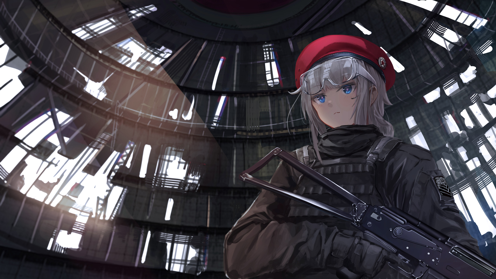

<!DOCTYPE html>


<html lang="en">
  

    <head>
      <meta charset="utf-8" />
        
      <meta
        name="viewport"
        content="width=device-width, initial-scale=1, maximum-scale=1"
      />
      <title> 余震</title>
  <meta name="generator" content="hexo-theme-ayer">
      
      <link rel="shortcut icon" href="/favicon.ico" />
       
<link rel="stylesheet" href="/dist/main.css">

      
<link rel="stylesheet" href="/css/fonts/remixicon.css">

      
<link rel="stylesheet" href="/css/custom.css">
 
      <script src="https://cdn.staticfile.org/pace/1.2.4/pace.min.js"></script>
       
 

      <link
        rel="stylesheet"
        href="https://cdn.jsdelivr.net/npm/@sweetalert2/theme-bulma@5.0.1/bulma.min.css"
      />
      <script src="https://cdn.jsdelivr.net/npm/sweetalert2@11.0.19/dist/sweetalert2.min.js"></script>

      <!-- mermaid -->
      
      <style>
        .swal2-styled.swal2-confirm {
          font-size: 1.6rem;
        }
      </style>
    </head>
  </html>
</html>


<body>
  <div id="app">
    
      
      <canvas width="1777" height="841"
        style="position: fixed; left: 0px; top: 0px; z-index: 99999; pointer-events: none;"></canvas>
      
    <main class="content on">
      
<section class="cover">
    
  <div class="cover-frame">
    <div class="bg-box">
      
    </div>
    <div class="cover-inner text-center text-white">
      <h1><a href="/">余震</a></h1>
      <div id="subtitle-box">
        
        <span id="subtitle"></span>
        
      </div>
      <div>
        
      </div>
    </div>
  </div>
  <div class="cover-learn-more">
    <a href="javascript:void(0)" class="anchor"><i class="ri-arrow-down-line"></i></a>
  </div>
</section>


<script src="https://cdn.staticfile.org/typed.js/2.0.12/typed.min.js"></script>


<!-- Subtitle -->

  <script>
    try {
      var typed = new Typed("#subtitle", {
        strings: ['那是河北廊坊的2001年', '你靠在战友身边，向天空接了个火', '点上了最后一支烟'],
        startDelay: 2,
        typeSpeed: 100,
        loop: true,
        backSpeed: 50,
        showCursor: true
      });
    } catch (err) {
      console.log(err)
    }
  </script>
  
<div id="main">
  <section class="outer">
  
  
  
<div class="notice" style="margin-top:50px">
    <i class="ri-heart-fill"></i>
    <div class="notice-content">欢迎来到我的个人博客，技术力不足见谅！使用电脑网页打开以获得最佳效果（</div>
</div>


<style>
    .notice {
        padding: 20px;
        border: 1px dashed #e6e6e6;
        color: #969696;
        position: relative;
        display: inline-block;
        width: 100%;
        background: #fbfbfb50;
        border-radius: 10px;
    }

    .notice i {
        float: left;
        color: #999;
        font-size: 16px;
        padding-right: 10px;
        vertical-align: middle;
        margin-top: -2px;
    }

    .notice-content {
        display: initial;
        vertical-align: middle;
    }
</style>
  
  <article class="articles">
    
    
    
    
    <article
  id="post-艹"
  class="article article-type-post"
  itemscope
  itemprop="blogPost"
  data-scroll-reveal
>
  <div class="article-inner">
    
    <header class="article-header">
       
<h2 itemprop="name">
  <a class="article-title" href="/2023/10/21/%E8%89%B9/"
    >艹</a> 
</h2>
 

      
    </header>
     
    <div class="article-meta">
      <a href="/2023/10/21/%E8%89%B9/" class="article-date">
  <time datetime="2023-10-21T09:40:43.000Z" itemprop="datePublished">2023-10-21</time>
</a>    
    </div>
      
    <div class="article-entry" itemprop="articleBody">
       
   
      <!-- reward -->
      
    </div>
    

    <!-- copyright -->
    
    <footer class="article-footer">
       
    </footer>
  </div>

    
 
   
  
</article>

    
    <article
  id="post-个人电脑四叉树使用备忘录"
  class="article article-type-post"
  itemscope
  itemprop="blogPost"
  data-scroll-reveal
>
  <div class="article-inner">
    
    <header class="article-header">
       
<h2 itemprop="name">
  <a class="article-title" href="/2023/10/21/%E4%B8%AA%E4%BA%BA%E7%94%B5%E8%84%91%E5%9B%9B%E5%8F%89%E6%A0%91%E4%BD%BF%E7%94%A8%E5%A4%87%E5%BF%98%E5%BD%95/"
    >个人电脑四叉树使用备忘录</a> 
</h2>
 

      
    </header>
     
    <div class="article-meta">
      <a href="/2023/10/21/%E4%B8%AA%E4%BA%BA%E7%94%B5%E8%84%91%E5%9B%9B%E5%8F%89%E6%A0%91%E4%BD%BF%E7%94%A8%E5%A4%87%E5%BF%98%E5%BD%95/" class="article-date">
  <time datetime="2023-10-21T03:46:35.000Z" itemprop="datePublished">2023-10-21</time>
</a>    
    </div>
      
    <div class="article-entry" itemprop="articleBody">
       
  <p></p>
<p>将视频test.mp4转化为帧存在FF文件夹里</p>
<figure class="highlight plaintext"><table><tr><td class="gutter"><pre><span class="line">1</span><br></pre></td><td class="code"><pre><span class="line">ffmpeg -i E:\TESTRANGE\4tree\test.mp4 E:\TESTRANGE\4tree\FF\input%d.jpg</span><br></pre></td></tr></table></figure>
<p><br>##转换为矩阵</p>
<figure class="highlight plaintext"><table><tr><td class="gutter"><pre><span class="line">1</span><br></pre></td><td class="code"><pre><span class="line">quadim E:\TESTRANGE\4tree\FF --ratio 20:18 --stroke-width 1</span><br></pre></td></tr></table></figure>

<p>##转换为园阵</p>
<figure class="highlight plaintext"><table><tr><td class="gutter"><pre><span class="line">1</span><br></pre></td><td class="code"><pre><span class="line">quadim E:\TESTRANGE\4tree\FF --ratio 24:25 --depth 6 --shape circle --bg-color transparent</span><br></pre></td></tr></table></figure>

<p>转换后得到该文件夹以替换（非合并）文件夹FF<br><br>##输出</p>
<figure class="highlight plaintext"><table><tr><td class="gutter"><pre><span class="line">1</span><br></pre></td><td class="code"><pre><span class="line">ffmpeg -i E:\TESTRANGE\4tree\FF\input%d.png -c:v libx264 -pix_fmt yuv420p E:\TESTRANGE\4tree\output.mp4</span><br></pre></td></tr></table></figure>
<p></p>
<p>##成果展示</p>
<iframe src="//player.bilibili.com/player.html?aid=277429502&bvid=BV1Jw411F752&cid=1306164292&p=1" scrolling="no" border="0" frameborder="no" framespacing="0" allowfullscreen="true"> </iframe>

<p>GUI以后再搞，技术力不够（晕</p>
 
      <!-- reward -->
      
    </div>
    

    <!-- copyright -->
    
    <footer class="article-footer">
       
    </footer>
  </div>

    
 
   
  
</article>

    
    <article
  id="post-Quadim四叉树图像处理README.zh-Hans"
  class="article article-type-post"
  itemscope
  itemprop="blogPost"
  data-scroll-reveal
>
  <div class="article-inner">
    
    <header class="article-header">
       
<h2 itemprop="name">
  <a class="article-title" href="/2023/10/21/Quadim%E5%9B%9B%E5%8F%89%E6%A0%91%E5%9B%BE%E5%83%8F%E5%A4%84%E7%90%86README.zh-Hans/"
    >Quadim四叉树图像处理</a> 
</h2>
 

      
    </header>
     
    <div class="article-meta">
      <a href="/2023/10/21/Quadim%E5%9B%9B%E5%8F%89%E6%A0%91%E5%9B%BE%E5%83%8F%E5%A4%84%E7%90%86README.zh-Hans/" class="article-date">
  <time datetime="2023-10-21T03:27:06.000Z" itemprop="datePublished">2023-10-21</time>
</a>    
    </div>
      
    <div class="article-entry" itemprop="articleBody">
       
  <h1 id="Quadim"><a href="#Quadim" class="headerlink" title="Quadim"></a>Quadim</h1><p><a target="_blank" rel="noopener" href="https://crates.io/crates/quadim"></a><br><a target="_blank" rel="noopener" href="https://crates.io/crates/quadim"></a><br><a href="#"></a><br><a target="_blank" rel="noopener" href="https://docs.rs/quadim"></a><br><a target="_blank" rel="noopener" href="https://github.com/eternal-io/quadim"></a></p>
<p>迄今为止最快的图像四叉树风格化实现，拥有上每秒上百帧的处理速度并且能够避免丑陋的长方形</p>
<h2 id="安装"><a href="#安装" class="headerlink" title="安装"></a>安装</h2><ol>
<li>安装 <a target="_blank" rel="noopener" href="https://www.rust-lang.org/zh-CN/tools/install">rust</a></li>
<li>打开命令行，运行：**<code>cargo install quadim -F build-bin</code>**，听着散热器的嗡嗡声，几分钟就好了。</li>
</ol>
<h2 id="使用前的准备"><a href="#使用前的准备" class="headerlink" title="使用前的准备"></a>使用前的准备</h2><h3 id="1-建议建立用于存放中间过程的图片的文件夹"><a href="#1-建议建立用于存放中间过程的图片的文件夹" class="headerlink" title="1.建议建立用于存放中间过程的图片的文件夹"></a>1.建议建立用于存放中间过程的图片的文件夹</h3><figure class="highlight plaintext"><table><tr><td class="gutter"><pre><span class="line">1</span><br><span class="line">2</span><br></pre></td><td class="code"><pre><span class="line">mkdir frames #用于存放拆帧后的图片</span><br><span class="line">mkdir output #用于存放quadim处理后的图片</span><br></pre></td></tr></table></figure>

<h3 id="2-如果你要对视频进行处理，请先用FFmpeg对视频进行拆帧处理"><a href="#2-如果你要对视频进行处理，请先用FFmpeg对视频进行拆帧处理" class="headerlink" title="2.如果你要对视频进行处理，请先用FFmpeg对视频进行拆帧处理"></a>2.如果你要对视频进行处理，请先用<code>FFmpeg</code>对视频进行拆帧处理</h3><figure class="highlight plaintext"><table><tr><td class="gutter"><pre><span class="line">1</span><br></pre></td><td class="code"><pre><span class="line">ffmpeg -i .\&lt;输入文件(请自行修改)&gt;.mp4 -q 2 .\frames\%05d.jpg</span><br></pre></td></tr></table></figure>

<h3 id="3-举例-假如我对frames文件夹进行了处理"><a href="#3-举例-假如我对frames文件夹进行了处理" class="headerlink" title="3.(举例)假如我对frames文件夹进行了处理"></a>3.(举例)假如我对<code>frames</code>文件夹进行了处理</h3><figure class="highlight plaintext"><table><tr><td class="gutter"><pre><span class="line">1</span><br><span class="line">2</span><br><span class="line">3</span><br></pre></td><td class="code"><pre><span class="line"># 相关参数设置请勿照抄, 请参考下面的参数的用法和意义</span><br><span class="line">quadim .\frames\ -o .\output --ratio 13:6 --depth 10 --stroke-width 1 --fps 24 --buffer 4492800</span><br><span class="line"># 相关参数设置请勿照抄, 请参考下面的参数的用法和意义</span><br></pre></td></tr></table></figure>

<h3 id="4-最后用FFmpeg合并处理后的图片-请保留原始输入视频文件"><a href="#4-最后用FFmpeg合并处理后的图片-请保留原始输入视频文件" class="headerlink" title="4.最后用FFmpeg合并处理后的图片(请保留原始输入视频文件)"></a>4.最后用<code>FFmpeg</code>合并处理后的图片(请保留原始输入视频文件)</h3><figure class="highlight plaintext"><table><tr><td class="gutter"><pre><span class="line">1</span><br></pre></td><td class="code"><pre><span class="line">ffmpeg -framerate &lt;帧数与原文件相同&gt; -i .\output\%04d.png -i .\&lt;输入文件(请自行修改)&gt;.mp4 -map 0:v:0 -map 1:a:0 -c:v h264 -c:a copy -crf 20 .\output.mp4</span><br></pre></td></tr></table></figure>

<h2 id="参数的用法和意义"><a href="#参数的用法和意义" class="headerlink" title="参数的用法和意义"></a>参数的用法和意义</h2><figure class="highlight plaintext"><table><tr><td class="gutter"><pre><span class="line">1</span><br><span class="line">2</span><br><span class="line">3</span><br><span class="line">4</span><br><span class="line">5</span><br><span class="line">6</span><br><span class="line">7</span><br><span class="line">8</span><br><span class="line">9</span><br><span class="line">10</span><br><span class="line">11</span><br><span class="line">12</span><br><span class="line">13</span><br><span class="line">14</span><br><span class="line">15</span><br><span class="line">16</span><br><span class="line">17</span><br><span class="line">18</span><br><span class="line">19</span><br><span class="line">20</span><br><span class="line">21</span><br><span class="line">22</span><br></pre></td><td class="code"><pre><span class="line">使用方法: quadim.exe [参数] &lt;输入文件路径&gt;</span><br><span class="line"></span><br><span class="line">输入文件路径:</span><br><span class="line">  &lt;单个图片或目录&gt;  某个图片文件, 或者某个文件夹里的所有图片文件</span><br><span class="line"></span><br><span class="line">参数:</span><br><span class="line">  -o, --output &lt;输出路径&gt;             没填这个选项就会自动创建基于时间命名的输出文件夹，有填就是你指定的文件名或目录</span><br><span class="line">  -r, --ratio &lt;分割比例&gt;              指定按什么比例将图像切分成子块 [默认值: 1:1] (建议填输入源的分辨率比例, 如16:9等)</span><br><span class="line">  -d, --depth &lt;分割深度&gt;              四叉树的最大深度 [默认值: 8]</span><br><span class="line">  -Y, --thres-ay &lt;处理阈值&gt;           对 Alpha 和 Luma 通道的阈值处理 [默认值: 20]</span><br><span class="line">  -C, --thres-cbcr &lt;处理阈值&gt;         对 Cb 和 Cr 通道进行阈值处理, 注意, 测试按顺序进行 [默认值: 2]</span><br><span class="line">      --merge &lt;合并算法&gt;              合并测试算法 [默认值: st-dev] [可选值: range, st-dev]</span><br><span class="line">  -s, --shape &lt;节点形状&gt;              四叉树上每个节点的形状 [默认值: rect] [可选值: rect, circle, cross, yr-add, yr-mul]</span><br><span class="line">  -B, --bg-color &lt;背景颜色&gt;           填充的背景颜色(如果需要) [默认值: 白色]</span><br><span class="line">  -S, --stroke-color &lt;分割线颜色&gt;     分割线的颜色 [默认值: 黑色]</span><br><span class="line">  -W, --stroke-width &lt;分割线粗细&gt;     分割线粗细 [默认值: 0]</span><br><span class="line">      --fps &lt;变化速率&gt;                笔刷的变化速率 [默认值: 30] (建议填写输入源的帧率)</span><br><span class="line">  -P, --parallel &lt;线程数量&gt;           要使用的线程数, 默认为 CPU 线程数 (可以不用填)</span><br><span class="line">      --buffer &lt;缓冲大小&gt;             缓冲区大小, 如输入源分辨率为 1920x1080, 则应填数值为 1920x1080=2073600, 以此类推 (建议填写)</span><br><span class="line">      --errors &lt;最大错误数&gt;           最大错误数, 当出现错误次数达到最大错误数时, 程序会自动结束 [默认值: 5]</span><br><span class="line">  -h, --help                         显示帮助信息 (使用&#x27;--help&#x27;选项能查看更多)</span><br><span class="line">  -V, --version                      显示当前版本号</span><br></pre></td></tr></table></figure>

<h2 id="展示"><a href="#展示" class="headerlink" title="展示"></a>展示</h2><figure class="highlight plaintext"><table><tr><td class="gutter"><pre><span class="line">1</span><br></pre></td><td class="code"><pre><span class="line">quadim E:\TESTRANGE\pic\121\out --ratio 20:18 --stroke-width 1</span><br></pre></td></tr></table></figure>

<p></p>
<figure class="highlight plaintext"><table><tr><td class="gutter"><pre><span class="line">1</span><br></pre></td><td class="code"><pre><span class="line">quadim E:\TESTRANGE\pic\121\out --ratio 24:25 --depth 6 --shape circle --bg-color transparent</span><br></pre></td></tr></table></figure>
<p></p>
<p>原图<br></p>
<p>都已经包装好了。不过需要注意的是，<strong>目前并不提供稳定性保证</strong>。<em>（因为我不知道该怎么保证 (○｀ 3′○)）</em></p>
<p><a target="_blank" rel="noopener" href="https://docs.rs/quadim">文档</a>……凑合着看看吧。注意<code>analyze()</code>和<code>render()</code>这俩函数，它们即是一切。</p>
<h2 id="特性列表"><a href="#特性列表" class="headerlink" title="特性列表"></a>特性列表</h2><ul>
<li>多线程！迄今为止最快的实现。</li>
<li>以 RGBA-8 格式处理图像。</li>
<li>合并测试在 YCbCr 而非 RGB 空间。</li>
<li>由于没有抗锯齿，因此在提供<code>--shape rect --border-width N</code>，<code>(N &gt; 0)</code>渲染参数时，实际上只会绘制左侧和上侧的边框。在指定较大的<code>border_width</code>以及突兀的<code>border_color</code>时会更加明显。</li>
<li>对于颜色参数：你可以传入<code>DarkSlateGray</code>、<code>hsla(168, 100%, 50%, 1)</code>，等等所有CSS里能写的颜色。<em>（感谢 <a target="_blank" rel="noopener" href="https://github.com/mazznoer/csscolorparser-rs">csscolorparser</a>）</em></li>
</ul>
<h2 id="画饼"><a href="#画饼" class="headerlink" title="画饼"></a>画饼</h2><ul>
<li>🔥 允许自定义笔刷，比如随时间旋转的十字、随音乐律动的光点、在HSL颜色空间过滤特定颜色！等等。</li>
<li>更友好的CLI：允许一次传入多张图片，以及自动探测最合适的切片比例。</li>
<li>把分析和渲染完全分离，允许直接存取四叉树二进制格式……</li>
</ul>
<h2 id="Quadim-的原理？"><a href="#Quadim-的原理？" class="headerlink" title="Quadim 的原理？"></a>Quadim 的原理？</h2><ol start="0">
<li><p>使用 <a target="_blank" rel="noopener" href="https://github.com/clap-rs/clap">clap</a> 解析命令行输入；使用 <a target="_blank" rel="noopener" href="https://github.com/eternal-io/src-dst-clarifier">src-dst-clarifier</a> 来处理源到目标文件的映射；使用 <a target="_blank" rel="noopener" href="https://github.com/rust-threadpool/rust-threadpool">threadpool</a> 进行并行处理。</p>
</li>
<li><p>Analyze 阶段</p>
<ol>
<li><p>根据<code>GenericParams::slicing_ratio</code>将图像划分成一个个子块。通常需要选择正确的比例来让子块保持正方形，比如<code>-r 16:9</code>。</p>
</li>
<li><p>对每个子块，根据<code>GenericParams::max_depth</code>深度优先地遍历四叉树。（存在一行代码限制了真正的最大深度，以保证子图像的边长始终大于零像素）</p>
</li>
<li><p>尝试合并所有子块。</p>
<p> 能合并的情况有两种：</p>
<ol>
<li>抵达了最大深度，则这块区域的所有像素始终被合并，计算平均值并缓存。</li>
<li>检查自身的四个子块<strong>左上角</strong>的四个像素，计算它们的标准差或是极差（根据<code>AnalyzeParams::merge_method</code>）并与<code>AnalyzeParams::thres_</code>进行比较，若认为波动程度小则允许合并。然后再计算平均值并缓存。</li>
</ol>
<p> 不能合并的情况有两种：</p>
<ol start="3">
<li>情况二的反相。</li>
<li>子块的子块的子块……不能合并。</li>
</ol>
</li>
<li><p>额外的数据结构<code>[CanvasPixel]</code>缓存“颜色平均值”和“该不该合并”。</p>
<p> （像素颜色平均值储存在相当于子块<strong>左上角</strong>的位置，通过右移可以很容易地寻址。<code>[CanvasPixel]</code>本身是一维的，但被抽象成与图像相同的大小，这就是为什么图像的像素数不能大于缓存的长度。）</p>
</li>
<li><p>遍历完成后，四叉树信息已经被完整记录在缓存中了。由于没有任何数据被重复计算，因此 Quadim 十分高效。</p>
</li>
</ol>
</li>
<li><p>Render 阶段</p>
<p> 这回是广度优先遍历四叉树了。简单来说就是把“颜色”从四叉树中取出并用“画笔”（trait <code>Brush</code>）画到原图上。</p>
<p> 由于新图的大小保证与原图相同，因此可以在原始图像缓冲区上就地操作，不需要额外的内存分配，这是 Quadim 保持高效的另一个要素。</p>
</li>
</ol>
<h2 id="已知问题"><a href="#已知问题" class="headerlink" title="已知问题"></a>已知问题</h2><ul>
<li>在绘制较大的圆&#x2F;椭圆时，它会被裁掉一部分。（详见 <a target="_blank" rel="noopener" href="https://github.com/image-rs/imageproc/issues/519">image-rs&#x2F;imageproc#519</a>）</li>
</ul>
<h2 id="附录：exit-code含义"><a href="#附录：exit-code含义" class="headerlink" title="附录：exit code含义"></a>附录：<code>exit code</code>含义</h2><ol start="0">
<li>成功</li>
<li>部分错误</li>
<li>错误过多，提前终止</li>
<li>致命错误，在处理任何图像前就已经退出；一般是传错参数了</li>
</ol>
 
      <!-- reward -->
      
    </div>
    

    <!-- copyright -->
    
    <footer class="article-footer">
       
    </footer>
  </div>

    
 
   
  
</article>

    
    <article
  id="post-2016-1-不能共存的节日"
  class="article article-type-post"
  itemscope
  itemprop="blogPost"
  data-scroll-reveal
>
  <div class="article-inner">
    
    <header class="article-header">
       
<h2 itemprop="name">
  <a class="article-title" href="/2023/10/14/2016-1-%E4%B8%8D%E8%83%BD%E5%85%B1%E5%AD%98%E7%9A%84%E8%8A%82%E6%97%A5/"
    >2016-1-不能共存的节日</a> 
</h2>
 

      
    </header>
     
    <div class="article-meta">
      <a href="/2023/10/14/2016-1-%E4%B8%8D%E8%83%BD%E5%85%B1%E5%AD%98%E7%9A%84%E8%8A%82%E6%97%A5/" class="article-date">
  <time datetime="2023-10-14T13:45:41.000Z" itemprop="datePublished">2023-10-14</time>
</a>    
    </div>
      
    <div class="article-entry" itemprop="articleBody">
       
  <p>不能共存的节日  刘慈欣</p>
<p>1961年4月12日，拜克努尔航天基地。<br>谢尔盖·科罗廖夫站在被烧黑的发射架旁，虽然火箭升空已经快一个小时了，导流槽中仍有热浪涌出，给这里的早春带来盛夏的感觉。他抬头看看蓝天，尾迹已经消散，在那看不到的太空中，人类第一名宇航员已经绕地球飞行了大半圈。<br>“总设计师同志，请接受一个普通人的祝贺！”<br>科罗廖夫回过头来，看到一个身穿工作服的中年男人对他伸出手来，从服装看他是基地级别最低的工人。科罗廖夫握了他的手。那人从裤口袋中掏出一个瓶子，又从另一个口袋摸出一个小金属酒杯，“我们得喝一杯，总设计师同志，可我只有一个杯子。”他咬开瓶盖给杯子倒满酒。<br>科罗廖夫接过那个脏兮兮的杯子，他现在已经疾病缠身，结肠上有肿瘤，不适合喝酒。再说在这个伟大的时刻，他完全可以无视这个人，但科罗廖夫这时可以怠慢官员和将军，却不会无视这个最底层的人，在西伯利亚的那些年，他的身份比这人还低，饿着肚子在矿井里搬石头。<br>那人拿着瓶子与总设计师碰了一下杯，然后猛灌一口。<br>“在这个伟大的时刻，您能允许我讲个笑话来庆祝吗？”<br>科罗廖夫也喝干了杯子里的酒，伏特加像火箭燃料似的把热乎乎的感觉传遍全身。<br>“您再来点儿。”那人给科罗廖夫的酒杯填满。<br>“谢谢，你的笑话？”总设计师微笑着问。<br>“我是一个外星人，您就叫我……G吧， 我来地球考察，我的兴趣是地球的重要节日。”<br>“哦，那你的收获一定不小，只要你调查的范围足够广，地球的每一天可能都是节日。”<br>“我之前进行了大量的考察和研究，那些都不是重要节日，事实上，真正的重要节日我一个都没有发现。”<br>“圣诞节不重要吗？”<br>“当然不，尤其对布尔什维克而言。”<br>“那新年呢。”<br>“也不重要，这颗行星又公转了一圈而已。”<br>“那你认为的重大节日是什么呢？” 科罗廖夫有些心不在焉，他转身向不远处的军用吉普走去，他要回控制中心了，东方号飞船即将开始减速，开始再入过程。<br>“比如说分裂节。”<br>“什么？”<br>“地球上生命细胞的第一次分裂，当然那是很久以前的事了，几十亿年前吧。”<br>正要上车的科罗廖夫停下来，扶着车门回头看着G。<br>“再比如登陆节，就是生命从海洋爬上陆地的那一天；下树节，长臂猿从树上下来的第一天；还有直立节、工具节、取火节等等。”<br>“但这些节日，我们是无法知道具体日期的。” 科罗廖夫说。<br>“那可以随便定一个，其实圣诞节就是在公元三百多年时由教会随便定的，圣经上根本没有记载耶稣是什么时候生的。”<br>科罗廖夫要上车，G拉住了他，“总设计师同志，我想说，今天就是人类一个重大的节日，我把它命名为诞生节。”<br>“谁诞生？”<br>“人类。”<br>“人类早就诞生了。”<br>“哦不， 如果您此时处于加加林上尉，哦他好像刚升为少校是吧，的位置，就会发现地球是一个蓝色的子宫，婴儿只有出了子宫才能称为诞生……哦，总设计师同志，很抱歉我的笑话不可笑。”<br>科罗廖夫再次同G握了一下手：“很有意思的，谢谢你，同志，我以后会每年都庆祝这一节日的。”<br>“哦不不，”G摇摇头，“今天是否能真正成为诞生节，还要等等看，还要等等看才知道呢，总设计师同志。”<br>总设计师的车开走后，G大脑中的通讯单元把一条信息发往月球上的中转通讯站，由此发回母星：蓝星纪年1961年4月12日有可能成为诞生节，目前评估可能性为52.69%，持续监测中。<br>2050年10月5日，北京中国科学院脑科学与人机工程研究中心。<br>大屏幕上显示：<br>窝西淫累，窝向西桶鼠入自慰鼠具，山.14一壶酒，虫屎。<br>我是淫类，我向系桶输入思慰数具，3.14一壶9，虫试。<br>我是人类，我向系统输入思慰数据，3.141壶9，重试。<br>我是人类，我向系统输入思维数据，3.14159。<br>最后一行显示后，实验室里爆发出欢呼声。这些数据是从一个人的大脑直接输入到计算机中，实验者戴着大脑感应头盔，第一实现了人与电脑的直接连接，<br>兴奋持续了一个多小时，人们开始散去，脑机接口项目首席科学家丁一也从兴奋中平静下来。<br>“各位老师，请接受一个普通人的祝贺。”<br>人们回头，看到一个夹着一根扫帚的中年男人在对他们微笑，这是实验室的勤杂工，之前他们间没有说过什么话。这人放下扫帚，从工作服口袋里拿出一瓶酒，又从另一个口袋里拿出一摞显然是从门口饮水机上拿来的纸杯，分给大家后挨着倒酒。<br>“你知道我们在做什么？”有人问，像以前创造历史的科学家一样，他们多少意识到这个突破的意义，但也没有十分把握，因为许多当时看似划时代的成果都淹没于时间之中，他们此时只有项目完成后如释重负的轻松感。一个勤杂工居然对这个成果如此兴奋，让他们很好奇。<br>“当然知道，这是一个伟大的时刻”勤杂工说。<br>人们开始喝纸杯里的酒，北京二锅头像把热乎乎的感觉传遍全身，像更新系统的数据传遍网络。<br>“在这个伟大的时刻，能允许我讲个笑话来庆祝吗？”勤杂工说。<br>“笑话？呵呵，你讲。”<br>“我是一个外星人，您就叫我G吧， 我来地球考察，我的兴趣是地球的重要节日。”<br>“哦，那你的收获一定不小，只要你调查的范围足够广，地球的每一天可能都是节日。现在节日的数量还在很快增加中，像双棍节（注：一个同性恋者网络购物节）什么的。”<br>“我之前进行了大量的考察和研究，那些都不是重要节日。我是想说，今天才是人类的一个重要的节日。”<br>科学家们互相看看，会意地点头，丁一对G说：“有可能，你把这个节日叫什么呢？”<br>“我还没想好。”G仰脖把瓶里剩下的一点酒喝了，“唉，上次喝酒是和总设计师同志，可敬的总设计师同志。”<br>“总设计师？还是……同志？是谁？”有人问。<br>“科罗廖夫，谢尔盖·帕夫洛维奇·科罗廖夫。”<br>丁一点点头：“人类第一艘宇宙飞船的总设计师，不过，他活着的时候还没有你吧？”<br>“丁总，人家是外星人。”有人打趣道。<br>“呵呵我忘了，不过，G先生，”丁一抿了一口酒，“科罗廖夫、冯·布劳恩这些伟大的前辈确实值的敬仰，但我们今天的突破有可能使他们所有的努力全无意义。”<br>“哦？”G露出很天真的疑问状。<br>“这个突破之后，脑机连接技术将走上康庄大道，将飞速发展。很快，互联网上联接的将不是电脑而是大脑，接下来顺理成章的是，人的记忆、意识和全部人格将能够上载到计算机和网络中，人类有可能生活在虚拟世界中，虚拟世界，你想想，在那里人什么都可以做，想什么就有什么，像上帝一样。在那里一个人可以拥有整个星球，”<br>“甚至整个宇宙，每个人一个宇宙。”G说。<br>“对呀，所以，飞出地球太空航行算嘛呀。”一个操着京腔的年轻人说。<br>“其实这个伟大的进程早已开始，”丁一说，“互联网、移动互联、可穿戴设备、VR、物联网……记得吗？几十年前父母们居然责怪孩子们沉溺于网络，而现在，断开网络沉溺于现实是最让人不耻的懒惰和堕落。今天的突破，让人类迈过IT伊甸园的最后一道门槛。”<br>“外星人先生，”有人说，“你能想象一下人类未来的IT天堂吗？”<br>“未来的虚拟世界确实是天堂，在那里面每个人确实是上帝，其美妙是任何想象都难以企及的。我只想像一下那时的现实世界。开始，现实中的人会越来越少，虚拟天堂那么好，谁还愿意呆在苦逼的现实中，都争相上载自己。地球渐渐变成人烟稀少的地方，最后，现实中一个人都没有了，世界回到人类出现前的样子，森林和植被覆盖着一切，大群的野生动物在自由地漫游和飞翔……只是在某个大陆的某个角落，有一个深深的地下室，其中运行着一台大电脑，电脑中生活着几百亿虚拟人类。”<br>“哇，好诗意！小李，再弄瓶酒去，哦不用，外星人先生，去和我们一起吃庆功宴去！”丁一搂着G的肩膀说。<br>G摇摇头，把手中的空酒瓶放进垃圾篓，弯腰拾起扫帚，开始打扫经过几天通宵工作凌乱的实验室，他在做的时候用梦呓般的声音轻声说：“与总设计师同志分别后，我在太空中漫游，又探访过无数的世界，那些行星，蓝的、红的、黄的……各种颜色的子宫，智慧文明在其中孕育，在现实中成长，飞向太空，却在虚拟世界中熄灭，像荷塘中的荧火虫，一闪一闪，最终消失在暗夜里。你们看看星空，一片寂静，知道为什么了吧……哦各位，很抱歉我的笑话不可笑。”<br>G拿起垃圾篓，慢慢走了出去，他的背影显的苍老了许多。<br>“原来是个文青耶。”有人悄声说。<br>“呵呵，这就是所有文青的未来，只有虚拟世界才能救他们。”丁一说，引起几声窃笑。<br>在实验楼的大门，G大脑中的通讯单元把一条信息发往月球上的中转通讯站，由此发回母星：蓝星纪年蓝星纪年1961年4月12日疑似诞生节取消，2050年10月5日确定成为重大节日，暂命名：流产节。</p>
<p>——全文完——</p>
 
      <!-- reward -->
      
    </div>
    

    <!-- copyright -->
    
    <footer class="article-footer">
       
    </footer>
  </div>

    
 
   
  
</article>

    
    <article
  id="post-2015-3-圆（人列计算机）"
  class="article article-type-post"
  itemscope
  itemprop="blogPost"
  data-scroll-reveal
>
  <div class="article-inner">
    
    <header class="article-header">
       
<h2 itemprop="name">
  <a class="article-title" href="/2023/10/14/2015-3-%E5%9C%86%EF%BC%88%E4%BA%BA%E5%88%97%E8%AE%A1%E7%AE%97%E6%9C%BA%EF%BC%89/"
    >2015-3-圆（人列计算机）</a> 
</h2>
 

      
    </header>
     
    <div class="article-meta">
      <a href="/2023/10/14/2015-3-%E5%9C%86%EF%BC%88%E4%BA%BA%E5%88%97%E8%AE%A1%E7%AE%97%E6%9C%BA%EF%BC%89/" class="article-date">
  <time datetime="2023-10-14T13:45:09.000Z" itemprop="datePublished">2023-10-14</time>
</a>    
    </div>
      
    <div class="article-entry" itemprop="articleBody">
       
  <p>  圆  刘慈欣</p>
<p>  注：该小说原文为英文，无官方中文版（本译文寻自网络）。<br>没出中文版是因为这部小说主要是为了推动国外的三体英文版销售，吸引国外读者阅读三体，在中国发出来对于看过三体的读者来似乎说没有多大意义。</p>
<p>  荆轲把放在长案上的地图展开，秦王看着帛卷上徐徐展现的敌国山河，感到舒畅无比。地图上的山河让他觉得容易把握，而站在真实的辽阔大地上，即使是他也有一种无力感。</p>
<p>   图展到尽头时，寒光闪，一把精致的匕首显露出来。咸阳宫大殿里的空气似乎瞬间凝固。文武大臣都站在距秦王三丈之外，且手无寸铁；持械卫士离得更远，都在台阶下面。拉开的距离本是为了大王的安全起见，现在却使这突如其夹的刺杀变得不可阻止。</p>
<p>   秦王仍然镇静，他只是扫了一眼匕首，便把阴沉而犀利的日光集中在荆轲身上。心思缜密的他已经注意到，匕首的柄对着自己，刀尖对着刺客。荆轲拿起匕首，大殿上响起一两声短促并很快抑制住的惊呼。但秦王暗松了一口气，他看到荆轲握着的是刀身，柄仍然对着自己。“请陛下杀了我。”荆轲把匕首举过头顶，俯首说道，“太子丹让我来行刺您，君命难违；但对您的敬仰让我不可能下手。”秦工没有动。</p>
<p>  “陛下轻刺罪臣即可。匕首淬火时浸了别毒，见血封喉。”</p>
<p>  秦王仍然端坐，轻轻抬手，制止了从台阶下面冲上来的卫士，不动声色地说：“像你这样的人，如果这次不杀我，以后就更不会了。”</p>
<p>  荆轲的右于滑到匕首的柄上，刀尖仍对着自己，似乎准备目尽。“你是博学之士，去军中为朕做事，到时再死不迟。”秦王冷冷地说，同时一摆手，示意荆轲退下。燕国的刺客把匕首轻放在长案上，倒着退出了大殿。秦王随后起身，走到殿门外。长空万里无云，他看到了蓝天上雪白的月亮，玲珑剔透，像长夜留下的梦幻。<br>        “荆轲。”他叫住了正在走下长阶的刺客，“白天也会有月亮吗？”长阶上的荆轲一袭白衣。在阳光下像雪亮的火焰。他叩首道：“回陛下，日月同辉是常有的事，每月初四到十二，只要天气好，就能在白天的不同时间看到月亮。”</p>
<p>  秦王点点头，沉吟道：“哦，日月同辉是常有的事……”</p>
<p>两年后，秦王再次召见荆轲。当荆轲夹到咸阳宫外时，看到三个官员在儿名军士的押解下走出殿门，他们头上的冠饰已经摘掉，其中两人脸色煞白地低头走过，另一人已浑身瘫软，无法行走，只能由两名军士拖下台阶，他嘴里含糊地喊着“大王饶命”之类的，好像还提到了什么药。这些人大概已被秦王下令处死。</p>
<p>  秦王见到荆轲时和颜悦色，好像刚才没有发生过什么不愉快的事。他指指三个即将丢命的官员离去的方向说：“徐福的船队出了东海再也没有回来，总得有人负责。”</p>
<p>徐福是一个术士，声称能到东海的三座仙山上为秦王找到长生不老的药。他得到了一支庞大的船队，我有三千童男童女和大量财宝作为给持有长生药的仙人的礼物。但舰队出航已经三年，却没有任何消息。</p>
<p> 奏始皇一摆手，结束了刚才的话题，“朕听说你这两年做了许多事。你发明的弓箭用同样的力气可以有一倍的射程；你设计的战车装有神奇的弹簧，在坑洼的地面上也能奔驰如飞；你监建的桥梁只用了一半的材料，却更加坚固……朕很高兴，你是怎么做到这些的？”</p>
<p> “我照上天的旨意做，就能做成许多事。”<br>    “徐福也曾经这么说。”<br>    “陛下，恕我直言，徐福这样的术士从占卜和冥想中是无法参透上天旨意的，他们根本不懂上天的语言。”<br>    “那上天的语言是什么？”<br>    “数学，也就是数字和形状，这是上天书写世界的语言。”<br>    秦王若有所思地点点头，“好。那你最近在做些什么？”<br>    “我一直在尽自己的努力，为陛下参透上天更多的旨意。”<br>    “有进展吗？”<br>    “有的，陛下，我甚至感觉自己已经站在上天奥秘宝库的大门前。”<br>    “上天是怎样告诉你那些奥秘的？你刚才说上天的语言是数字和形状。”<br>    “圆”<br>    在迷惑的秦王面前，荆轲得到允许后拿起笔，在长案的一张缣帛上画了一个圆，他没有借助任何工具，却把那个圆画得很正。<br>    “陛下，除了人工制品，您在世问万物中见过正圆吗？”<br>    秦王想了想说：“很少见，朕曾经与一头鹰对视过，它的眸子很圆。”<br>    “是的，陛下。还有一些水中动物的卵、露珠与叶面的相交线等。<br>    它们看似正圆，但这些我精确测量过，都不是正圆。就像我画的这个，看上去很圆，但它有肉眼看不出的变形和误差，其实是个椭圆，不是真正的圆。我一直在寻找真正的圆，发现尘世中是没有的，但天上有。”<br>    “哦？”<br>    “斗胆请陛下到殿外—观苍穹。”<br>     秦王和荆轲走出殿门。发现这又是一个日月同辉的白天，晴空中太阳和月亮同时出现。<br>    “太阳和满月都是正圆。”荆轲指着大空说，“上天把尘世间罕见的正圆放到天上，而且放了两个，成了天上最显眼的存在，这已经表示得很明白了：上天的奥秘在圆里面。”<br>    “但圆是最简单的形状，除了直线，就数它最简单了。”秦王说，转身返回大殿。<br>    “但，陛下，这简单中蕴含着深不见底的奥秘。”荆轲跟在秦王后面说，回到长案边时，他又用笔在缣帛上画了个长方形。“您请看这个长方形，它的长边四寸，短边两寸，其实上天在这个图形中也有要说的话。”<br>    “说了什么？”<br>    “上天说，这长方形的长边与短边之比是2。”<br>    “你在要弄朕吗？”<br>    “微臣不敢。这是上天说的一句简单的话，陛下请再看——“荆轲又画了一个长方形，“这个长方形的长边是九寸，短边是七寸，上天在这个图形中表达的意思就丰富多了。”<br>    “朕看仍然极其简单。”<br>    “不然，陛下。这个长方形的长边与短边的比值是：1. 285714285714285714……这个值中的‘285714’可以无限循环，于是使比值无限精确，但永远达不到绝对精确。您看，虽然也很简单，但这里面的涵义就丰富多了。”<br>    秦王点点头，“有意思。”<br>    “下面来看上大给出的最神奇的形状：圆。”荆轲在之前画的那个圆中画了一条直径线，“陛下您看，圆的周长与直径的比值是一串无限长的数字，它的头几位是 3.1415926，在后面无限延伸，永不重复！”<br>    “永不重复吗？”<br>    “是的。设想有一大张缣帛，有天下那么大，这串数字可用最小的蝇头篆书从这里一直写到天边，然后另起一行接着写，最后可以写满这覆盖天下的缣帛，但里面没有重复的数字段。陛下，这个无限长的数字中，就藏着上天的奥秘啊！”</p>
<p>  秦王仍然不动声色，但荆轲注意到他的眼睛里放出光来。<br>    “即使你得到了这个数字，又要怎样从中解读出上天说的话呢？”<br>    “有多种方法，其中有一种叫‘坐标’的方法，可以把数字变成图<br>    “那图形会是什么？”<br>    “不知道，可能是一幅提示奥秘的大图，或者是一篇文章，甚至可能是一本书。但关键是要把圆周率计算到足够多的位数才能解读出内容来，估计得算到上万位，甚至十万位才行。而我现在，只算到又区区不足百位，远远不足以看出什么来。”<br>    “才算了这么点儿？”<br>    “陛下，这可是微臣十年的心血啊！圆周率的计算方法是用内切或外切的多边形逐步逼近圆形、多边形的边越多就越精确算出的位数也就越多，但计算量也因此急剧增大，非人力所能及。”<br>    秦王盯着那个画有直径的圆问道：“这里面会有长生不老的奥秘吗？”<br>    “陛下，一定会有的！”荆轲兴奋起来，“生与死是上天为世界所定的最基本的规则，所以生与死的奥秘一定在这里面，当然长生的奥秘也在其中。”<br>    “那就把圆周率算出来。给你两年时间，算到一万位；五年之内，再算到十万位。”<br>    “陛下，这真的不可能。”<br>    秦王用长袖拂过案面，绘有图形的雏帛和笔墨都落到地上，“需要多少人力物力你尽管开口，”他盯着荆轲的目光变得阴冷，“但一定要按时算出来。”<br>    五天后，秦王再次召见荆轲，这次不是在咸阳宫，而是在他巡游的途中。秦王很关心地问起圆周率计算的进展。<br>    荆轲俯首说：“陛下，我召集了帝国全部有能力进行这样计算的数学家，不过八人而已。按照所需的计算量估算，即使穷尽我们九人毕生的精力，也只能把圆周率的位数向前推算三千位左右。两年时间竭尽全力也只能算出三百位。”<br>    秦王点点头，示意荆轲随他散步。他们来到一座花岗岩石碑前，石碑有两丈多高，非同寻常的是，碑顶端有一个孔洞，石碑被穿过孔洞的粗牛皮绳悬吊在一副高大的木架上，像悬在空中的巨大秤砣。平滑的碑底离地有一人多高，碑上没有刻字。<br>    秦王指着悬空的巨碑说：“你看，如果你按时算出了圆周率，这就是朕为你立的丰碑。它将被放到地上，在上面刻上你的丰功伟绩；如果你算不出来，这碑就是你的耻辱柱。它当然也会被放到地上，但在砍断吊碑的绳子之前，你得先坐在碑下面。”<br>    荆轲抬头望望那悬空的巨石，它占据了大半片天空，在移动的白云的背景下显得黑乎乎的，有一种阴森的压迫感。<br>    荆轲转向秦王说：“我的命本是陛下的。即使按时算出了圆周率，也赎不了我的罪，所以我不惧死。请再给我五天时间，如果还想不出可行的方案，我会自己坐到石碑下面。”<br>    四天后，荆轲请求秦王召见，秦王立刻应允。显然圆周率的计算工程是秦王最关心的事情。<br>    “从你脸上能看出来，你想出办法了。“秦王微笑着说。<br>    荆轲没有正面回答秦王的问题，“陛下，您说过在人力上会满足我提出的要求，不知这个承诺现在是否还有效？”<br>    “当然。”<br>    “我需要一百万军队。”<br>    这个数目并没有使秦王吃惊，他只是略略扬了扬眉毛，“三百万什么样的军队？”<br>    “就是帝国现有的军队。”<br>    “你应该知道，军中的士兵大部分是文盲。两年时间，你根本不可能教会他们那样复杂的数学，更别说完成计算了。“<br>    “陛下，他们需要学的计算技能，即使是最笨的士兵，我都能在一个时辰内教会。请给我三个士兵，我将为您满示。”<br>    “三个？只要三个吗？朕可以立刻给你三千个。”<br>    “陛下，我只要三个。”<br>    秦王挥手召来三个十兵。他们都很年轻，与秦国的其他士兵一样，一举一动都像是听从命令的机器。<br>    “我不知道你们的名字，“荆轲拍拍前两个士兵的肩，“你们俩负责数字输入，就叫‘入1’和‘入2’吧。”他又指指最后一名士兵，“你，负责数字输出，就叫“出”吧。”荆轲伸手拖动二名士兵，“这样，站成一个三角形，出是顶端，入1和入2是底边。”<br>    你让他们站成楔形攻击队形入就行了？”秦王有些轻蔑地看着荆轲。<br>    荆轲不知从什么地方掏出六面小旗，三白三黑，分给三个上兵，每人一白一黑。“白色代表0’”，黑色代表‘1’。好，现在听我说。出，你转身看着入1和入2。如果他们都举黑旗，你就举黑旗，其他情况你都举白旗。这种情况有二种：入1白、入2黑；入1黑、入2白；入1入2都是白。”</p>
<p>  荆轲又重复了一遍刚才的话，确认三个土兵都记住后，他大声命令：“现在开始运行！入1、入2，你们随意举旗。好，举！好，再举！举！”<br>    入1和入2举了三次旗，第一次是黑黑，第二次是白黑，第三次是黑白。出都给出了正确反应，分别举了一次黑和两次白。<br>    “很好，运行正确。陛下，您的士兵很聪明！”<br>    “这白痴都会！你能告诉朕他们在干什么吗？”秦王一脸困惑地<br>    “这三个人组成了一个计算系统的部件，叫‘与门’。向这个部件中输入的两个数字如果都是1，则输出结果为1；否则，如果输入的数字有一个为0，如10或00，则输出为0。”荆轲说完后停了一会儿，好让秦王理解。<br>    秦王而无表情地说：“好。继续。”<br>    荆轲转向排成三角阵的三个士兵，“我们来构建下一个门部件。出，只要你看到入1和入2中有一个人举黑旗，你就举黑旗，这种情况有三种组合：黑黑、白黑、黑白。剩下的一种情况是白白，你就举白旗。明白了吗？好孩子，你真聪明。门部件的正确运行你是关键，好好干，会奖赏你的！下面开始运行：举！好，再举！再举！好极了。运行正常，陛下。这个部件叫‘或门’，在输入的两个数字中有一个为1的情况下，输出为1。”<br>    接着，荆轲又用三个士兵构建了与非门、或非门、异或门、同或门和三态门，最后只用两个士兵构建了最简单的非门，出总是举与人颜色相反的旗。<br>    荆轲对秦王俯首说：“现在，陛下，所有的门部件都已演示完毕，三百万士兵需要学的只有这些。”<br>    “用这些小孩子都会的简单把戏如何进行那么复杂的计算？”秦王看荆轲的目光中充满了不信任。<br>    “伟大的陛下，复杂的宇宙万物其实都是由最简单的元素构成的；同样，巨量的简单元素通过适当的结构聚合为一体，则能产生极其复杂的机能。三百万士兵将构成百万个刚才演示的门部件，这些部件再构成一个完整的军阵，能够高速进行任何复杂的计算，我把它叫计算阵。”<br>    “朕还是不明白计算将如何进行。”<br>    “这很复杂，以后如果陛下有兴趣，我会为您详细解释。现在只需说明，计算阵的计算是以一种全新的计数方式为基础的，在这种计数方式中，只有0和1两个数码，就是刚才的白旗和黑旗，但这种计数方式可以用0和1表示任何数字，这使得计算阵用大量简单部件的集成进行高速计算成为可能。”<br>    “三百万，这几乎是大秦的全部兵力了，不过，朕给你…”秦王轻叹一声，意味深长地加了一句，“快去做吧，厌感觉老了。”</p>
<p>  一年过去了。<br>    又是一个晴朗的日月同辉的白天，秦王和荆轲站在高耸的石台上，身后是众多的文臣武将。在他们下方，三百万秦国军队宏伟的方阵铺展在大地上，这是一个边长十里的正方形。在初升的太阳下，方阵凝固了似的纹丝不动。仿佛一张由三百万尊兵马俑织成的巨毯。飞翔的鸟群误入这巨毯上空时，立刻感到了下方浓重的肃杀之气，顿时大乱，惊慌地四散而逃。<br>    “陛下，您的军队真是举世无双，这么短的时间，就完成了如此复杂的训练。”荆轲对秦王赞叹道。<br>    “虽然整体上复杂，但每个士兵要做的很简单，比起以前的军事训练，这算不了什么。“秦王按着长剑剑柄说。<br>    “那么，请陛下发出您伟大的号令吧！”荆轲用激动的声音说。<br>    秦王点点头。一名卫士奔跑过来，握住秦王的到柄向后退了几步，抽出了那柄秦王本人无法抽出的青铜长剑，然后上前跪下，将剑呈给秦王，秦王对着长空扬起长剑，高声喊道：<br>    “成计算阵！”<br>    战鼓激荡，石台四角的四尊青铜大鼎同时轰地燃烧起来，下面的士兵用宏大的合唱将秦王的号令传下去：<br>    “成计算阵——“<br>    大地上，方阵均匀的色彩开始扰动，复杂精细的线路结构浮现出米，并渐渐充满了整个方阵。十分钟后，大地上出现了一块一百平方里的计算阵列。<br>    荆轲指着下方巨大的阵列介绍道：“陛下，我把这个阵列命名为‘秦一号’。请看，那里——中心部分——是中央处理阵，是计算阵的核心计算部件，由您最精锐的军团构成，对照这张图您可以看到里面的加法阵、寄存阵、堆栈存储阵等：外围整齐的部分是内存阵，构建这部分时我们发现人数不够，好在这部分每个单元的动作最简单，我们就训练每个士兵拿多种颜色的旗帜，组合起来后，一个人就能同时完成最初二十个人的操作，这就使内存阵的容量达到了运行圆周率计算程序的最低要求。您再看那条贯穿整个阵列的通道，还有那些在通道上待命的轻骑兵，那是系统总线阵，负责在各个子阵间传递信息。”<br>    两名士兵从后面搬来一个一人多高的大帛卷，在秦王面前展开来。当帛卷展到尽头时，周围不止一人想起了似曾相识的情景，不由一阵头皮发紧，但匕首并没有出现，面前只有一张写满符号的缣帛。<br>    那些符号都是蝇头大小，密密麻麻，看上去与下面的计算阵列一样复杂，令人头晕目眩。<br>    “陛下，这就是我编写的圆周率计算程序。您看——”荆轲指指下面的计算阵，“这阵列是硬件。而这张帛上写的是软件，是计算阵的灵魂。硬件和软件，就如同琴和乐谱的关系，计算阵运行这个软件进行圆周率的计算。”<br>    秦王点点头，“那就开始吧。”<br>    荆轲双手合十，举过头顶，庄严地喊道：“奉大王御旨，计算阵启动！系统自检！”<br>    在石台的中部，一排旗手用旗语发出指令。一时间，大地上三百万人构成的巨型阵列仿佛液化了，泛起粼粼波光，那是几百万面小旗在挥动。<br>    “自检完成！引导程序运行！操作系统加载！”<br>    人列计算机系统总线上的轻骑兵快速运动起来，总线立刻变成一条湍急的河流。这河流沿途又分成无数条细小的支流，渗入各个模块阵列之中。很快，黑白旗的涟漪演化成汹涌的浪潮，激荡在整个阵列上。中央处理阵列区的激荡最为剧烈，像一片燃烧的火药。突然，仿佛火药燃尽，中央处理阵列区的扰动渐渐平静下来，最后竞完全静止了。以它为圆心。这静止向各个方向飞快扩散开来，像快速封冻的湖面。最后，大部分计算阵静止了，只有一些零星的死循环在以不变的节奏没有生气地闪动着。<br>    “系统锁死！“一名信号官高喊。故障原因很快查清，是中央处理阵列中状态存储子阵的一个门部件运行出错。<br>    “系统重新启动！”荆轲胸有成竹地命令道。<br>    “慢。”秦三拄着长剑说，“更换出错部件。组成那个部件的所有兵卒，斩！以后故障照此办理。”<br>    一队利剑出鞘的骑兵冲进中央处理阵，斩杀了三名士兵并更换了新人。从高台上看去，中央处理阵中出现了三摊醒目的血迹。荆轲重新发布了启动命令。这次启动十分顺利，十分钟后，圆周率计算程序进入运行状态。波光粼粼的计算阵开始了漫长的计算。<br>    “真是很有意思。”秦王手指壮观的计算阵说，“每个人如此简单的行为，竟产生了如此复杂的智慧！”<br>    “伟大的秦王，这是机器的机械运行，不是智慧。这些普通卑贱的人都是一个个0，只有在最前面加上您这样一个1，他们的整体才有意义。”荆轲带着奉承的微笑说。<br>    “要多长时何才能算到圆周率的一万位？”秦王。<br>    “十个月左右，此可能更快些。”<br>    大将王翦上前说：“陛下请三思，即使在常规的军事行动中，帝国大部分军力在如比长的时间里集结于一处开阔地，也是十分危险的行为。阵中的三百万士兵都不带兵器，只拿着小旗，而计算阵不是作战队形，在攻击面前脆弱无比，不堪一击。即使在平时疏散这样庞人的阵列也需要大半天时间，一旦面临攻击。疏散撤退是根本来不及的！陛下，您看看下面的计算阵，就是砧板上的肉啊！”<br>    秦王没有回答，把目光转向荆轲。荆轲俯首说：“王将军所言极是，是否继续计算，请陛下三思。”<br>    言毕，荆轲做了一个从未有过的失礼举动——他抬头与秦王对视了一秒，那目光中的含义秦王立刻就懂了：您所有的丰功伟绩都是0，只有加上永生这个1才有意义。<br>    “将军过虑了。”秦王一拂长袖说，“韩、魏、赵、楚四国已灭，剩下的燕，齐两国君工昏聩，国力孱弱，已是奄奄一息，不足为惧。按照两国现在的衰落趁势，圆周率计算完成时，它们可能已经自行崩溃，归顺大秦。当然，朕赞赏将军的谨慎，建议在计算阵周围建立远距离警戒线，同时密切注意燕、齐两军的动向，可保万无一失。”他高举长剑，庄重地对着长空宜布，“计算必须完成，朕意已决！”<br>    计算阵顺畅地持续运行了一个月，成果超出预想，已经把圆周率推算到了两千多位。随着操作的熟练和荆轲对计算程序的进一步优化，以后的速度还会加快。照此推算，只需三年左右就可完成圆周率十万位的计算目标。<br>    计算开始后的第四十五天清晨，大雾迷漫，计算阵笼罩在迷雾中，从高台上根本看不到，而阵中的可见度也不超过五人的距离。但大雾并不影响计算，计算阵仍然继续运行着，雾气中回荡着此起彼伏的口令声和总线上轻骑兵的马蹄声。<br>    在计算阵的最北边，士兵们听到了另一种声音，最初隐隐约约，好似幻觉，但很快增强，像浓雾中的滚雷。<br>    那是马蹄声的混响，一个庞大的骑兵阵列正从北方朝计算阵逼近，骑兵阵列的前方高擎着燕国大旗。骑兵的推进速度并不快，压着马蹄保持着严整的队形。他们知道不用急，有的是时间。直到距计算阵北边列仅一里时，燕军才发起冲锋。骑兵阵线的前锋冲入计算阵，阵中的秦军士兵都没来得及看清这浓雾中突然出现的敌军的样子就被杀死了。在这第一次冲击中，仅被奔马的铁蹄踏死的秦兵就有上万人。<br>    接下来的不是战斗，而是大屠杀。燕军统帅战前就已经知道，他们的军队不会遇到任何有组织的抵抗。为了提高杀戮的效率，骑兵放弃了适合马上对战的长戟和长矛，全部装备长刀和钉齿棍。燕国几十万铁骑织成一张死亡的大毯，所到之处，秦军尸陈狼藉。为了避免提前惊动计算阵深处，燕军骑兵像杀戮机器一般在沉默中砍杀，但被践踏和屠杀的秦军士兵的惨叫还是在浓雾中传了出去。而计算阵中的士兵都经受过严苛的训练，能够排除外界的干扰，专注于计算操作。加上迷雾的遮掩，计算阵的大部分并未觉察到阵北受到的大规模攻击。当北方的死亡地毯有条不紊地在血泥和尸堆中推进时，计算阵式他部分的计算操作竟仍在进行——虽然越来越多的程序错误开始出现。<br>    在骑兵阵列后面，一多万燕军弓箭手用重弩向计算阵深处放箭。短时间内，百万支飞箭如暴雨般落入计算阵，几乎每支箭都能射中目标。<br>    直到这时，计算阵内部才开始出现混乱。与此同时，敌军进攻的消息也在阵中传播，加剧了混乱的蔓延。消息主要是由总线上的轻骑兵传播的。但随着混乱的加剧，总线被堵塞，轻骑兵的战马在人群中践踏，无数秦军死于自己的马蹄之下。<br>    在计算阵未遭攻击的南、东、西三边，秦军开始了纷乱的逃散。但在愈演愈烈的混乱中，疏散的速度很慢。已经陷入崩溃的计算阵像一滴浓得化不开的墨汁，内部拥挤成一团，只在边缘有淡淡的散逸。<br>    向东方逃窜的大批秦军很快遭遇到严阵以待的齐国军队。齐军没有冲锋，而是步骑结合，构成了坚固的防线，原地不动等待奏军拥入伏击后围歼。<br>    在东线被阻断逃路的秦军只能向西南方向逃跑。百万溃不成军的散兵在平原上像一片漫流的污水，他们很快遇到了第三支强军。与阵列严整的燕、齐两军不同，这支全部由凶悍的骑兵构成的军队像洪水般铺天盖地涌来——这是从西方进攻的匈奴军。<br>    战役进行到中午，强劲的西风吹散了雾霾，广阔的战场暴露在正乍的阳光下。</p>
<p>   这时，燕、齐和匈奴三军已在各处会合，构成了对秦军的句围圈。三军骑兵向秦军纵深发起了更加凌厉的攻击，留在后面的残局由跟进的步兵收拾。大批的火牛阵和抛石矶也投入攻击，大大提高了屠杀的效率。<br>    傍晚时分，残阳中的战场上回荡着凄厉的号角。尸横遍野，血流成河。残余的秦军已被分割包围成三块。<br>    接下来是一个满月之夜，正圆的月亮冷漠地俯视着大地上的屠杀，把如水的月光洒在尸山血海上。战役彻夜进行，直到第二天清晨才结束，大秦帝国的主力全军覆没。<br>    一个月后，燕、齐联军攻陷咸阳，秦王被俘，秦国灭亡。</p>
<p>  处死秦王的这天又是一个日月同辉的日子，月亮在湛蓝的天空中像一片剔透的雪。<br>    那块为荆轲造的大石碑仍然悬吊在半空，秦王此时就坐在碑下面，等着燕国的行刑者砍断吊碑的牛皮绳。<br>    荆轲从围观的人群中走出来，仍是一袭白衣，他来到秦王面前同他打招呼，仍称他为“陛下”。<br>    “你一直是燕国的刺客。”秦王说，并没有抬头看荆轲。<br>    “是的，但我要消灭的不仅是您，还有您的军队，因为即使一年前刺杀成功，陛下死了，但秦国仍然强大，有聪明的谋士和如林的强将统帅的几百万大军，燕国仍难以自保。”<br>    “你们怎么能够如此快地集结这么多军队？”秦王问出了他此生的最后一个问题。<br>    在计算阵开始训练和运行的这一年多时间里，燕、齐两国挖了三条地道，每条长达百里，宽可跑马，都是我设计的。联军就是通过地道突然出现在计算阵附近。”<br>    秦王点点头，不再说话，闭眼等待死亡的来临。监刑官发出准备行刑的号令。一个带着砍刀的行刑者开始爬上悬吊着石碑的高木架。<br>    这时，秦王听到身边有响动，睁眼一看，是荆轲坐到了自己旁边。<br>    “陛下，我们一起死。这块大石头落下来，将成为我们共同的耻辱柱。我们的血肉将混在一起，这也许能给您些安慰。”<br>    “你这又是何必？”秦王冷冷地说。<br>    “陛下，不是我想死。燕王要杀我。”<br>    一抹微笑如轻风般掠过秦王的脸，“你功高盖主，这下场也不奇怪。”<br>    “这是一个原因，但主要是因为我向燕王建议建立燕国的计算阵，给了他杀我的把柄。”<br>    秦王转头看了荆轲一眼，这次他眼中的凉奇是真诚的。<br>    “不管您信不信，我这么做是为了燕国的强盛。计算阵确实是毁灭人秦的一个计谋，但它本身是一项伟大的发明，通过它进行的数学计算，就能读懂上天的语言，了解世界万物最深的奥秘，这将开启一个新时代。”<br>    这时，行刑者已经爬到木架顶端，站在吊着石碑的牛支绳前，握刀等待指令。<br>    在远处的一顶华盖下，燕王挥手示意，行刑官高声发出行刑命令。<br>    荆轲突然睁圆了双眼，仿佛刚从梦中惊醒一样，“我想起来了！计算阵可以不用军队，也不用人！与门、非门、与非门、或非门……那些部件都可以用机器代替！这些机器部件可以做得很小，它们集成起来就成了机器的计算阵！不，不应叫计算阵，应该叫计算机！大王！等等！计算机！计算机！”荆轲站起身，向远处的燕土喊道。<br>    行刑者挥刀砍断牛皮绳。<br>    “计算机！！！”荆轲声嘶力竭地喊出最后三个字。<br>    巨石落下，在那从天而降瞬间笼罩一切的巨大阴影中，秦王感到了生命的终结；而在荆轲的眼中，一缕新时代的曙光熄灭了。<br>    ——全文完——</p>
 
      <!-- reward -->
      
    </div>
    

    <!-- copyright -->
    
    <footer class="article-footer">
       
    </footer>
  </div>

    
 
   
  
</article>

    
    <article
  id="post-2015-2-烧火工"
  class="article article-type-post"
  itemscope
  itemprop="blogPost"
  data-scroll-reveal
>
  <div class="article-inner">
    
    <header class="article-header">
       
<h2 itemprop="name">
  <a class="article-title" href="/2023/10/14/2015-2-%E7%83%A7%E7%81%AB%E5%B7%A5/"
    >2015-2-烧火工</a> 
</h2>
 

      
    </header>
     
    <div class="article-meta">
      <a href="/2023/10/14/2015-2-%E7%83%A7%E7%81%AB%E5%B7%A5/" class="article-date">
  <time datetime="2023-10-14T13:44:24.000Z" itemprop="datePublished">2023-10-14</time>
</a>    
    </div>
      
    <div class="article-entry" itemprop="articleBody">
       
  <p>烧火工  刘慈欣</p>
<p>刘慈欣写给我的童话<br>小姬 发表于2012-01-01 00:40:27<br>他是在2012年1月1日00:00发到我的邮箱的，说是用ipad在火车上写的，里面还带有新鲜的错别字和。。。。。。代替……的标点符号，新鲜得就像我的心跳。<br>我按住狂躁的心跳和泪流满面的冲动，一口气读完了小说。多久没见到大刘的短篇了啊，更是没见过他单独的童话啊。在三体里看到他的写的童话，就觉得具备了超越世人的潜质啊！而这一篇，属于小姬啊！仰角45度泪流……<br>这篇不知道是美好版的卡尔维诺的宇宙奇趣还是童话般的马尔克斯的百年孤独，甚至还有Shel Silverstein的童话诗的味道，但是，更重要的是，它充满了大刘式的奇想和浪漫啊！这个才是真正地美好到牙齿都要流泪啊！<br>我宣布，我对这片美好奇异的星空和太阳的所有权，大刘是世界上，哦不，宇宙中，最最最最最伟大的烧火工！没有之一！<br>萨沙站在极东岛上看着帆船在海天连线处消失，知道自己被扔在世界尽头了。他打量四周，这座世界最东面的孤岛像一块露出海面的锈铁，毫无生机。<br>        萨沙向岛内走去，连日的晕船让他步履虚飘，岛很小，他很快走到了中央，看到一座小丘上有一个黑洞，像一只盯着他的怪眼，洞的周围散落着一层黑煤面，他知道这是一个矿井。在洞旁边的空地上有一口大铁锅，安放在高大的石灶上，他从没见过这么大的锅，倒扣过来能做一个大房顶，那也是他见过的最大的房顶。<br>        萨沙以前没见过很大的房子，因为他没出过远门，自从爱上冰儿，世界的其余部分对他再也没有吸引力了，但这次为了冰儿，他一下子就来到了世界的尽头。<br>        石灶里没有火，空气中充斥着奇怪的油腥味，是从大锅中散发出来的。<br>        矿井里黑不见底，但萨沙发现黑暗深处有一点摇曳的火光，后来他看清了那是一辆缓慢上行的矿车上的火炬，直到走近，他才发现矿车是被一个人拖着，堆满煤快的小车沿着破旧的木头轨道吱吱呀呀地移出井口，阳光照到矿工身上，萨沙看到他是一个细高的老头，干瘦黝黑，像一段从煤层中挖出来的枯树根。<br>        “帮帮我。”老人说，萨沙于是到后面去推车。车到大锅旁的煤堆边停了下来，看来这个小矿井中出的煤全部用于烧这口大锅。<br>        老人精疲力尽地靠着车轮坐在地上，喘息着。<br>        “我来找你，我来求你。”萨沙说，他不用问这人是谁，肯定是他要找的，极东岛上只住着这一个人。<br>        “我有什么好求的，一个烧火的，一辈子吃苦受累的命。”老人摆摆手说。<br>        “人们说你能让得绝症的人活下去。”<br>        “我自己都活不了多久了，老了。”烧火工长叹一声。<br>        “地上的每一个人，在天上都有一颗属于他的星星，如果那颗星星出了毛病，星光照不到那人身上，那人就病了，如果星光长时间暗下去，那人就得了绝症。”<br>        “这谁都知道。”<br>        “你有一本大书，能从里面查出每个人的星星在什么地方，你还能登上天，把出毛病的星星修好。”<br>      “你病了？”<br>       “我爱的女孩病了，绝症。我知道你在这里要钱没用，但如果你修好她的星星，我为你做什么都行，我为你去死都行！如果你不答应我，我就死在这岛上，没有她我活不下去。”<br>        “这就是爱了？”老烧火工抬头看看萨沙，老眼发散的目光费力地焦距在他脸上，略带嘲讽地笑着，但似乎对他有了些兴趣。<br>        萨沙没再说话，默默地跪在烧火工旁边。<br>        “你不用去死，接我的班吧。”<br>        “好的，我接您的班，在这岛上当一辈子烧火工！”<br>        老烧火工不动声色地看了萨沙一会儿，突然摇着头笑了起来：“呵呵呵，以前来的那些人也都这么说，等我把他们让我修的那些星星修好，他们都走了。”<br>        “我不会走的，我会接您的班，我发誓！”<br>        烧火工吃力地站起身，捶着腰说：“那就试试把，我只能每次都试试，我还能什么别的选择？”<br>     老烧火工和萨沙开始为登天修星星做准备。<br>        首先要造火药，用硝、硫磺和炭配制。硝和硫磺都能从矿井中采到，岛上却没有烧木炭的树木，烧火工用鲸骨代替，烧出来的炭虽然味道难闻，但细腻而滑爽。<br>        在环岛的海滩上，堆放着许多大鲸的骨架，那些大骨架在世界边缘的阳光下雪白雪白的，在海风中发出浑厚的声响，走进一个骨架中，萨沙仿佛置身于一座汉白玉宫殿的废墟。烧火工住的小棚屋也是用鲸骨搭起来的，上面蒙着暗蓝色的鲸皮。<br>        造火药的进度很慢，烧火工干的磨磨蹭蹭漫不经心，萨沙心急如焚，他催烧火工块些，因为在大洋那边遥远的大陆上，在家乡的小镇中，冰儿的病正在一天天加重。<br>        “快有什么用，”烧火工指指天空不耐烦地说，“离上弦月出来还有好几天呢，没有上弦月，怎么登天？”<br>        萨沙每天夜里睡前都盯着星空看，盼望着上弦月的出现，那是冰儿的生机。<br>        三天后，火药总算配完了，装了满满的一大鲸皮口袋。<br>        下一步就是造火箭了。火箭的箭体是一颗完整的鲸牙，必须是笔直的牙，烧火工和萨沙钻进几个硕大的鲸头骨，找到了五颗这样的大牙，每颗有人的大腿粗，立起来比萨沙还高，顶部尖尖的，烧火工把它们的表面打磨的洁白光滑。然后，他又切割打磨一些薄薄的鲸骨板，做成了十五片火箭的尾翼，每片像刀子般锋利，能切肉。他在鲸牙的尾部开了浅槽，把尾翼涂上胶水插进去，胶水是把一种牡蛎碾碎后提取出来的，那种牡蛎常粘在礁石和船底上，用刀都刮不下来。最后，把火药倒进中空的鲸牙中，火箭就做好了。萨沙曾问是不是需要试验一枚，烧火工很有把握地说不用试，肯定能行。<br>        这些天烧火工的主要精力还是集中在自己的工作上，他的活儿包括采煤、猎鲸和炼鲸油。萨沙帮着干，发现烧火工的工作极其繁重，像他这样身强力壮的年轻人每天都累得精疲力尽。<br>        所有的工作都是为了烧火，每天的烧火时间是凌晨，这时萨沙都睡的很死，烧火工没带他去过。只是有一两次，在后半夜最黑暗的时刻，萨沙在睡意朦胧中隐约知道烧火工驾着小帆船出海了，他回来时太阳已高高升出海面。<br>      火箭做完后，烧火工带萨沙去猎鲸。萨沙第一次看到了鲸笛，虽然以前听说过，看到它这么大还是很吃惊。鲸笛是用一根鲸的肋骨做成，弯弯的，有萨沙两个身长，像一把拆了弦的大弓。他和烧火工两人抬着才能把鲸笛送到海滩。<br>      这时海边的浪不大，两人抬着鲸笛走到齐腰深的海水中，鲸笛大部分没入水中，只有烧火工抓着的一端在水上，“你要接我的班，就要学会吹鲸笛。”烧火工说着，把嘴凑到鲸笛的一端吹起来。<br>        “我什么也没听到。”萨沙说。<br>        “鲸笛发出的声音只有鲸能听到，人听不到的。”烧火工说完继续吹，手指还在鲸笛上的一排小洞上不停地按动，他双目半闭，一付很陶醉的样子，“这是鲸求偶的歌声。”<br>      烧火工吹了一上午鲸笛，没有什么结果，在失望地返回前他最后试了一次。这时，萨沙看到远方天水连线处出现了一个水包，接着一头鲸的黑色背脊在海面上浮现了一下，然后巨大的鲸尾抬出水面又落下，激起一圈大浪，它穿过平静的海面，向这个方向快速游来。<br>        “快跑！”烧火工对萨沙喊道，当萨沙回头跑上海滩时，他仍在水中吹笛，直到鲸接近才拖着鲸笛转身跑上沙滩。<br>        被笛声引诱来的大鲸触到了浅海的海底，水中传来一阵轰隆隆的摩擦声，接着，那庞大的躯体借着惯性冲上海滩，它推上来的带沙的浊浪把来不及躲避的烧火工和萨沙冲倒了。大鲸在沙滩上痛苦地滚动着，它是海洋中的动物，在陆地上内脏因自身重量的压迫受到致命的损伤，献血从鲸口中涌出，染红了大片海滩，又染红了冲上来的海浪。大鲸很快停止了滚动，在小山丘般的躯体上掠过最后的死亡抽搐。<br>        当鲸完全死亡后，烧火工用斧头和锯剥开它的腹部厚厚的鲸皮，然后用长刀割下里面雪白的脂肪，每块都有一头猪大小。鲸的巨大让萨沙震惊，他觉得他们不是在切割一个动物，而是在一座骨肉之山上开采矿藏。他们把大块脂肪背到大锅处，石灶里已经燃起熊熊煤火，锅底都烧红了，他们登上支在石灶边的梯子，把脂肪扔进锅里，鲸脂块沿着滚烫的锅面滑下，在喧闹的吱吱啦啦声中像冰块一样熔化，琥珀色的鲸油在锅底很快聚集起来。<br>      烧火工和萨沙从棚屋里搬出一大盘绳子，绳子用鲸皮搓成，只有小指粗细，却十分坚韧。萨沙想像不出这一大盘绳子有多长，他们两人都抬不动，只能拖着移动。烧火工把一桶鲸油泼到绳盘上，说是能起润滑作用。这是登天前的最后准备了。<br>      入夜，上弦月终于出现了，细弯的月牙与上方的两颗星星组成了一个银色的笑脸。烧火工说他们必须尽快登天，等月牙盈起来后就不能好用了。<br>        他们把五枚鲸牙火箭和绳盘搬到海滩上，还拿来了小帆船上的两面卷起来的帆，以及两根桅杆，烧火工说到了月牙上，这帆就要当浆使。最后拿到海滩上的是一本厚厚的大书，羊皮书封上镶着古老的徽章和铜角。这些东西都堆在沙滩上的一个大铁锚旁，烧火工把它叫月锚，说是锚固月亮用的。<br>        烧火工让萨沙多穿些衣服，说星空中很冷。<br>        当上弦月在夜空中移动到合适的位置时，他们开始登天。<br>        烧火工把长绳的一头固定在一枚鲸骨火箭的尾部，然后把火箭竖立在鲸骨制成的简易发射架上，他用手指当尺子目测月牙的位置，仔细调整火箭的角度，然后用一把细长的火炬从尾部点燃了火箭。<br>        鲸骨火箭呼啸着升空，它喷出的火焰在海面上撒下一片跳动的金辉。火箭很快在夜空中变成一个小小的亮点，它后面拖着两条线，一条是白色的烟线，另一条黑色细线是它拉上去的长绳。那个小光点飞向月牙，最后从一个牙尖附近掠过，光点熄灭，空中的黑色细线弯曲了，长绳和火药耗尽的火箭一起坠向大海，看上去落的很慢，像一根飘落的长发丝。发射失败了。<br>        第二次发射也失败了，鲸骨火箭撞到月牙上，残存的火药爆炸了，溅出一大片璀璨的火星，像在月亮上放了一个焰火。<br>        第三次成功了，火箭拉着长绳从月牙正上方越过，随后熄灭坠落，把绳子搭在月牙上，就像挂在星空中的一个大钩子上。烧火工和萨沙继续快速放绳子，鲸牙箭体的重量在月牙的另一面拉着长绳下垂，当绳盘放的只剩下薄薄一层时，吊着鲸牙箭体的长绳的另一端垂到地面，两人把绳索的两端都系牢在大铁锚上，夜空中的长绳渐渐拉紧，变得笔直，系在铁锚上的绳结在强劲的拉力下吱吱作响，把绳中的鲸油都挤了出来，铁锚被月亮在沙滩上拖了一小段，但锚尖很快钩住了沙层下坚实的土地，月牙在星空中停止了移动，被锚固住了。<br>       烧火工拿出三小段鲸皮绳，用其中的一段把船帆、桅杆和大书捆成一捆，连接在系于铁锚的长绳两端的一端上，又用一段短绳在自己的间缠了几圈，再越过双肩并在胸前打了个结，做的很熟练。他把最后一段绳子用同样的方式捆在萨沙身上。烧火工把自己身上的绳头与长绳联结起来，与那捆东西连在同一端。<br>烧火工拿起一把斧头说，“你年轻力壮，本该先上的，但你是第一次登天，我就先上，再把你拉上去，照我说过的做！”<br>烧火工挥起斧头砍断了与自己和货物相连的长绳的那一端在锚上的绳结，这时长绳只有一端还系在铁锚上，月牙失去了锚固，又在星空中移动起来，烧火工刚把斧头递给萨沙，自己就和货物一起被移动的月亮吊起来，萨沙同时也用力向下拉长绳的另一端，使烧火工和货物被更快地吊上天空，很快变成了夜空中的一个小黑点，黑点最后升到月牙上，消失在它的银光里。<br>很快，月牙又停止了漂移，显然烧火工在上面把绳子固定了，这时月亮和地面只有一根绳子相连，萨沙感觉它很像一个银色的大风筝。<br>萨沙把自己身上的绳头与长绳联结起来，又等了一会儿，估计烧火工在月牙上已经准备好了，就用斧子砍断了铁锚上的最后一个绳结。<br>萨沙立刻被月亮拖着飞跑起来，转眼间就被拖到了海里，在海面上飞快滑行。萨沙死死地抓紧鲸皮绳，感到头昏目眩，海浪似乎变成了很硬的东西，他的脸上和身上被打的很疼。就在这疯狂的拖曳使他崩溃时，他的身体离开了海面向上升去，显然烧火工正在月亮上拉起他。映射着细碎月光的海面向下退去，渐渐变的模糊起来，又过了一会儿，萨沙看到了下面极东岛完整的形状。他庆幸这是在夜里，在白天他会恐高的，他担心月亮上的烧火工用尽了力气，一松手让自己掉下去，但他这时明显地感到身上的鲸皮绳勒的不是那么紧了，烧火工对他说过，越接近星空，人的重量就越轻，他自己的重量显然在不断减轻，后来他也可以自己拉动绳子了，这就使上升的速度快了一倍。<br>月亮在上方越来越大，渐渐占满了整个视野，萨沙估计了一下月牙的大小，大约和他来时所乘的帆船的一样大。他沐浴在月亮的银光中，那是冷光，没有一点热度。<br>终于，萨沙伸手可以触到月面了，他以前以为月亮是坚硬光滑的，像一大块发出银光的玉石，这时惊奇地发现月面很柔软，他想，月亮不断地盈亏，当然不可能很坚硬。月面摸上去细腻光滑，像冰儿的肌肤，这让萨沙心里一动。他向月亮内部看，感觉里面似乎充满了发光的乳白色液体。<br>萨沙最后升上了新月的凹曲面，等于登上了这艘银光之船的甲板，银亮的月面在他的两侧向上翘起，最后缩成了两个指向上方的银尖。<br>他看到了烧火工，正在那里盘起鲸皮绳，在银亮月面的衬托下，烧火工瘦长的身躯更黑了，像月亮上的一只大蚂蚁。带上来的货物堆在一边。萨沙解开身上的鲸皮绳，试着迈步，他感到身体轻的像羽毛，迈一步能跃出好远。<br>“你那个女孩的全名叫什么来着？”烧火工问道，同时翻开了那本大书，书的目录与字典一样，可以查找所有的人名，据说活着的和死了的人都在上面。他们先是用笔画查，后用层次四角查，都没查到，最后直接按字母顺序翻，找到了冰儿的名字所在的那一页。大书除目录外的每一页都是星图，上面画着密密麻麻的星座，萨沙完全看不懂，但烧火工只扫了两眼，就确定了他们要去的方位。<br>接下来他们把带上来的两面帆展开，固定在桅杆上，萨沙发现月牙凹面中央的两侧有两个小小的桨桩，把带帆的桅杆拴在上面就成了月牙船的桨，他不知道这两个小桩是什么人在什么时代建造的。<br>烧火工和萨沙在月牙的两侧开始划桨，与萨沙预想的不同，这帆桨划起来并不费力，两个舞动的帆与其说是桨，更像是月牙的一对翅膀。月亮缓缓改变了自己的漂移方向，向着属于冰儿的星星飞去。<br>这时，萨沙才有闲暇细看周围，无数的星星缓缓移过，星星大小不一，最大的有西瓜大，但一般都是苹果大小，都发出晶莹的银光，有一部分在不停地闪烁着。近处的星星看上去比较稀疏，但的前方渐渐变密，直到无法分辨出单个星体，成发光的雾状汇成浩瀚的银河。在星空中能够看到银河的全貌，它实际上是一个由巨量星星构成的大旋涡，月牙目前正行驶在这银光大旋涡的一个悬臂上。星星不时碰到航行中的月亮上，这时它们都发出悠扬清脆的叮玲声，像夏日微风中的风铃。那些碰到月亮的星星被推出一段距离，但在月牙驶过后，它们又在后面漂回原来的位置。烧火工告诉萨沙，这些都是恒星，永远保持固定的位置。曾经有一次有一颗红色的亮星从他们头顶飞过，烧火工说那是一颗叫火星的行星，行星数量极少，只有八颗。<br>月牙行驶了两个多小时，烧火工停止了划桨，拿起大书，把那一页的星座模样与周围的对照，然后宣布他们到了。<br>“冰儿的星星是哪颗？”萨沙急切地问。<br>烧火工伸手划了一个范围：“这一片都是，重名的人很多啊，但我们只需找到星光暗淡的那颗。”<br>他们在这群属于冰儿们的星星中寻找着，烧火工首先发现了那颗暗星，在周围星星的璀璨银光中，它暗的几乎看不到，但烧火工的话安慰了萨沙。<br>“我们来的不晚，她还活着，星星上落了灰尘，擦擦就行了。”<br>他们划动月牙驶近，萨沙伸手拿过了那颗暗星，看到确实像烧火工说的那样，这颗苹果大小的星星上有一层灰尘。<br>“星空中怎么会有灰尘？”萨沙问。<br>“一般来说是附近的一颗星破碎了落上去的。”<br>“那个人死了吗？”<br>“是的，一种非正常的死法。”<br>萨沙没有心思再问正常的死法是什么样子，他看到烧火工拿出一块柔软的海绵，老人很细心，还带来一小瓶清水，撒了一些到海绵上，然后递给萨沙。萨沙仔细地擦拭着冰儿的星星，随着灰尘的拭去，星星迅速亮了起来并开始闪烁，萨沙沐浴在她的银光中。他发现这是一颗很美丽的星星，六角形，结构对称而精致，像一片晶莹剔透的水晶雪花。萨沙仔细地擦拭着已经很干净的星星，星星在他手中发出仙乐般的风铃声，与闪烁的银光一起，如梦似幻，如果不是烧火工催促，他可能永远也不会放手。<br>“行了行了，已经擦好了，放回去吧。”<br>萨沙恋恋不舍地松开手，冰儿的星星闪烁着，发着悠扬的叮玲声，轻盈地飘回她在星空中的位置。<br>“你放心，那女孩的病明天就会好的。”烧火工说着操起了帆桨，“该回去了，还有活儿要干，误了烧火可是大事。”<br>回程与月亮自然漂行的方向一致，所以速度很快，划桨只需调整方向就可以了。<br>“每颗暗了的星星都可以这样修好吗？”看着月牙两侧掠过的群星，萨沙问。<br>“当然不行，比如这颗。”烧火工指着一颗近处移过的暗星说，那个星体不再晶莹透明，而是呈现烟熏般的暗黄色，从里面透出的星光暗淡无力，像风中的蜡烛般摇曳不定。<br>“这人老了。”烧火工说。<br>“你见过自己的星星吗？”萨沙指指那本大书问。<br>老烧火工摇摇头：“从来没有，有什么好看的？现在它和这一颗一个样子了。”<br>他们沉默地看着灿烂的星河，烧火工突然指向一个方向：“看！”萨沙看到了一道弧光划过星空，那是一颗流星，“那就是一般人的死法，他们的星星化成流星，大部分在落地前就烧光了，有些剩下的部分落到地上，也不过是一块平淡无奇的石头。”<br>月牙回到了极东岛上空，这之前烧火工从来没说过他们怎么下去，其实方法十分简单。他们首先把桅杆和绳盘等带上来的货物向岛上抛下去，只剩下两面帆和两根短鲸皮绳，他们把绳子在系在腰间，把长出来的绳的两头分别系牢在帆的两端，然后从月亮上跳下去，帆在下落中展开，成了两个降落伞。他们在夜空中盘旋着下落，烧火工准确地落在极东岛的海滩上，萨沙则落到了海中，好在离岸不远，烧火工用小船把他从海中接回来。<br>以后的日子里，萨沙只有等待，等待从大洋那边传来冰儿的消息。他每天都帮烧火工干活，他们一起猎鲸、采煤和炼鲸油，但烧火工仍然一次也没有带萨沙去烧火。<br>时间一天天过去，萨沙平静下来的心又渐渐焦虑起来，他开始怀疑他们那夜在星空中所做的事是否真的有用，后来他甚至怀疑冰儿是否还活在人世，他没有心思再干活了，每天看着大海发呆，盼望着天边的帆影。<br>四十天后，终于有一艘帆船经过极东岛，舰长给萨沙捎来了一封信，那信像小太阳一样使萨沙的世界由阴转晴，那是冰儿的信，说她的病在一夜间突然就好了，以后虚弱了一段时间就完全恢复健康，现在又像以前那样美丽而充满活力，她盼着他回去。<br>烧火工疲惫地坐在旁边铁锈色的岛岩上，他已经猜到了信的内容，无力地对萨沙挥挥手：“走吧，回去吧，我知道会这样的，以前都这样。”<br>“不，我发过誓，我要接你的班。”萨沙说，小心地把信叠好装起来。<br>大胡子船长把萨沙拉到一边低声说：“你犯什么傻？我见过那个女孩，你要是失去她那可是太悲惨了，更悲惨的是你要在这里劳苦一辈子，你知道烧火工是什么样的苦力活儿，没人愿意干的，你跟我们回去，这老头儿拿你没办法的。”<br>“不，我发过誓。”萨沙坚定地说，送走了摇头叹息的舰长，和烧火工一起看着帆船消失在海天连线处。<br>“呵呵，我知道你会留下的，所以才费那么大劲儿去登天。”烧火工说，有些狡猾地笑了起来。<br>“我是个守信的人。”<br>“不不，这和信用没关系，”老烧火工脸上现出神秘的庄重，“你懂的爱。”<br>“那今天夜里。。。。。。”<br>“孩子，今天后半夜里我带你去烧火。”</p>
<p>这天夜里没有月亮，在后半夜微弱的星光下，烧火工和萨沙把两大木桶鲸油搬到小船上，然后扬帆出海。<br>海面上一片黑暗，只能看到浪沫的白色。烧火工点燃了一支鲸油火炬，黄蓝相间的火焰照亮了周围的一小圈海面，萨沙这才看出船在快速行驶。烧火工拿出一本书和一座铜钟，那书的外表很像他们登天带的那本，但很薄。烧火工翻开厚厚的书皮，借着火光，萨沙看到翻开的书页上有一张表格。<br>“一年三百六十五天，每天烧火的时间是不同的，我都能记住，但你需要查这张表，以后也能记住的。每天一定要准时烧火，不要早衣不要晚，否则会乱了时令的。”烧火工指着书和铜钟说。<br>一个多小时后，烧火工降下了小船的帆，船停了下来，在海浪中不安地上下起伏着。<br>“日出点到了，那里。”烧火工指指前方的海面说。<br>“太阳就要出来了吗？”萨沙紧张地问。<br>“马上，其实日出的时间你不用卡的太准，关键是烧火的时间。”<br>萨沙盯着前方的海面看，发现有大量水泡冒出，然后海面鼓起了一个大水包，让他想起大鲸在海面上推起的水包，但这个水包并不移动。那个海水的小山丘越升越高，最后在一片水声中从中间破裂了，海水退去，那片海面上出现了一座黑色的小岛，这突现的小岛推开的海水把小船也向后推去，烧火工赶紧用力划桨向岛靠近。震惊中的萨沙忘了划船，只是目不转晴地盯着小岛，他完全看不清岛上的细节，因为岛本身太黑了，这可能是萨沙见到过的最黑的东西，像一大块吸光的黑海绵，把照在它上面的火炬的光线全部吸收了，与之相比，已经很黑的海面和天空这时倒显得有些光亮。借着海空的背景，萨沙看出岛的形状是一个弧形，那弧形十分完美，像一口倒扣的大锅，萨沙当然知道这只是一个巨球浮出水面的一小部分。<br>不用问了，他知道这就是太阳。<br>小船轻轻地靠上了太阳，烧火工先跳下海，然后再爬上太阳，他曾经嘱咐过萨沙，烧火前一定要先把自己在海中浸湿。萨沙把船上的两桶鲸油递给太阳上的烧火工，然后自己也从船边下海浸湿后游到太阳边，即使在这样近的距离，太阳表面仍看不清任何细节，萨沙感觉自己面对着不见底的黑色深渊，一阵眩晕，但他的手触到了太阳表面，感觉有些粗糙，摸着像潮湿的礁石表面。两人提着鲸油桶，很快登到太阳的顶端。<br>“它还会继续向上浮吗？”萨沙摸着脚下漆黑粗糙的太阳表面问。<br>“不会，如果不点燃，它会一直这样浮在海面，就露出这么一点。是火的热力让它升起来的，至于为什么我也不知道，也许和热气球的道理差不多。。。。。。好了，撒油！”<br>他们把两桶油均匀地撒在太阳表面。<br>两人在撒上鲸油的太阳顶端休息了一会儿，萨沙想坐下，但烧火工不让，他说身上不能沾上鲸油，否则烧火时很危险。他们就沉默地站在这熄灭的太阳上，海风中充满了鲸油的味道，远处的海面上，小船上的火炬仍在燃烧，脚下的太阳漆黑一片，像夜的精华。<br> “烧火的时间到了。”烧火工说，带着萨沙走下太阳，登上小船。<br>烧火工从船取下燃烧的火炬，犹豫了一下，把火炬递给萨沙，萨沙把火炬扔向太阳，火炬在空中翻滚着，火焰在海风中呜呜作响，然后落在那漆黑的表面上。点燃了鲸油，黑色球面上腾起一片蓝色的火焰。<br>“不要傻看，快走！你想被烤焦吗？”烧火工对萨沙大喊，两人操起船桨拚命划起来。<br>小船划出一段距离后，太阳被点燃了，海面上出现了一团金光。<br>萨沙感到了扑面而来的热力，他和烧火工继续用力划船。<br>太阳开始升起，随后升出海面的部分立刻被点燃，那个光芒四射的弧形渐渐扩大，太阳周围的海水沸腾着，涌出大片蒸汽，使那片海如云海一般。<br>世界上大部分人看不到这里海面的情景，他们只看到一轮红日从东方升起。<br>天空由漆黑变成瓦蓝，白云变成金色的朝霞，周围的一切在朝阳中清晰起来：大海，还有远处的极东岛。<br>小船划到了安全的距离，这时萨沙才发现他们的湿衣服都早冒出了蒸汽，向回看，太阳已经完全升出了海面，新的一天开始了。<br>烧火工指着初升太阳说：“它升到高空，被那里的强风向西吹，到西边后风小了，太阳就降到海里，被水浸灭了，然后被海下的暗流带向东方，凌晨时到达这里并浮起来，我们再点燃它。这就是烧火工的工作，要有责任心，不能出差错，每天凌晨如果我们不烧火，黑夜就不会结束。”<br>太阳越升越高，世界从黑夜中复苏，海面上有飞鱼腾起，一群雪白的海鸥向日出的地方飞去。。。。。。。萨沙，年轻的烧火工，伸出双手抚弄着阳光。<br>让他最感欣慰的是，这阳光也有冰儿一份。</p>
<pre><code>             2011.12.28 完稿于太原开往阳泉的火车上。 
</code></pre>
<p>——全文完——</p>
 
      <!-- reward -->
      
    </div>
    

    <!-- copyright -->
    
    <footer class="article-footer">
       
    </footer>
  </div>

    
 
   
  
</article>

    
    <article
  id="post-2015-1-雷霆战机的故事"
  class="article article-type-post"
  itemscope
  itemprop="blogPost"
  data-scroll-reveal
>
  <div class="article-inner">
    
    <header class="article-header">
       
<h2 itemprop="name">
  <a class="article-title" href="/2023/10/14/2015-1-%E9%9B%B7%E9%9C%86%E6%88%98%E6%9C%BA%E7%9A%84%E6%95%85%E4%BA%8B/"
    >2015-1-雷霆战机的故事</a> 
</h2>
 

      
    </header>
     
    <div class="article-meta">
      <a href="/2023/10/14/2015-1-%E9%9B%B7%E9%9C%86%E6%88%98%E6%9C%BA%E7%9A%84%E6%95%85%E4%BA%8B/" class="article-date">
  <time datetime="2023-10-14T13:43:52.000Z" itemprop="datePublished">2023-10-14</time>
</a>    
    </div>
      
    <div class="article-entry" itemprop="articleBody">
       
  <p>雷霆战机的故事  刘慈欣</p>
<p>第一话：神秘的战机</p>
<p>　　罗伊搭乘的战舰开始减速，减速产生的重力使他像树叶般缓缓飘落，最后贴在驾驶舱宽大的玻璃窗上。在前方的太空中，地球从一颗暗淡的光点开始显现出蓝色的圆盘形状，罗伊感到这减速的重力仿佛是来自母亲的拥抱。对于即将接受的联邦在地球对他的授勋仪式，罗伊并没有太多的期待，看着远方太空深渊中那颗小小的蓝色行星，他更多感受到的是地球的脆弱。 </p>
<p>　　这时，罗伊的耳机中响起了布莱德的声音：“罗伊，有新的重大情况。情报的文本已经发给你，我只是把情况简单介绍一下：前方侦察机发现，星盟的舰队在迅速扩大。”</p>
<p>　　罗伊很吃惊，一时没有回答。</p>
<p>　　布莱德接着说：“在过去不到一百个星际时间里，发现有大批星盟的战机在奥尔特星云区域集结，现在已经集结的战机数量达到一千二百架。”</p>
<p>　　“这不可能！”罗伊说，“奥尔特星云战役结束后，星盟已经遭到重创，他们所剩下的全部战机不会超过五百架，根本不可能在这么短的时间里恢复到这样一个数量！”</p>
<p>　　“我们开始也这样想，并加强了在那一区域的侦察力量，不管多么令人难以置信，现在这一情报已经得到证实，更可怕的是，星盟舰队的战机数量还在迅速增加中！”</p>
<p>　　“那些战机是从哪里冒出来的？”罗伊把目光从前方的地球上移开，他知道自己回不去了。</p>
<p>　　“它们还真是冒出来的，它们从各个方向向星盟舰队集结，多次观察到这些战机在太空某个位置突然出现，它们冒出来的位置在星盟舰队周围五十个天文单位的范围内，就像不断落在星盟周围的雨点一样！”布莱德曾经有过步兵作战的经验，仍然习惯使用行星世界的事物作比喻。</p>
<p>　　“你认为这些新出现的战机是属于星盟吗？”</p>
<p>　　“几乎可以确定。”</p>
<p>　　“几乎？”</p>
<p>　　罗伊的视网膜显示屏上出现了布莱德传送过来的图像，是一艘飞行中的星际战机，从图像中显示的附加信息的格式来看，这显然是一架地球联邦的侦察机拍摄的。罗伊首先注意到了战机头部的标志，那是星盟的军徽；再看机身的结构，是典型的星盟风格，但与之前的星盟战机相比也有一定差别，这些差别有的一眼就能看出，比如武器和附加燃料箱的外挂与传统星盟战机相比大大减少了；还有些差别只有专业的眼光才能发现，罗伊敏锐地觉察到这架战机的推进系统与传统星盟战机相比体积要减小许多。如果这样的战机拥有与传统星盟战机相当的战斗力、机动性和续航能力的话，就意味着它们的技术要先进许多。罗伊接着把注意力转回到战机的标志上，如果细看，那个标志与星盟的军徽虽然极其相似，但还是有一些细微的差别，那是一把穿过螺旋星云的利剑，但这个剑身好像更细长一些。</p>
<p>　　“照这样的实力增长速度，星盟可能会很快向地球发起攻击，我们必须尽快搞清情况。”罗伊说。</p>
<p>　　罗伊决定，密切监视星盟战机的集结过程，抓住机会发起突然袭击，夺取一架新出现的不明战机。</p>
<p>　　罗伊搭乘的战舰紧急转向，返回奥尔特星云战区，舷窗外的地球渐渐远去，重新变成一个蓝色的光点。</p>
<p>　　十个星际时间后，罗伊回到奥尔特星云战区的地球联邦舰队，这时他得到一个情报：侦察机发现，有一架不明战机在距离星盟舰队较远的位置出现，不明战机一般出现的位置都在距星盟舰队50个天文单位的范围内，并从这个范围内向舰队集结，但这一架出现的位置距舰队竟有145个天文单位之遥。这是罗伊期盼的极佳机会，他决定立刻出击，截击并夺取这架不明战机。</p>
<p>　　罗伊把出击的地球联邦战机编队分成两部分，用三分之一的力量截击并试图捕获不明战机，用三分之二的力量阻击可能出现的星盟增援力量。</p>
<p>　　在侦察机的指引下，罗伊率领在截击编队在高速航行中接近目标，那架不明战机正在向星盟舰队方向飞行，它那简洁的机身反射着银河的星光，透出一股凌厉的杀气。</p>
<p>　　罗伊的作战计划是：首先用试探性射击诱使敌机开启能量护盾，然后发挥编队在数量上的优势，用从各个方向不间断的高能量射击消耗敌机的护盾能量，待护盾能量耗尽防护能力被削弱后，用高精度射击摧毁敌机的动力推进系统，再用密集的牵引光束将其捕获。</p>
<p>　　在试探性射击时，敌机果然立刻开启了能量护盾，罗伊的战机编队立刻开始了连续的高能量射击，并很快形成对敌机的三维包围态势，从各个方向攻击以最大限度地消耗护盾能量。很快射击的能量接近“突破线”，所谓“突破线”，就是按照以往的经验敌方的护盾能量接近耗尽之时，由于最终的目是捕获敌机，这时射击的频度和力度开始缓和下来，以免当护盾失去防护力后完全摧毁敌机。</p>
<p>　　但此时敌机的护盾丝毫没有能量衰减的迹象，根据雷达的探测反而更加坚固，阻挡了所有激光和定向能射线的攻击。编队不得不再次加大攻击力度。</p>
<p>　　时间在无情地流逝，罗伊得到远方阻击编队的报告，已经发现大批星盟的增援机群正在向这个区域快速飞来。</p>
<p>　　截击编队把射击的能量发挥到极限，其集中到目标的能量已经累积到“突破线”的十多倍，护盾仍然丝毫没有被突破的迹象。相反，罗伊敏锐地发现了一个令他惊恐的现象：敌机的护盾的力场直径在扩大！按照以往的经验，在如此高强度的攻击下，为了集中能量，被攻击的护盾应该急剧缩小力场范围的。</p>
<p>　　“这是正循环护盾！”罗伊喊道。</p>
<p>　　没有任何命令，编队的射击同时停止了，战场瞬间陷入死一般的沉寂中。</p>
<p>　　无论在地球联邦还是在星盟，正循环护盾只是一种技术展望，在近未来也没有实现的可能。这种设想的技术，可以使护盾的力场把攻击的能量转化为护盾力场的驱动能量，它把攻击变成自己的能量源，外部的攻击越猛烈，它自身的能量就越充足，在防御攻击的同时，它自身被攻击所加强，永远不存在能量耗尽的情况。</p>
<p>　　这时，敌机开始反击，它采用的战术与地球战机相同，集中攻击同一个目标，用持续的射击耗尽对方的护盾能量。但敌机发射的定向能量束和激光威力巨大，会很快耗尽目标的护盾能量，时间不长，截击编队就有三架战机被摧毁，像焰火一般被击成碎片。</p>
<p>　　阻击编队继续发来信息，他们即将与星盟的第一波增援战机接触，对方除了传统的星盟战机外，还有一定数量新加入的不明战机，以其战斗力，地球的阻击编队无力对抗。</p>
<p>　　现在罗伊面临着严峻的选择，是撤退还是继续战斗，他坚决选择了后者。按照已知的正循环护盾的理论，这种防护力场只能把激光、定向能射线和粒子束的攻击能量转化为自己的能量，而对于原始的动能攻击，也就是实体炮弹的攻击，它只能消耗能量来防护。</p>
<p>　　罗伊的战机编队开始向敌机发射实体炮弹，密集的炮弹如雨点般击中目标，敌机护盾的能量被迅速消耗，防护力场的直径渐渐收缩，发出的光芒也暗淡下来。但实体炮弹与定向能武器不同，其弹药需要占用较大体积，由于太空战机体积较小，能够携带的实体炮弹数量有限，很快耗尽了，而此时敌机的护盾仍未被突破。</p>
<p>　　这时，在敌机的反击中，罗伊编队中已经有16架战机被消灭；同时罗伊接到信息，阻击编队已经与星盟增援战机群交火，虽然面对未知战机的强大战斗力仍然顽强战斗，损失惨重，最后防线崩溃，星盟的增援力量快速接近罗伊编队的截击战场。</p>
<p>　　就在这生死存亡的关键时刻，截击编队中的一架战机毅然发起自杀攻击，撞击敌机，在接触护盾的瞬间化为碎片，接着，第二架、第三架地球战机冲向敌机并撞击护盾，战机均在护盾力场中毁灭，但强大的撞击力终于耗尽了护盾的能量，在第三架自杀攻击的战机撞击后，敌机的护盾消失了。</p>
<p>　　失去防护的敌机用曲折的机动航行躲避攻击，并试图逃离战场，地球截击编队对目标精确射击，很快使敌机的动力推进系统失效，最后使用牵引光束成功地捕获敌机。敌机中的三名乘员有两人阵亡，一人被俘，敌机的机身受到一定的损伤，但内部基本完好。</p>
<p>　　地球战机编队带着捕获的敌机迅速撤离战场。</p>
<p>　　在这次截击战斗中，地球联邦的战机群损失惨重，损失了257架战机，占战机编队总力量近四分之一，上千人阵亡。地球联邦统帅部质疑这次行动的必要性，剥夺了罗伊的指挥权，取消了之前授予他的功勋，他随后将面临军事法庭的审判。</p>
<p>第二话：未来科技</p>
<p>　　被捕获的敌方不明战机连同被俘的飞行员被带到地球联邦奥尔特星云基地，莉莎带领研究团队从地球赶来，对这架神秘的敌机进行考察。</p>
<p>　　最初，从不明敌机在太空某位置突然出现的情况，莉莎猜测这些战机可能来自高维空间，但对捕获的敌机的初步研究很快让她否定了这个想法。</p>
<p>　　从这架战机的电脑中获取了大量信息，初一看，这些信息所用的文字是星盟的文字，但其中相当一部分的单词的拼写与星盟标准文字都有些差别；被俘的飞行员所讲的语言与星盟语相似，但发音也有一定的差异。这架战机名为“黑物质号”，从以往的情报中得知，星盟以前的传统战机中有一架名为“暗物质号”的。虽然“黑物质号”在技术上更为先进，但与“暗物质号”在各方面都十分相似，它们有着相似的结构和整体配置，都配备了三名战斗乘员，都是两男一女，一方的每个人都在对方有着对应的相似者，他们有着相似的长相和年龄，相同的种族和军衔，甚至姓名都十分相似。</p>
<p>　　莉莎认为“黑物质号”来自平行宇宙，这一猜测得到了被俘飞行员的证实。</p>
<p>人类早就证明了平行宇宙的存在，虽然地球联邦和星盟进行了长期的研究和试验，也未能在不同的平行宇宙间打开通道。现在看来，“黑物质号”所在的平行宇宙中的星盟做到了这一点。</p>
<p>　　在不同的平行宇宙间穿行的关键在于在“黑物质号”上发现的一台神秘的装置，这个装置呈金字塔状的四面体，在一个平面上有控制面板，另一个平面上有一个神秘的图标，它是一个三角形图标，内部有四个由直线连为一体的圆球。</p>
<p>　　正是这个装置使另一个平行宇宙中的星盟战机来到了这个宇宙。</p>
<p>　　从“黑物质号”上获取的信息和被俘飞行员的供词中得知，这个可以连接不同平行宇宙的装置由两个子系统构成。</p>
<p>　　其一是平行宇宙探测系统，在控制面板上启动这个系统后，四面体的一面显示出数量众多大小不一的球体，这些球体让人想起那个神秘图标上的四个圆球，但这些球体间没有直线相联。约五分之一的球体上标示着数字，从1到10，其余大部分球体则没有任何标识。平行宇宙探测系统能够探测到本宇宙周围的平行宇宙，所显示的每一个圆球就表示已经探测到并定位的一个平行宇宙。而那一小部分圆球上的数字则显示了这个系统另一个更为强大的功能。</p>
<p>　　从理论上看，存在着无限多的平行宇宙，其中只有极小一部分与我们的宇宙有相似之处。这个装置在探测到一个平行宇宙后，能够检测它与本宇宙的相似程度，而那些圆球上的数字则表示相应的平行宇宙与本宇宙的相似度，最高的相似度为10，这样的平行宇宙与我们的宇宙几乎完全相同，只有十分细微的差异；而相似度为1 的平行宇宙与本宇宙差异巨大，有着完全不同的物质分布状态，但其中的物理规律和本宇宙仍然是相同的，宇宙基本常数如光速和引力常数等，也与本宇宙相同。而没有标示数字的平行宇宙与本宇宙的相似度为0，在其中甚至物理规律都与我们的宇宙不相同，对人类而言那都是完全陌生的异世界。</p>
<p>　　装置的另一个子系统就是平行宇宙联结系统，它可以在不同平行宇宙间建立通道。除了这个伟大的功能外，系统还附加了一个神奇的“实体匹配”选项，开启这个选项，经过通道到达平行宇宙后，如果那个宇宙的相似度大于3，旅行者就能够在平行宇宙中的另一个自己的附近出现。</p>
<p>　　“黑物质号”的飞行员说，这个装置不是他所在的宇宙中的星盟制造的，当时星盟基地附近的太空中漂浮着许多这样的装置，星盟收集了它们，但不知道其来历，目前也没有任何人知道这些装置的原理，它们所代表的科技已经远远超出了两个宇宙中地球联邦和星盟目前的水平。有人猜测这些装置来自于未来，所以称它们为“未来科技”，但也只是猜测而已。</p>
<p>　　“未来科技”的出现将对宇宙的政治格局产生重大影响，任何拥有“未来科技”的文明，都有可能与一个或多个平行宇宙中的自己结成同盟，共享技术和军事力量，这种行为被称为宇宙公会体制，而这样的同盟被称为宇宙公会。这也是“未来科技”的标志上的四个球体被联接起来的含义。目前，星盟至少与一个平行宇宙中的自己结成了宇宙公会，地球联邦面临着星盟宇宙公会强大军事力量的入侵，地球文明要想生存下去，必须同星盟一样，尽快与平行宇宙中的自已结盟。</p>
<p>　　“未来科技”的发现震撼了地球联邦，联邦社会这才理解了罗伊战队所进行的这场惨烈战斗的意义，罗伊被恢复了对战队的指挥权，他接受了地球联邦的派遣，率领战队借助“未来科技”穿行到平行宇宙，寻找其中的另一个或多个地球联邦结成同盟。</p>
<p>　　罗伊和莉莎对平行宇宙的穿越计划进行了精心的策划，这其中最关键的是选择平行宇宙与本宇宙的相似度，如果相似度较高，则另一个宇宙中的地球联邦与自己十分相似，双方有着相同的文化，有共同的经历和处境，因而具有较高的认同感，比较容易结成同盟。但在这种情况下，平行宇宙中的地球联邦的科技水平和军事力量与本宇宙中的相似，这样结成的同盟在整体实力上并没有决定意义上的增长。</p>
<p>　　要想寻找具有较高科技实力的地球联邦结盟，就必须穿越到相似度较低的平行宇宙中去，但这样的平行宇宙中的地球联邦与本宇宙在各方面都差别很大，双方文化认同感较低，加上与对方实力的差距，导致双方难以结成同盟。</p>
<p>　　所以，相似度的选择是一个冒险。</p>
<p>　　迄今为止，星盟进行了一次平行宇宙穿越并成功地与另一个自己结成了同盟，他们选择的相似度是8。经过再三权衡，罗伊和莉莎选择了相似度7，希望找到更为先进的另一个地球联邦。</p>
<p>　　罗伊集结了太空战队的一百架战机进行平行宇宙间的穿越行动。在自己的战机上，他点击了“未来科技”装置上的一个相似度为7的平行宇宙图标，启动了“未来科技”的平行宇宙联结系统。</p>
<p>　　几秒钟后，在战机编队附近，出现了一个闪烁着淡淡白光的圆形区域，这就是联结平行宇宙通道的入口。战机一架接一架地鱼贯飞向通道，在接触通道入口平面的一瞬间，战机在一团强光中被完全蒸发，变成一团金属蒸汽，战机在这个宇宙中被完全毁灭了。但与此同时，一束携带着战机以及其中的乘员的全部信息的光信号穿越通道，进入另一个平行宇宙，这是因为在平行宇宙间的通道中，有质量的实体物质不能存在，只有光信号能够通行。这束光信号进入另一个平行宇宙后，使用质能转化原理自动还原重建了穿越的战机，整个穿越过程只需几毫秒。</p>
<p>　　罗伊的战机携带着“未来科技”装置最后一个进入通道，仅一瞬间就进入了另一个平行宇宙。</p>
<p>　　战机编队很快重新集结，罗伊和战友们打量着这个与自己的宇宙相似度为7 的新宇宙，他们首先看到了灿烂的银河，形状并没有大的改变。接着，他们看到了自己正在一颗蓝色的行星附近，这就是另一个地球。</p>
<p>　　但罗伊和战友们很快陷入失望之中，经过初步的观察，他们没有看到地球轨道上那些熟悉的太空城，只发现一个十分原始的小型空间站。而地球联邦的太空基地和舰队更是不见踪影。</p>
<p>　　罗伊派出探测器进入地球，很快发现他们面对着一个科技落后的人类世界，技术水平仅处于信息时代的早期，远没有进入宇宙开拓的时代，航天飞行还在使用原始的化学推进，只有十几个人登上过月球。</p>
<p>　　这个结果其实是在预料之中的，一个平行宇宙的相似度较低，只能说明它与本宇宙的差异较大，在这种差异下，平行宇宙中的地球文明可能更为先进，也可能更为落后。</p>
<p>　　下一步的行动是一个艰难的选择，根据控制面板上的信息显示，“未来科技”装置所剩余的能量只够再进行两次平行宇宙的联结，如果去掉一次返回原初宇宙的穿越，那只能再进行一次宇宙穿越了。</p>
<p>　　罗伊毅然地把将要穿越的平行宇宙的相似度定为5。</p>
<p>　　这是一次巨大的冒险，他们可能遇到一个还处于原始时代的地球世界，当然也可能遇到一个高技术时代的地球文明，即使是后者，能否与之结成同盟也是一个巨大的未知数。</p>
<p>　　在启动穿越之前，罗伊用原始的电磁波通讯与这个宇宙中的地球取得了联系，这个人类世界并不存在一个统一的世界政府，只有一个松散的叫联合国的国际组织做为地球文明的代表。来自平行宇宙的人类在地球世界引起巨大的轰动，很快，找到了这个地球上的罗伊，他也是一名战斗机飞行员，也是一名指挥官，但他驾驶的战机只能在地球大气层中飞行，以一个漂浮在海上的平台做为基地，他们把这个平台叫航空母舰。</p>
<p>　　“人类的未来是什么？”地球上的罗伊问。</p>
<p>　　面对着另一个自己，太空中的罗伊无言以对，他只知道自己处于另一个宇宙，另一个时间，那里的人类世界的状况并不能代表着这个世界人类的未来。</p>
<p>“飞出地球，否则你们将死在摇篮里。”罗伊简单地说。</p>
<p>　　“未来科技”装置再次启动，地球联邦的战机编队向另一个相似度为5的宇宙穿越而去。</p>
<p>第三话：跨宇宙同盟</p>
<p>　　罗伊率领战机编队穿越到第二个平行宇宙，在这个宇宙中的地球附近出现。 </p>
<p>最初他们没有认出这颗行星就是地球，因为它带有一个星环，仔细观察后发现这个星环是人造物，这是在同步轨道上的太空城，也许太空城以前是各自分立的，随着文明的发展，大量的太空城联为一体，在地球周围形成了一个完整的巨环。</p>
<p>罗伊的冒险至少取得了第一阶段的成功，这个宇宙中的地球文明显然拥有十分先进的科技。</p>
<p>　　很快，地球的警戒系统发现了罗伊的编队，派出大批太空战机前来拦截。罗伊很快与对方建立了联系，双方的语言有一定的差异，但仍能够互相理解。在表明自己的身份和来意后，对方派出了一个考察小组来到了罗伊的战机编队中。考察小组详细地了解了另一个宇宙中地球文明的状况，并把所有信息上报给本宇宙的地球联邦总部。</p>
<p>　　这个宇宙的地球联邦总部很快有了回音，明确拒绝了罗伊提出的结成同盟的要求。</p>
<p>　　联邦的首席执政官对罗伊说：“同为地球文明，你们是另一个宇宙中的我们，我们当然有责任帮助你们，但我们自身现在也面临着强敌入侵的危机，实在无力顾及另一个宇宙中的地球。你们的技术远远落后于我们，也不能为我们提供任何帮助。”</p>
<p>执政官向罗伊介绍了目前的形势。在这个宇宙中，地球联邦与一个名为猎户座联盟的外星文明处于战争状态。在战争的初期，地球联邦在军事上处于优势，但却在最近的战斗中连续惨败。在这几次战斗中，猎户座联盟部署了一种全新的太空战机，在与这些战机首次交战中地球战机发现，这些敌机的机动性能竟然还不如过去的猎户座战机；更不可思议的是，新式的猎户座战机所发射的定向能射束能量极低，似乎毫无杀伤力，被这种射线击中的地球战机毫发无损。但很快诡异的事情发生了，被击中的地球战机上的飞行员突然失去了对战机的控制，这些战机开始自行飞行，它们疯狂地互相撞击，甚至开火攻击已方的战机。</p>
<p>　　“智能射线？”罗伊试探地问。</p>
<p>　　“是的，智能射线！你们也知道这个？”</p>
<p>　　“在我们的世界里，这还只是一种科学幻想。”</p>
<p>　　“在我们这里也是无法实现的技术设想，但现在猎户座联盟把它实现了。”</p>
<p>智能射线是具有复杂智能结构的射线束，它不是用能量摧毁目标，面是凭借射线中的智能数据流，强行侵入被它击中的敌方战机的电脑系统，然后夺取对敌方战机的控制权，被智能射线击中的地球战机很快就成为被敌人控制的傀儡，甚至成为敌人的武器。防御传统定向能武器的能量护盾只对高能射线有反应，不能阻挡智能射线的攻击。</p>
<p>　　由于智能射线的出现，地球联邦在战争中全线溃退，猎户座联盟已经逼近太阳系，地球文明处于被全面入侵的危机之中。<br>罗伊还得知，这个宇宙中的他，也是一名太空战机的飞行员和编队指挥官，在这场战斗中他的战机被智能射线击中后完全失去控制，为了避免自己的战机成为敌人的武器攻击友机，他启动了自毁装置壮烈牺牲。</p>
<p>　　在进一步了解了装备智能射线的猎户座战机的详细情况后，罗伊陷入长时间的沉思，终于，他对执政官说：“也许我们能够帮助你们，请指引我们去前线。”</p>
<p>　　“你们？！去送死吗？”执政官很吃惊。</p>
<p>　　“猎户座联盟的智能射线是针对地球联邦的先进的电脑和人工智能系统研制的，而我们的战机上的电脑系统十分落后，与你们的电脑无论在软件还是在硬件上都差异巨大，智能射线太先进了，却未必能够控制落后的电脑系统。”</p>
<p>　　执政官司没有说话，他也在思考。</p>
<p>　　罗伊接着说：“您说过，目前发射智能射线的武器系统体积和质量都很大，这使装备这种武器的猎户座新型战机机动性很差，且只能同时装备很少的传统武器，我们的战机虽然落后，但在不受智能射线影响的情况下出其不意地发起攻击，有可能取得胜利！”</p>
<p>　　地球联邦总部召开了一次作战会议，研究了罗伊的建议，最后勉强同意。</p>
<p>　　“你们要做好全军覆灭的准备。”执政官司对罗伊说。 </p>
<p>　　罗伊率领战机编队来到太阳系外围的战场，他们到达不久，猎户座联盟就发动了新的攻击，仍然是以装备着智能射线的新型战机为主力。 </p>
<p>　　罗伊战队立刻出击，在进入射程范围后，猎户座战机编队向罗伊的战机编队发射密集的智能射线。同前几次战斗一样，受到攻击的地球战机编队立刻乱做一团，所有战机沿着随意的航线乱飞，互相撞击，甚至开火互相攻击。</p>
<p>　　敌机编队继续沿攻击航线飞行，它们这一次的目标是地球联邦处于太阳系柯伊伯的一个重要的后方基地，它们对已经在智能射线的攻击中失去控制的地球战机编队不予理会，因为这些被击中的战机不会向它们开火，只需在双方交错而过时躲开它们随意的撞击即可。随后而来猎户座常规战机会最后消灭这些太空中乱飞的无头苍蝇。</p>
<p>　　但猎户座联盟很快发现了异常，战机编队的电脑系统报告，它们发射的智能射线并未能入侵地球战机的电脑，也没能控制地球战机，罗伊战队的混乱飞行和互相攻击只是一种伪装！</p>
<p>　　当猎户座联盟明白这点时，双方的战机编队已经混在一起。事实上，猎户座新型战机上装备的常规太空武器虽然处于劣势，但只是相对于猎户座以前的战机和这个宇宙的地球联盟而言，对于来自另一个宇宙的罗伊编队来说仍然占优势，但在这种超近距离的混战中这种优势无法发挥，落后的战机在很大的比例上是由飞行员操纵，而近距离的机动缠斗恰恰是其优势。罗伊战队发挥卓越的近战技能，迅速取得战场主动权，在短时间内击毁了大量敌机。但罗伊的战机在技术上的落后也渐渐显示出来，在战斗中同时遭受着巨大的损失。</p>
<p>　　这时，地球联邦的增援部队赶到，大批先进的地球战机投入战斗，这些战机虽然惧于智能射线的攻击，但此时这种攻击的威力已经大大降低。因为智能射线要想控制敌人的战机，必须保持射线一直照射目标，在罗伊战机的近距离攻击和干扰下这已经很难做到，本宇宙的地球战机编队发挥了在常规武器和机动性上的优势，很快全歼了猎户座新型战机编队。</p>
<p>　　这是一次在战争中具有转折意义的自己重大胜利，因为猎户座联盟的新型战机数量有限，没有预备队，也不可能在短时间内补充足够数量的新型战机，地球联邦将乘胜大规模进攻，重创敌人并将它们赶到远离太阳系的太空深处。</p>
<p>　　更重要的是，罗伊和地球联邦战机在战斗中捕获了三架猎户座新型战机，其中的智能射线发射系统完好无损，这使得地球联邦有机会对其进行深入研究，找出防御智能射线的办法。</p>
<p>　　战斗结束后，太空战场上漂浮的战机残骸和碎片形成了一团金属云，就在这仍在燃烧的战场上，罗伊集结了他的战机编队，100架战机仅剩19架。</p>
<p>　　19架战机从柯伊伯带返回地球，在航程中，这个宇宙的地球联邦的战机和战舰排成庄严的方阵向他们致敬。</p>
<p>　　联邦总部郑重宣布，两个宇宙的地球联邦将结成战略同盟。</p>
<p>　　罗伊第三次启动了“未来科技”装置，他率领仅剩的19架战机穿过通道返回自己的宇宙，与他们一前往的还有这个宇宙的1000架战斗力强大的先进战机，这支强大的力量在到达罗伊的宇宙后，将立刻对星盟发动进攻，夺取更多的“未来科技”装置，并使用这些装置前往更多的平行宇宙，同那些宇宙中的地球文明建立起强大的跨宇宙公会。</p>
<p>　　宇宙的史诗，又翻开了新的一页。</p>
<p>　　——全文完——</p>
 
      <!-- reward -->
      
    </div>
    

    <!-- copyright -->
    
    <footer class="article-footer">
       
    </footer>
  </div>

    
 
   
  
</article>

    
    <article
  id="post-2014-1-海水高山"
  class="article article-type-post"
  itemscope
  itemprop="blogPost"
  data-scroll-reveal
>
  <div class="article-inner">
    
    <header class="article-header">
       
<h2 itemprop="name">
  <a class="article-title" href="/2023/10/14/2014-1-%E6%B5%B7%E6%B0%B4%E9%AB%98%E5%B1%B1/"
    >2014-1-海水高山</a> 
</h2>
 

      
    </header>
     
    <div class="article-meta">
      <a href="/2023/10/14/2014-1-%E6%B5%B7%E6%B0%B4%E9%AB%98%E5%B1%B1/" class="article-date">
  <time datetime="2023-10-14T13:43:21.000Z" itemprop="datePublished">2023-10-14</time>
</a>    
    </div>
      
    <div class="article-entry" itemprop="articleBody">
       
  <p>海水高山　刘慈欣</p>
<p>　　“我不赞成你的生活方式，帆船赛不是你这种玩法。”冯凡在无线电耳机中听到石村一郎说，他们驾驶的两艘单桅帆船，梦想号和剑鱼号，正相距几百米并排行驶在大西洋上。与冯凡一样，这名日本人也是这届帆船赛中最不起眼的选手，但他至少有大公司赞助。刚从蒙塔哥出发五个小时，他们已经落后了，其它的帆船已变成了前方天水连线处的点点帆影。</p>
<p>　　“实现儿时的梦想而已。”冯凡简单地回答。他是个幸运儿，两年前买彩票中了六百万元的大奖。这之前，他是一名中学教师，在很远的中国大西北循规蹈矩地生活着。中奖后，却突然用这笔钱买了一艘运动帆船，到海上开始了训练，要参加百慕大帆船大赛。对于这项昂贵的运动，这笔钱还是不够，他就又卖掉了房子和所有家产，这使妻子也离开了他。</p>
<p>　　“冯，就凭你的训练和实力，最大的成功就是避免当最后一名。为了一个对自己毫无意义的比赛，丢弃了后半生的美妙生活，真是……其实对你来说，最佳的选择是在海滨别墅的电视中欣赏帆船赛。”</p>
<p>　　“实现梦想而已。”冯凡重复道，全神贯注地掌着舵。这时夕阳正从天边落下，海面如缎子般平滑。</p>
<p>　　“冯，我不是来和你谈梦想的，是想让你看看现在天空中出现的第一颗星星。”</p>
<p>　　太阳还没有完全落下，这时不应该有星星，冯凡抬头看了一眼，却在正上方的天空中真看到了一颗，他随口说：“是金星吧？”</p>
<p>　　“你不是一名合格的航海者，即使在使用GPS导航的今天，我们也应该熟悉星座的位置，也应该能够熟练地使用古老的六分仪。不，那不是金星，那个位置现在不应该有任何星星。”</p>
<p>　　冯凡又抬头看，这次他被那颗星吸引住了：“它好像在变亮！”</p>
<p>　　“这我早就注意到了，还有更奇怪的事儿呢：它好像在显出形状来！”</p>
<p>　　冯凡仔细看那颗星，证实了石村一郎的说法，那颗星不是一个点，而是一个小小的圆形，那圆形在很快扩大，转眼间成了天空中一个醒目的发着蓝光的小球。</p>
<p>　　“冯，我预感到会有什么不寻常的事情发生。”石村一郎说。</p>
<p>　　不，不要在这时……冯凡在心里说。</p>
<p>　　与他的愿望相反，天空中的小球仍在急剧膨胀，像吹了气似的，很快胀到满月大小。</p>
<p>　　冯凡又听到石村一郎说：“我在听耳塞式收音机，里面正在说这件事呢……天啊，你知道那是什么？一艘外星飞船！！”</p>
<p>　　“你疯了吗？！”</p>
<p>　　“等等……我也觉得他们疯了，可他们说的真像是那么回事！那个东西早被观测到了，现在才证实它是什么，可已经晚了，它正在高速向地球扑过来！！”</p>
<p>　　冯凡把通话频率切换到竞赛裁判组的频道，想问问是怎么回事，通讯正常，但那边没人回答他的问话，耳机里只听到一阵惊慌的嘈杂声，他只好又把对讲频率切换到石村一郎的波段上，正听到他说：</p>
<p>　　“……他们说这艘外星飞船有月球那么大呢！天啊，太可怕了！”</p>
<p>　　冯凡再抬头看，那个太空中的球体看上去已远不止月亮大小了，它的内部现在可以装下十个月亮，占据了天空相当大的一部分，这说明它距地球比月球要近的多。“……他们说它停下了，正好停在三万六千公里高的同步轨道上，成了地球的一颗同步卫星！”</p>
<p>　　冯凡这才发现球体已不再继续变大，“同步轨道？那就是说它的运行和地球自转的角速度一样，它悬在那里不动了？！”</p>
<p>　　“是的，它悬在那里了！”</p>
<p>　　冯凡凝视着太空中的球体，它似乎是透明的，内部充盈着蓝幽幽的光，看上去深不可测。这样一个巨球悬在空中，海洋笼罩在它的蓝光里，世界一时变得十分怪异。</p>
<p>　　“那……我们怎么办？”他茫然地问。</p>
<p>　　“怎么办？当然是返航了！”</p>
<p>　　“返航？”冯凡的心一下子沉了下去，“不……我怎么能返航？你知道，这比赛对我意味着什么！”</p>
<p>　　“嗨，都这种时候了，你童年的梦想还有什么意义？这比赛又有什么意义？！你知道外星飞船是来干什么的？它对地球的询问一概不回答，它是来毁灭地球的！！”</p>
<p>　　“你怎么知道？为什么要毁灭我们？”</p>
<p>　　“……不管怎样，这个世界要发生大变化了！”</p>
<p>　　冯凡沉默了几秒钟，坚定地说：“我的梦想没有变！”</p>
<p>　　“可裁判组和竞赛委员会都联系不上，比赛已经取消了啊！”</p>
<p>　　“那我也要航行下去！”冯凡这话像是对着太空中的巨球说的。</p>
<p>　　“随你的便吧，不可救药的梦想家。”石村一郎说完，中断了与冯凡的无线电联系，冯凡远远看到剑鱼号在转向返航。</p>
<p>　　冯凡驾着梦想号继续向前行驶，不断遇到返航的其它参赛帆船，最后遇到的是新西兰人威斯特驾驶的火焰号，两船在很近的距离上交错而过，这位上届百慕大帆船赛冠军站在舵位上默默地看着梦想号驶过。</p>
<p>　　现在，只有梦想号这一支孤帆在继续着驶向百慕大的航程。</p>
<p>　　冯凡知道石村一郎说的没错，这世界真的要发生大变化了，他努力做好应对这种变化的准备，但正在发生的事还是远远超出他的想像。</p>
<p>　　他看到，前方的海天连线开始弯曲，变成了一条向上拱起的正弦曲线。原来，前方的海面隆起了一个水包，这水包急剧升高，像是被来自太空的一支无形的巨手提起来，最后它升到了顶天立地的高度，变成了大西洋上的一座海水高山！水山呈巨大的秃锥形，它的表面反射着空中巨球的蓝光，而落日暗红的光芒又从它的另一侧隐隐透过来，使水山显得妖艳而神秘。</p>
<p>　　冯凡有在恶梦中的感觉，恐惧渗透了他的每一个细胞。但有一个现象提示了他：水山圆滑的山顶直指着太空中的巨球，两者之间似乎存在着一种无形的联系。这现象多少唤回了他的一些理智，做为一名中学物理教师，他很快明白了水山的成因：外星飞船拥有巨大的质量，它在同步轨道上运行时，悬在大西洋上方，它的引力拉起了海水，形成了水山。</p>
<p>　　知道了这些，冯凡的恐惧减轻了一些。他向左转舵，想沿一条绕开水山的航线航行，水山十分巨大，这将是一条漫长的航程。突然，一个新的想法吸引了他，他重新拔正了航线，径直向水山驶去。他不指望帆船能翻过水山，但想试试，这至少做了一件任何航海者做梦都想不到的事。</p>
<p>　　梦想号将成为第一艘登山的帆船。</p>
<p>　　风很顺，将帆鼓得满满的，梦想号的船首像一把利刃划开海水。经过一个多小时的航行，梦想号来到了水山脚下。在冯帆面前，水山宽阔的山坡一望无际地向上延伸，在它的尽头，山顶在半空中映射着巨球的蓝光。</p>
<p>　　梦想号驶上山坡开始爬山，冯凡明显地感到了船身的倾斜，令冯凡奇怪的是，在驶上水坡后船速竟丝毫未减。他的物理学知识使他再次明白了一件事：空中巨球的引力与地球引力相互抵消，使得沿坡面方向的重力逐渐减小，这种重力的渐减抵消了坡度，使得帆船在登水山时，与在水平的海面上行驶是一样的。为了证实这个判断，冯凡把帆落下，梦想号的船速很快减慢，最后完全停下了，但它只是停在水坡上，并没有滑下去。</p>
<p>　　这个发现使冯凡兴奋异常，他飞速地重新升起帆，向水山上全速驶去。梦想号在水坡上的行驶平滑而轻柔，像在冰面上滑行，以前从未感觉过帆船能以这种状态航行，冯凡知道，这是重力减小的缘故，他自己也明显地感到了身体在变轻。</p>
<p>　　风越来越大，最令冯凡惊奇的是，风向准确地指向山顶，帆面可以垂直对风，一点都不用偏。他一开始不相信有这么好的运气，但同前几次一样，很快找出了这种现象的原因：由于重力的减小，水山所在位置的大气压也相应降低了，这就使得周围的空气涌向山顶。与前几次不同，这个发现使冯凡毛骨悚然。</p>
<p>　　梦想号将进入有史以来最猛烈的气旋。</p>
<p>　　随着风的增大，水坡上开始出现排浪，梦想号在浪间行驶，在浪峰间开始有短暂的腾空。在正常水面上，这种腾空只有高速赛艇全速行驶时才会出现，帆船是绝不会有的。随着浪的增长，梦想号腾空的时间渐渐延长，最后竟超过了接触水面的时间，在水坡上跳跃前进。当风力增长到冯凡不得不把帆落下后，梦想号仍在巨浪的推送下冲向山顶。这时，帆船接触海面只是蜻蜓点水了，大浪像一排排巨手传递着梦想号，它被一双巨手扔出，在空中轻盈地飞行一段后又被另一双巨手接住再扔出……由于重力的锐减，重力加速度也相应降低，海浪的起伏和梦想号的升落都变得十分缓慢，如幻如梦。</p>
<p>　　冯凡当然知道目的地有什么在等待他，旋风已开始在山顶形成，他仰头就能看到那里被卷起的螺旋形水雾。但他此时无所畏惧，在梦想号的轻盈飞翔中，他正渡过一生中最美妙的时刻。</p>
<p>　　随着梦想号向山顶接近，风在急剧增大，光光的桅杆在风中发出凄厉的尖啸。冯凡早已钻进窄小的船舱，以免被风刮走。当梦想号被一排大浪最后托起后，就再也没有落下来，这艘在大大减小的引力下已变得很轻的小帆船，像一片树叶般被狂风吹向天空，成了一艘飞船！舱里的冯凡长时间听不到浪击打船底的声音，便爬到舷窗边向外看，他震惊地发现，在强劲的旋风中，梦想号正在山头的上空盘旋，自己正在空中鸟瞰着整座水山！水山表面的排排巨浪从这个高度看去像一条条长长的曲线，这些曲线标示出了旋风的形状，成螺旋状会聚在山顶。梦想号在空中盘旋的圈子越来越小，速度越来越快，它正在被吹向气旋的中心。船翻滚起来，将冯凡抛到了小床下，他死死地抓住床脚，被疯狂地晃来荡去。后来，摇晃停止了，凭感觉，他知道船正在坠落，他紧闭双眼，等待着命运的发落。轰地一声响，冯凡重重地在船底上撞了一下，他知道梦想号又落回海面上了。船体大幅度地摇晃着，水面在舷窗中一起一落。但摇晃很快停止了，船稳定下来。冯凡从床下钻出来，小心翼翼爬出舱外，立刻置身于一个奇妙的世界。</p>
<p>　　他首先看到的是周围无数缓缓降落的美丽水球，水球大小不一，最大的有足球大小，这些水球映射着空中巨球的蓝光，显得晶莹剔透。冯凡知道这都是梦想号落到海面时溅起的水，在低重力下，由于表面张力而形成球状，这些水球缓慢地落到甲板和海面上，发出一种根本不可能是水所发出的清脆的金属声，这声音以另一种宏大的轰鸣声为背景，那就是旋风的呼啸声。冯凡放眼望去，看到梦想号正落在水山的山颠，居高临下，大西洋在蓝光中伸向天边。猛烈的旋风在山顶周围呼啸着，但梦想号所在的海面却十分平静，来自各个方向的浪在这里互相抵消，只留下一片碎浪，在巨球的光芒中像一片蓝色的火焰。这里显然是旋风的中心，是这狂躁的世界中帷一平静的地方。由于巨球在太空中的位置恒定不动，旋风眼也很稳定，梦想号可以一直在这里呆下去，但它已经很难出去了，它被陷在一个风暴的牢笼中。</p>
<p>　　冯凡直起身来，没想到这个动作居然使他跳起好高。他索性尽力一跳，在低重力下轻盈地飞升到桅杆之上！他就这样在低重力的世界中玩了一会儿，然后站在船头仰望着巨球，他感觉巨球像太空中的一只巨眼，也在看着他，于是他向巨球挥了挥手，随后出现的奇迹几乎令他的心脏停止了跳动。</p>
<p>　　巨球闪动了几下，像在眨眼，冯凡脚下的水山和下面的大西洋一隐一现。</p>
<p>　　为了确定这不是偶然，冯凡又向巨球挥了挥手。</p>
<p>　　外星飞船又闪了几下。</p>
<p>　　冯凡举起双手向着巨球拼命挥动着。</p>
<p>　　这次巨球没有闪动，它的表面出现了许多绚丽多彩的光环，由中心向外扩展，形成了一幅令冯凡迷惑的图像，但在这图像的变幻莫测之中，冯凡体会到了它要表达的一种喜悦的感情，那是一种摆脱了孤独后的喜悦。巨球的表面最后出现的是一幅静止的图像，这图像由密密麻麻的黑点组成，复杂的细线把这些黑点连接起来，在冯凡的眼中，这分明是一幅星图。果然，其中的一个黑点发出了银光，越来越亮。这是在标出它的来处吗？星图很快消失了，巨球表面又恢复了原状，迷漫着那深不或测的蓝光，然后，它开始缩小。</p>
<p>　　冯凡停止了挥手，呆呆地看着巨球变小，直到它变至月球大小时，他才明白正在发生的事，于是向着太空大喊：</p>
<p>　　“不要走！不要走哇！！”</p>
<p>　　但外星飞船还是走了，它很快缩成是一点，变成星海中一颗不起眼的星星，这星星在夜空中疾驶而去，很快消失在西方天际。</p>
<p>　　看着外星飞船消失的方向，冯凡陷入了惆怅的沉思。他想到自己一开始就应该明白，外星人是不会毁灭地球的，飞船进入同步轨道就是证明。因为如果飞船不在这个轨道上悬于地球上空某一点，而是与地球表面处于相对运动状态，它那巨大的质量将在海洋上产生前所未有的巨大潮汐，这毁灭性的潮汐足以吞没各大陆上所有的城市。它小心地避免了这事的发生。</p>
<p>　　但它真的回答了自己的召唤吗？它来到这颗行星的旁边，等了这么长时间，就为了与这个世界上的一个智慧生物面对面地打一声招呼吗？</p>
<p>　　冯凡从深思中醒来时，发现梦想号飘浮在一望无际的海平面上，海水高山已经消失得无影无踪，风暴也停息了，只有轻轻的海风吹过星空下的海面，大西洋和整个世界又恢复原状。</p>
<p>　　冯凡回到舱里找到电台，发现它固定得很好，没有损坏，他戴上耳机后，立刻听到了呼叫：“裁判组呼叫梦想号！裁判组叫梦想号！听到请回答……”</p>
<p>　　当他回答后，对方说：“裁判组现在发布第三号比赛通报，梦想号已在比赛航程中处于领先位置，您目前比第二名领先四百六十公里！OVER！”</p>
<p>　　“什么？比赛还没有取消？！”冯凡吃惊地大声问。</p>
<p>　　“当然没有！”</p>
<p>　　“可刚才……”</p>
<p>　　“别管刚才发生了什么，百慕大帆船赛的裁判是我们而不是外星人！再说外星人不是走了吗？比赛继续进行！”</p>
<p>　　“可……别的参赛帆船都返航了呀。”</p>
<p>　　“那您就去拿冠军吧，他们活该！”</p>
<p>　　“我们正在重新启航呢！”这是石村一郎的声音，“不过要赶上你怕是很难了，现在大家都在全速前进，威斯特和他的火焰号正在争取亚军呢，你，他*的运气真好！”</p>
<p>　　冯凡微笑着，升起了梦想号的帆。</p>
<p>　　——全文完——</p>
 
      <!-- reward -->
      
    </div>
    

    <!-- copyright -->
    
    <footer class="article-footer">
       
    </footer>
  </div>

    
 
   
  
</article>

    
    <article
  id="post-2010-3-时间移民"
  class="article article-type-post"
  itemscope
  itemprop="blogPost"
  data-scroll-reveal
>
  <div class="article-inner">
    
    <header class="article-header">
       
<h2 itemprop="name">
  <a class="article-title" href="/2023/10/14/2010-3-%E6%97%B6%E9%97%B4%E7%A7%BB%E6%B0%91/"
    >2010-3-时间移民</a> 
</h2>
 

      
    </header>
     
    <div class="article-meta">
      <a href="/2023/10/14/2010-3-%E6%97%B6%E9%97%B4%E7%A7%BB%E6%B0%91/" class="article-date">
  <time datetime="2023-10-14T13:42:48.000Z" itemprop="datePublished">2023-10-14</time>
</a>    
    </div>
      
    <div class="article-entry" itemprop="articleBody">
       
  <p>时间移民  刘慈欣</p>
<p>前不见古人，后不见来者。念天地之悠悠，独怆然而涕下！——题记<br>                     移民<br>                    《告全民书》<br>    迫于环境和人口无法承受的压力，政府决定进行时间移民，首批移民人数为8000万，移民距离为120年。<br>    要走的只剩下大使一个人了，他脚下的大地是空的，那是一个巨大的冷库，里面冷冻着40万人，在这个世界的其他地方，还有200个这样的冷库，其实它们更像——大使打了一个寒战——坟墓。<br>    桦不同他走，她完全符合移民条件，并拿到了让人羡慕的移民卡。但与那些向往未来新生活的人不同，她认为现世和现实是最值得留恋的。她留下了，让大使一个人走向120年之后的未来。<br>    一小时之后，大使走了，接近绝对零度的液氦器淹没了他，凝固了他的生命。他率领着这个时代的8000万人，沿着时间踏上了逃荒之路。</p>
<p>  跋涉<br>    无知觉中，时光流逝，太阳如流星般划过长空，出生、爱情、死亡，狂喜、悲伤、失落，追求、奋斗、失败，一切的一切，如迎面而来的列车，在外部世界中呼啸着掠过……<br>——10年——20年——40年——60年——80年——100年——120年。<br>                     第一站：黑色时代<br>  绝对零度下的超睡中，意识随机体完全凝固，完全感觉不到时间的存在。以至于大使醒来时，以为是低温系统出现故障，出发后不久临时解冻的。但对面原子钟巨大的等离子显示告诉他，120年过去了，一个半人生过去了，他们已是时代的流放者。<br>    100人的先遣队在一星期前醒来并出动与这个时代联系。队长这时站在大使旁边。大使的体力还没有恢复到能说话的程度，在他探询的目光下，先遣队长摇摇头，苦笑了一下。<br>国家元首在冷冻室大厅里迎接他们。他看上去是一个饱经风霜的人。同他一起来的人也一样。在120年之后，这很奇怪。大使把自己时代政府的信交给他。并转达自己时代的人民对未来的问候。元首没说太多的话，只是紧紧握住大使的手，元首的手同他的脸一样粗糙，使大使感到一切的变化并不像他想象的那么大，他有一种温暖的感觉。<br>    但这种感觉在走出冷冻室后立刻消失了。外面是黑色的：黑色的大地，黑色的森林，黑色的河流，黑色的流云。他们乘坐的悬浮车吹起了黑色的尘土。路上向反方向行驶的坦克纵队已成了一排行驶的黑块，空中低低掠过的直升机也像一群黑色的幽灵，特别是现在的直升机听不到一点声音。一切像被天火遍烧了一样。他们驶过了一个大坑，那坑太大了，像大使时代的露天煤矿。<br>   “弹坑。”元首说。<br>   “弹坑？”大使没说出那个骇人的字。<br>   “是的，这颗当量大约15000吨级。”元首淡淡地说，苦难对他已是淡淡的了。<br>    在两个时代的会面中，空气凝固了。<br>   “战争什么时候开始的？”<br>   “这次是两年前。”<br>   “这次？”<br>    “你们走后还有过几次。”<br>    接着，元首避开了这个话题。他不像是120年后的晚辈，倒像是大使时代的长辈，这样的长辈出现在那个时代的工地和农场里，他们用自己宽阔的胸怀包容一切苦难，不让一点儿溢出。“我们将接受所有的移民，并且保证他们在和平环境中生活。”<br>  “这可能吗？在现在这种情况下？”大使的一个随员问道，他本人则沉默着。<br>  “这届政府的全体人民将不惜一切代价做到这点，这是责任。”元首说。“当然，移民还 要努力适应这个时代，这有些困难，120年来变化很大。”<br>   “有什么变化？”大使说，“一样的没有理智，一样的战争，一样的屠杀。”<br>   “您只看到了表面。”一位穿迷彩服的将军说，“以战争为例，现在两个国家这样交战：首先公布自己各类技术和战略武器的数量和型号，根据双方各种武器的对毁率，计算机可以给出战争的结果。武器是纯威慑性质的，从来不会动用。战争就是计算机中数学模型的演算，以结果决定战争的胜负。”<br>   “如何知道对毁率呢？”<br>   “有一个国际武器试验组织，他们就像你们时代的——国际贸易组织。”<br>   “战争已经像经济一样正规和有序了。”<br>   “战争就是经济。”<br>    大使看了一眼车窗外的黑色世界：“但现在，世界好象不仅仅在演算。”<br>    元首用深沉的目光看着大使，“算过了，但我们不相信结果真能决定胜败。”<br>   “所以我们发起了你们那样的战争，流血的战争，‘真’的战争。”将军说。<br>   “我们现在去首都，研究一下移民解冻的问题。”元首再次避开了这个话题。<br>   “返回。”大使说。<br>   “什么？！”<br>   “返回。你们已经无法承受更多的负担了，这个时代不适合移民，我们再向前走一段吧。”<br>悬浮车返回了一号冷冻室。告别前，元首递给了大使一本精装书。“这是120年的编年史。”他说。<br>   这时，一位政府官员带来一位123岁的老人，他是现在能找到的唯一一位与移民同时代生活过的人，他坚持要见见大使。“好多的事，你们走后，好多的事啊！”老人拿出两个碗，大使的时代的碗，又给碗里满上了酒，“我的父母是移民，这酒是我3岁时他们走前留给我的，让我存到他们解冻时喝。我见不到他们了！我也是你们见到的最后一个同时代的人了。”<br>    喝了酒后，大使望着老人平静干涸的双眼，正想这个时代的人似乎已不会流泪了，老人的眼泪流了下来。他跪了下来，抓住大使的双手。<br>   “前辈保重，西出阳关无故人啊！”<br>   大使在被液氦的超低温凝固之前，桦突然出现在他那残存的意识中，他看到她站在秋日的落叶上，后来落叶变黑，出现了一块墓碑，那是她的墓碑吗？</p>
<p>   跋涉</p>
<pre><code>无知觉中，太阳如流星般划过长空，时光在外部世界飞速掠过......
</code></pre>
<p>——120年——130年——150年——180年——200年——250年——300年——350年——400年——500年——600年</p>
<pre><code>                  第二站：大厅时代
</code></pre>
<p>   “怎么这么久才叫醒我？！”大使吃惊地看着原子钟。<br>   “先遣队已以百年为间隔醒来并出动了5次，最长我们曾在一个时代生活了10年，但每次都无法实现移民，所以没有唤醒您，这个原则是您自己确定的。”先遣队长说。大使这才发现他比上次见面老了许多。<br>   “又遇到战争了？”<br>   “没有，战争永远消失了。前三个时代生态环境继续恶化，直到200年前才开始好转，但后两个时代拒绝接收移民。这个时代同意接收，最后需要您和委员会来决定。”<br>    冷冻室大厅里没有人。在巨大的密封门隆隆开启时，先遣队长低声对大使说：“变化远远超出您的想象，要有精神准备。”<br>    大使踏进这个时代的第一步，脚下响起了一阵乐声，梦幻般，像过去时代的风铃声。他低头，看到自己踏在水晶状的地面上，水晶的深处有彩色的光影在变幻，水晶看上去十分坚硬，踏上去却像地毯般柔软。踏到的位置响起那风铃般的乐声，同时有一圈圈同心的彩色光环以踏点为中心扩散开来，如同踏在平静的水面上激起的水波。大使抬头望去，发现目力所及之处，整个平原都是水晶状了。<br>   “全球所有的陆地都铺上了这种材料，以至于整个世界都像人造的一样。”先遣队长说，看着大使惊谔的目光，他笑了，好象说：这才是吃惊的开始呢！大使又注意到自己在水晶地面上的影子，有好几个，以他为中心向四面散开。他抬起头来……<br>    6个太阳。<br>   “现在是深夜，但200年前就没有夜晚了，您看到的是同步轨道上的6个反射镜把阳光反射到地球夜晚的一面，每个镜面有几百平方公里的面积。”<br>   “山呢？”大使发现，地平线处连绵的群山不见了，大地与蓝天的相接处如尺子画出的一般平直。<br>   “没有山了，全被平掉了，全球各大洲都是这样的平原。”<br>   “为什么？！”<br>   “不知道。”<br>    大使觉得那6个太阳如大厅里的6盏灯。大厅！对了，他有了一个朦胧的感觉。进一步，他发现这是一个干净得出奇的时代，整个世界没有尘土，令人难以置信的，一点都没有。大地如同一个巨大的桌面一样干净。天空同样一尘不染，呈干净的纯蓝色，但由于6个太阳的存在，天空已失去了过去时代的那种广阔和深邃，像大厅的拱顶。大厅！他的感觉更确定了，整个世界变成了一个大厅！铺着柔软的发出风铃声的水晶地毯，有着6个吊灯的大厅！这是个精致的、干净的时代，同上次的黑色时代形成鲜明对比。以后的移民编年史中，他们把它叫做“大厅时代”。<br>   “他们不来迎接我们吗？”大使看着眼前空旷的平原问道。<br>   “我们得自己到首都去见他们。虽然有精致的外表，这却是个没有礼仪的时代，甚至连好奇心也没有了。”<br>   “他们对移民是什么态度？”<br>   “同意接收，但移民只能在与社会隔绝的保留区生活。至于保留区的位置，在地球上还是其他行星上，或在太空专建一个城市，由我们决定。”<br>    “这绝对不能接受！”大使愤怒地说，“全体移民必须融入现在的社会，融入现在的生活，移民不是二等公民，这是时间移民最基本的原则！”<br>   “这不可能。”先遣队长摇摇头。<br>   “是他们的看法？”<br>   “也是我的。哦，请听我把话说完。您刚解冻，而这之前我已在这个时代生活了半年多。请相信我，现实远比您看到的更离奇，就是发挥最疯狂的想象力，您也无法想象出这个时代的十分之一，与此相比，旧石器时代的原始人理解我们的时代倒容易多了！”<br>    “移民开始时已经考虑了适应的问题，所以移民的年龄都在25岁以下。我们会努力学习，努力适应这一切的！”大使说。<br>   “学习？”先遣队长笑着摇摇头。“您有书吗？”他指着大使的手提箱问，“什么书都行。”大使不解地拿出一本伊?亚?冈察洛夫在19世纪末写的《环球航海游记》，这是他出发前看到一半的书。先遣队长看了一眼书名说：“随便翻到一页，告诉我页数。”大使照办了，翻到239页。先遣队长流利地背诵起航海家在非洲的见闻，令人难以置信地，一字不差。<br>“看到了吗？根本不需要学习，他们就像我们往磁盘上拷数据一样向大脑中输入知识！人的大脑能达到记忆的极限。如果这还不够，看这个！”先遣队长从耳后取下一个助听器大小的东西，“这是量子级的存贮器，人类有史以来所有的书籍都可以存在里面，愿意的话可以连一个帐本都不放过！大脑可以像计算机访问内存一样提取它的信息，比大脑本身的记忆还快。看到了吗？我自己就是人类全部知识的载体，如果愿意，您在不到一小时的时间内也能做到。对他们来说，学习是一种古老的不可理解的神秘仪式。”<br>   “他们的孩子一出生就马上得到一切知识？”<br>   “孩子？”先遣队长又笑了，“他们没有孩子。”<br>   “那孩子呢？”<br>   “我说过没有。家庭在更早的时候就没有了。”<br>   “就是说，他们是最后一代人了。”<br>    “也没有代，代的概念不存在了。”<br>     大使的惊奇现在变成了茫然。但他还是努力去理解，并多少理解了一些：“你是说，他们永远活着？！”<br>    “身体的一个器官失效，就更换一个新的，大脑失效，就把其中的信息拷备出来，再拷到一个新培植的脑中去。当这种更换在进行了几百年后，每人唯一留下的是自己的记忆。你能说清他们是孩子还是老人吗？也许他们倾向于把自己当成老人，所以不来接我们。当然，愿意的话，也会有孩子的，克隆或是更传统的方法，但不多了。这一代长生者现在已生存了三百多年，还会继续生存下去。这一切会产生出一个什么样的社会形态，您能想象得出吗？我们所梦想的东西：博学、美貌、长生，在这个时代都是轻而易举能得到的东西。”<br>   “那么这是理想社会了？他们还有想要而得不到的东西吗？”<br>   “没有，但正因为他们能得到一切，同时也就失去了一切。对我们来说这很难理解，对他们来说却是真实的感受。现在远不是理想社会。”<br>    大使的茫然又变成了沉思。天空中的6个太阳已斜向西方，很快落到地平线下。当西天只剩下两个太阳时，启明星出现了，接着，真正的太阳在东方映出霞光。那柔和的霞光使大使感到了一丝慰藉，宇宙间总有永恒不变的东西。<br>   “500年，时间不算长，怎么会有这么大的变化呢？”大使像在问先遣队长，又像在问整个世界。<br>   “人类的发展是一个加速度，我们时代50年的发展，可与过去500年相比，而现在的500年，也许与过去的50000年相当了！您还认为移民能适应这一切吗？”<br>   “加速到最后会是什么？”大使半闭起双眼。<br>   “不知道。”<br>   “你所拥有的全人类的知识也不能回答这个问题吗？”<br>   “我游历这几个时代最深的感受是：知识能解释一切的时代过去了。”<br>     …… …… ……<br>   “我们继续朝前走！”大使做出了决定，“带上那块芯片，还有他们向人类输入知识的机器。”<br>    在进入超睡前的朦胧中，大使又见到了桦，桦越过620年的漫漫长夜向他看了一眼，那让人心醉又心碎的眼神，使大使在孤独的时间流浪中有了家园的感觉。大使梦见水晶大地上出现了一阵飘渺的飞尘，那是桦的骨骼变成的吗？</p>
<pre><code>跋涉
无知觉中，太阳如流星般划过长空，时光在外部世界飞速掠过......
</code></pre>
<p>——600年——620年——650年——700年——750年——800年——850年——900年——950年—1000年</p>
<pre><code>                      第三站：无形时代
</code></pre>
<p>  冷冻室巨大的密封门隆隆开启，大使第三次站在未知时代的门槛前，这次他做好了对看到一个全新时代的精神准备，但出门后发现，变化没有他想象的那么大。<br>    水晶地毯仍然存在，铺满大地；6个太阳也在天空中发着光。但这个世界给人的感觉与大厅时代全然不同。首先，水晶地毯似乎已经“死”了，深处的光影还有，但暗了许多，在上面走动时不再发出风铃声，也没有美丽的波纹出现。天空中的6个太阳，有4个已暗淡无光，它们发出的暗红色光只能标明自己的位置，而不能照亮下面的世界。最引人注意的变化是：这世界有尘土了！尘土在水晶地面上薄薄地落了一层。天空不再纯净，有灰色的流云。地平线也不是那么清晰笔直了。所有的一切给人这样一个感觉：大厅时代的大厅已人去屋空，外部的大自然慢慢渗透进来。<br>   “两个世界都拒绝接收移民。”先遣队长说。<br>   “两个世界？”<br>   “有形世界和无形世界。有形世界就是我们熟知的世界，尽管已很不相同。有同我们一样的人，但对很大一部分人来说，有机物已不是他们的主要组成部分了。”<br>   “同上次一样，平原上还是看不到一个人。”大使极目远望。<br>   “有几百年人们不用那么费力地在地面上行走了。您看！”先遣队长指指空中的某个位置，大使透过尘土和流云，音乐看到一些飞行物，距离很远，看上去只是一群小黑点。“那些东西，也许是一架飞机，也许就是一个人。任何机器都可能是一个人的身体，比如海上的一艘巨轮，可能就是一个人的身体，操纵巨轮的电脑存贮器是这个人大脑的拷贝。一般来说每个人有几个身体，这些身体中总有一个是同我们一样的有机体，这是人们最重视的一个身体，虽然也是最脆弱的，这也许是由于来自过去的情感吧。”<br>   “我们是在做梦吗？”大使喃喃地问。<br>   “与有形世界相比，无形世界更像一个梦。”<br>   “我已经能想象出那是什么，人们连机器的身体也不要了。”<br>   “是的，无形世界就是一台超级电脑的内存，每个人是内存中的一个软件。”<br>    先遣队长指了指前方，地平线上有一座山峰，孤独地立在那里，在阳光下闪着蓝色的金属光泽。“那就是无形世界中的一个大陆。您还记得上次我们带回的那些小小的量子芯片吧，而您看到的是量子芯片堆成的高山！由此可以想象、或根本无法想象这台超级电脑的容量。”<br>   “在它里面，是一种什么样的生活呢？在内存里人们什么都不是，只是一些量子脉冲的组合罢了。”大使说。<br>“   正因为如此，您可以真正随心所欲，创造您想要的一切。您可以创造一个有千亿人口的帝国，在那里您是国王；您可以经历一千次各不相同的浪漫史，在一万次战争中死十万次；那里每个人都是一个世界的主宰，比神更有力量。您甚至可以为自己创造一个宇宙，那宇宙里有上亿个星系，每个星系有上亿个星球，每个星球都是各不相同的您渴望或不敢渴望的世界！不要担心没有时间享受这些，超级电脑的速度使那里的一秒钟有外面的几个世纪长。在那里，唯一的限制就是想象力。无形世界中，想象与现实是一个东西，当您的想象出现时，想象的同时也就变为现实了，当然，是量子芯片内的现实，用您的说法，是脉冲的组合。这个时代的人们正在渐渐转向无形世界，现在生活在无形世界中的人数已超过有形世界。虽然可以在两个世界都有一份大脑的拷贝，但无形世界的生活如毒品一样，一旦经历过那生活，谁也无法再回到有形世界里来，我们充满烦恼的世界对他们如同地狱一般。现在，无形世界已掌握了立法权，正在渐渐控制整个世界。”<br>    跨过1000年的两个人，梦游似地看着那座量子芯片的高山，忘记了时间，直到真正的太阳像过去亿万年的每一天那样点亮了东方，才回到了现实。<br>    “再以后会是什么呢？”大使问。<br>   “无形世界中，作为一个软件，您可以轻易地拷贝多个自我，如果对自己性格的某些方面不喜欢，比如您认为在受着感情和责任心的折磨，您也可以把一个自我分裂成多个，分别代表您个性的某个方面。进一步，您可以和别人合为一体，形成一个由两者精神和记忆组合而成的新自我；再进一步，还可以组合几个几十个或几百个人……够了，我不想让您发疯，但这一切在无形世界中随时都在发生。”<br>   “再以后呢？”<br>   “只能猜测，现在最明显的迹象是，无形世界中的个体可能会消失，最终所有人的合为一个软件。”<br>   “再以后？”<br>   “不知道。这已是个哲学问题了，经过了这几次解冻，我已经害怕哲学了。”<br>   “我则相反，已是个哲学家了。你说得对，这是个哲学问题，必须从哲学的深度来思考。对这次移民，我们早就该这样思考，但现在也不晚。哲学是一层纸，现在至少对于我，这层纸捅破了，突然间，几乎突然间，我知道我们以后的路了。”<br>   “我们必须在这时代结束移民，再走下去，移民将更难适应目的时代的环境。”先遣队长说，“我们应该起义，争得自己的权力。”<br>   “这不可能，也没必要。”<br>   “我们难道还有别的选择？”<br>   “当然有，而且这个选择就像前面正在升起的太阳一样清晰和光明。请把总工程师叫来。”<br>    总工程师同大使一起解冻，现在正在冷冻室中检查和维护设备。由于他的解冻很频繁，已由出发时的青年变成老人了。当茫然的先遣队长把他叫来后，大使问：“冷冻还能维持多长时间？”<br>   “现在绝热层良好，聚变堆的工作情况也正常。在大厅时代，我们按当时的技术更换了全部的制冷设备，并补充了聚变燃料，现在看来，所有200个冷冻室，即使以后不更换任何设备和不进行任何维护，也可维持12000年。”<br>   “好极了。立刻在原子钟上设定最终目的地，全体人员进入超睡，在到达最终目的地之前，不再有任何人解冻。”<br>   “最终目的地在……”<br>   “11000年。”<br>         ……<br>    桦又进入了大使超睡前的残存意识中，这一次最真实：她的长发在寒风中飘动，大眼睛含着泪，在呼唤他。在进入无知觉的冥冥中之前，大使对她喊：“桦，我们要回家了！我们要回家了！！”<br>    跋涉<br>    无知觉中，太阳如流星般划过长空，时光在外部世界飞速掠过……<br>——1000年——2000年——3500年——700年——5500年——7000年——9000年——10000年——11000年。</p>
<pre><code>                   第四站：回家
</code></pre>
<p>  这一次，甚至在超睡中也能感觉到时光的漫长了。在10000年的漫漫长夜中，在100个世纪的超长等待中，连忠实地控制着全球200个超级冷冻室的电脑都要睡着了。在最后的1000年中，它的部件开始损坏，无数只由传感器构成的眼睛一只只闭上，集成块构成的神经一根根瘫痪，聚变堆的能量相继耗尽，在最后的几十年中，冷冻室仅靠着绝热层维持着绝对零度。后来，温度开始上升，很快到了危险的程度，液氦开始蒸发，超睡容器内的压力急剧增高，11000年的跋涉似乎都将在一声爆破中无知觉地完结。就在此时，电脑唯一还睁着的那双眼看到了原子钟的时间，这最后一秒钟的流逝唤醒了它古老的记忆，它发出了一个微弱的信号，苏醒系统启动了。在核磁脉冲的作用下，先遣队长和100名先遣队员的身体中接近绝对零度的细胞液在不到百分之一秒的时间内溶化，然后升到正常体温。一天后，他们走出了冷冻室。一个星期后，大使和移民委员会的全体委员都苏醒了。<br>    当冷冻室的巨门刚刚开启一条缝时，一股外面的风吹了进来。大使闻到了外面的气息，这气息同前三个时代不同，它带着嫩芽的芳香，这是春天的气息，家的气息。大使现在已几乎肯定，他在10000年前的决定是正确的。<br>    大使同委员会的所有人一起跨进了他们最后到达的时代。<br>   大地是土的，但土是看不见的，因为上面长满了一望无际的绿草。冷冻室的门前有一天小河，河水清澈，可以看到河底美丽的花石和几条悠闲的小鱼。几个年轻的先遣队员在小河边洗脸，他们光着脚，脚上有泥，轻风隐隐传来了他们的笑声。天上只有一个太阳，蓝天上有雪白的云朵。一只鹰在懒洋洋地盘旋，有小鸟的叫声。远远望去，10000年前大厅时代消失了的山脉又出现在天边，山上盖满了森林……<br>    对经历过前三个时代的大使来说，眼前的世界太平淡了，他为这种平淡流下热泪。经过11000年流浪的他和所有人需要这平淡的一切，这平淡的世界是一张温暖而柔软的天鹅绒，他们把自己疲惫破碎的心轻轻放上去。<br>    平原上没有人类活动的迹象。<br>   先遣队长走过来，大使和委员们的目光集中在他脸上，那是最后审判日里人类的目光。<br>  “都结束了。”先遣队长说。<br>   谁都明白这话的含义。在神圣的蓝天绿草之间，人类沉默着，平静地接受了这个现实。<br>  “知道原因吗？”大使问。<br>   先遣队长摇摇头。<br>  “由于环境？”<br>   “不，不是由于环境，也不是战争，不是我们能想到的任何原因。”<br>   “有遗迹吗？”大使问。<br>   “没有，什么都没留下。”<br>   委员们围过来，开始急促地发问。<br>  “有星际移民的迹象吗？”<br>  “没有，近地行星都恢复到未开发状态。也没有星际移民的迹象。”<br>  “什么都没留下？一点点，一点点都没有？”<br>   “是的，什么都没有。以前的山脉都被恢复了，是从海洋中部提取的岩石和土壤。植被和生态也恢复得很好，但都看不到人工的痕迹。估计只保留到公元前一世纪，以后的时代痕迹全无。生态系统自行运转估计有5000多年了，现在的自然环境类似于新石器时代，但物种不如那时丰富。”<br>  “什么都没留下，怎么可能？！”<br>  “他们没什么话要说了。”<br>   最后这人的话使大家再次陷入沉默。<br>   “这一切您都预料到了，是吗？”先遣队长问大使，“那么，您应该想到原因了？”<br>   “我们能想到，但永远无法理解。原因要在哲学的深度上找。在对存在思考到终极时，他们认为不存在是最合理的并选择了它。”<br>   “我说过，我怕哲学！”<br>  “那好，我们暂时离开哲学吧。”大使走远几步，面向委员们。<br>  “移民到达，全体解冻！”<br>   200个聚变堆发出最后的强大能量，核磁脉冲在熔化着8000万人。一天后，人类从冷冻室中走出，并在沉寂了几千年的各个大陆上扩散开来。在一号冷冻室所在的平原上，聚集了几十万人，大使站在冷冻室门前巨大的台阶上面对他们，只有很少一部分人能听到他的讲话，但他们把听到的话像水波一样传开去。<br>   “公民们，本来计划走120年的我们，走了11000年，最后到达这里。现在的一切你们都看到了，他们消失了，我们是仅存的人类。他们什么都没有留下，但有留下了一切。这几天，所有人一直在努力寻找，渴望找到他们留下的只言片语，但没有，什么都没有。他们真没什么可说的吗？不！他们有，而且说了！看这蓝天，这草地，这山脉，这森林，这整个重新创造的大自然，就是他们要说的话！看看这绿色的大地，这是我们的母亲！是我们力量的源泉！是我们存在的依据和永恒的归宿！以后人类还会犯错误，还会在苦难和失望的荒漠中跋涉，但只要我们的根不离开我们的大地母亲，我们就不会像他们那样消失。不管多么艰难，人类和生活将永远延续！公民们，现在这世界是我们的了，我们开始了人类新的轮回。我们现在一无所有，但又拥有人类有过的一切！”<br>    大使把那个来自大厅时代的量子芯片高高举起，把全人类的知识高高举起。突然，他像石像一样凝固了，他的眼睛盯着人海中一个飞快移动的小黑点，近了，他看清了那束在梦中无数次出现的长发，那双他认为在100个世纪前已化为尘土的眼睛。桦没留在11000年前，她最后还是跟他来了，跟他跨越了这漫长的时间沙漠！当他们拥抱在一起时，天、地、人合为一体了。<br>   “新生活万岁！”有人高呼。<br>   “新生活万岁！！”这呼声响彻了整个平原，群鸟欢唱着从人海上空飞过。<br> 在一切都结束之后，一切都开始了。</p>
<p>——全文完——</p>
 
      <!-- reward -->
      
    </div>
    

    <!-- copyright -->
    
    <footer class="article-footer">
       
    </footer>
  </div>

    
 
   
  
</article>

    
    <article
  id="post-2010-2-太原之恋"
  class="article article-type-post"
  itemscope
  itemprop="blogPost"
  data-scroll-reveal
>
  <div class="article-inner">
    
    <header class="article-header">
       
<h2 itemprop="name">
  <a class="article-title" href="/2023/10/14/2010-2-%E5%A4%AA%E5%8E%9F%E4%B9%8B%E6%81%8B/"
    >2010-2-太原之恋</a> 
</h2>
 

      
    </header>
     
    <div class="article-meta">
      <a href="/2023/10/14/2010-2-%E5%A4%AA%E5%8E%9F%E4%B9%8B%E6%81%8B/" class="article-date">
  <time datetime="2023-10-14T13:31:37.000Z" itemprop="datePublished">2023-10-14</time>
</a>    
    </div>
      
    <div class="article-entry" itemprop="articleBody">
       
  <p>太原之恋  刘慈欣<br>    诅咒1.0诞生于2009年12月8日。<br>     这是金融危机的第二年，人们本来以为危机快要结束了，没想到只是开始。社会处于一种焦躁的情绪中，每个人都需要发泄，并积极创造发泄的方式，诅咒的诞生也许与这种氛围有关。<br>     诅咒的作者是一个女孩儿，18岁至28岁之间，关于她，后来的IT考古学家们能知道的就这么多。诅咒的对象是一个男孩儿，20岁，他的情况却都记载得很清楚，他叫撒碧，在太原工业大学上大四。他和那女孩儿之间发生的事儿没什么特别的，也就是少男少女之间每天都在发生的那些事儿，后来有上千个版本，这里面可能有一个版本是真实的，但人们不知道是哪一个。反正他们之间的事情都结束后，那女孩儿对那男孩儿是恨透了，于是编写了诅咒1.0。<br>     女孩儿是个编程高手，真不知道她怎样学来的这个本事。在这个IT从业者人数急剧膨胀的年代，真正精通系统底层编程的人却并未增加，因为能用的工具太多了，也太方便了，没必要像苦力似的一行行编代码，大部分都可以用工具直接生成。即使像女孩儿要做的编写病毒这样的活计也是一样。众多的黑客工具让编写病毒成为件把几个现成模块组装起来就行的事儿，或者更简单，对单个模块修改一下即可。在诅咒之前大规模流行的最后一个病毒熊猫烧香就是这么弄出来的，但这个女孩儿却是从头做起，没有借助任何工具，自己一行一行地写代码，像勤劳的农家女用原始的织布机把棉线一根一根织成布，想象她伏在电脑前咬牙切齿敲键盘的样子，我们不由想起拜伦《西里西亚织工》（校对者插花：这首诗是海涅的）中的两句诗：老德意志，我们在织你的尸布，我们织！我们织！！<br>     诅咒1.0是历史上在传播方面最成功的计算机病毒，它成功的主要原因在两个方面：首先，诅咒不对感染者进行任何破坏（其实其他的病毒大部分也没有破换的企图，所造成的破坏是由于其低劣的传播或表现技术所致，诅咒在避免传播中的副作用这个方面做的很完善）；它的表现也很克制，在大部分被感染的电脑上都没有任何表现，只有当系统条件组合符合某一方式时（大约占总感染数的十分之一），才进行表现，且每台机只表现一次。具体表现方式为：在被感染的电脑上弹出一个显示——<br>     撒碧去死吧！！！！！！！！！<br>     如果点击这个显示，就会出现关于撒碧更进一步的信息，告诉你这个被诅咒者是中国山西省太原市太原工业大学××系××专业××班××宿舍楼××寝室。如果不点击，这个显示将在三秒钟内消失，且永不再这台电脑上重新出现，因为被记忆的有硬件信息。所以即使重转系统后也一样。<br>     诅咒1.0成功传播的第二个原因在于系统拟态技术，这倒不是女孩儿的发明，但这项技术被她熟练地用到了极致。系统拟态就是把病毒代码的很多部分做成与系统代码相同，而且采用与系统进程类似的行为方式，杀毒软件在杀灭该病毒时，极有可能把系统也破坏掉，最后不得不投鼠忌器。其实，瑞星、NORTON等都曾盯上过诅咒1.0，但他们随后就发现自己惹上越来越多的麻烦，甚至发生了比NORTON在2007年误删WINDOWS XP系统文件更恶劣的后果，加上诅咒1.0在传播中没出现任何破坏行为，且所占系统资源也微不足道，他们就先后把它从病毒特征库中删掉了。<br>     诅咒诞生之日，正是写科幻的刘慈欣第264次因公来来太原之时，尽管这是他最讨厌的一座城市，因为来时他还都要逛街，到柳巷的一个小店去为他那老掉牙的ZIPPO打火机买一瓶专用汽油，这是目前极少数不能从Taobao或Ebay邮购的东西。前两天刚下过雪，像每次下雪一样，雪被地压成了黑糊糊的冰，他摔了一跤，屁股的疼让他忘了在进火车站时把那一小瓶汽油从旅行包中拿出来装到衣袋中，结果过安检时被查了出来，没收后又罚款200元。<br>     他更讨厌这座城市了。<br>     诅咒1.0流传下去，五年，十年，它仍然在日益扩展的网络世界静悄悄地繁衍生息。<br>     这期间，金融危机过去了繁荣再次到来。随着石油资源的渐渐枯竭，煤炭在世界能源中的比重迅速增加，地下的黑金为山西带来滚滚财源，使其成为亚洲的阿拉伯，省会太原自然也就成为了新的迪拜。这是一个具有煤老板性格的城市，过去穷怕了，即使在本世纪初仍处于贫寒的日子里，下面穿露屁股的破裤子之时，上身也穿着名牌西装，在下岗工人成天堵大街的情况下建起国内最豪华的歌厅和洗浴中心。现在它成为了真正的暴发户，更是在歇斯底里的狂笑中穷奢极侈，迎泽大街两旁的超高建筑群令上海浦东相形见绌，而这条除长安街外全国最宽直的大街则成了终日难见阳光的深谷。有钱和没钱的人怀着梦想和欲望拥入这座城市，立刻忘记了自己是谁和想要什么，只是跌入繁华喧闹的漩涡旋转着，一年转三百六十五圈。<br>     这天，第397次来太原的刘慈欣又到柳巷去买汽油，忽见街上有一位飘逸的帅哥，他的长发中那一缕雪白格外引人注目，他就是先写科幻后写奇幻再后来科奇都写得潘大角。被太原的繁荣所吸引，大角抛弃上海移居太原，大刘和大角当初分别处于科幻的硬软两头儿，此时相见不亦乐乎。在一家头脑店（头脑是本地的的一种传统美食）酒酣耳热之时，刘慈欣眉飞色舞地说出了自己下一步的宏伟创作计划：计划写一部十卷300万字的科幻史诗，描写200个文明的2000次毁灭和多次因真空衰变而发生的宇宙格式化，最后以整个已知宇宙漏入一个抽水马桶般的超级黑洞结束。大角很受感染，认为两人有合作的可能：同一个史诗构思，刘慈欣写硬的不能再硬的科幻版，面向男读者；大角写软得不能在软的奇幻版，面向MM们。大刘大角一拍即合，立刻抛弃一切俗务投身创作。<br>     在诅咒1.0十岁生日时，它的末日也快到了。VISTA以后，微软实在难以找到对操作系统频繁升级的理由，这多少延长了诅咒1.0的寿命，但操作系统就像暴发户的老婆，升级总是不可避免的，诅咒1.0代码的兼容性越来越差，很快就将沉入网络海洋的底部，成为死亡沙子消声匿迹。但正在这时，诞生了一门新的学科：IT考古学。按说网络世界的历史还不到半个世纪，没什么古可考，仍然有很多怀旧的人热衷此道。IT考古主要是发觉那些仍活在网络世界某些犄角旮旯的东西，比如十年来都没有点击过仍能点开的网页，二十年没有人光顾但仍能注册发帖的BBS等等，这些虚拟古董中，来自“远古”的病毒是IT考古学家们最热衷寻找的，如果能找到一个十多年前诞生的仍在网上活着的病毒，他们就有了在天池中发现恐龙一般的感觉。<br>     诅咒1.0被发现了，发现者把病毒的全部代码升级到新的操作系统下，这样就能保证它再存活下去。这就是诅咒2.0。人们把十年前诅咒1.0的创造者叫诅咒始祖，把这个IT考古学家叫做诅咒升级者。<br>     诅咒2.0在网上出现的那一刻，在太原火车站附近的一个垃圾桶旁，大刘和大角正在争抢刚从桶中翻到的半袋方便面。他们卧薪尝胆五六年，各自写出两部300万字的十卷科幻和奇幻史诗，书名分别为《三千体》和《九万洲》。两人对这两部巨作充满信心，但是找不到出版者，于是一起变卖了包括房子在内的全部家产并预支了所有退休金自费出版，最后，《三千体》和《九万洲》的销量分别是15本和27本，总数42，科幻迷都知道这是个吉利的数字，在太原举行了隆重的签售仪式后（同样是自费），两人就开始了流浪生涯。<br>     太原是一个最适合流浪的城市，在这个穷奢极侈的大都市里，垃圾桶里的食品是取之不尽的，最次也能找到几粒被丢弃的工作丸。住的地方也问题不大，太原模仿迪拜，在每一个公交候车亭里都装上了冷暖空调。如果暂时厌倦街头，还可以去救助站呆几天，那里不仅有吃有住，太原久已繁荣的性服务业还响应政府的号召，把每周日定为对弱势群体的性援助日，救助站就是那些来自红灯区的自愿者们开展活动的地方之一。在城市各阶层幸福指数调查中，盲流乞丐位列首位，所以大刘和大角都后悔没有早些投入这种生活。<br>    两人最惬意的时候是《科幻大王》编辑部每周一次的请客，一般都是去唐都这样的高级地方。太原的《科幻大王》深得科幻杂志的精髓，知道这种文学载体的灵魂就是神奇感和疏离感，而现在高技术幻想已经没有这种感觉了，技术奇迹是最平淡不过的事儿，每天都在发生，倒是低技术幻想具有神奇和疏离感，于是他们创立了幻想未来低技术时代的反浪潮科幻，取得巨大成功，迎来了世界科幻的第二个黄金时代，为了彰显反浪潮科幻的理念，《科幻大王》编辑部拒绝一切电脑和网络，只接收手写稿件，用铅字排版印刷，还用每匹相当于一辆宝马车的价格买回几十匹蒙古马，并在编辑部旁建设豪华的马厩。杂志社人员出行一律骑着绝对没有上网的骏马，城市某处如果听带“嘚嘚”的清脆马蹄声，那就是SFK的人来了。他们常请刘慈欣和大角吃饭，除了因为这两个人以前写过科幻外，还因为虽然他们现在写的科幻已经很不科幻了，但他们本人按照反浪潮科幻的理念却是十分科幻的，因为他们上不起网。也很低技术。<br>     SFK、大刘和大角都不知道，他们这个共同的特点将就他们的命。<br>     诅咒2.0又流传了7年，这时，一个后来被成为诅咒武装者的女人发现了它。她仔细研究了诅咒2.0的代码，即使经过升级，她仍能感受到17年前诅咒始祖的仇恨和怨念，她与始祖有着相同的经历，也处于每天像牙痛般咒恨某个男人的阶段，但她觉得那个17年前的女孩儿既可怜又可笑：这么做有何意义？真能动那个臭男人撒碧一根汗毛吗？这就像百年前的怨女在写了名字的小布人儿上扎针的愚蠢游戏一样，解决不了任何问题，结果只是使自己更郁闷。还是让姐姐来帮帮你吧（正常情况下诅咒始祖应该活着，但诅咒武装者肯定要叫她阿姨了）。<br>     17年后的今天已经完全是一个新时代了，这是，世界上的一切都落网了。这么说是因为，在17年前网络上的东西只有电脑。但今天的网络就像一棵超级圣诞树，这世界上的几乎所有东西都挂在上面闪闪发光。以家庭为例，家里所有通电的东西都联上了网并受其控制，甚至连指甲刀和开瓶器也不例外，前者可通过剪下来的指甲判断你是否缺钙并通过短信或E-MAIL告知，后者可判断酒是否真品并发送中奖通知，而对于过度酗酒者，则间隔很长时间才能开一次瓶……在这种情况下，通过诅咒病毒直接操纵硬件世界成为可能。<br>     诅咒武装者给诅咒2.0增加了一个功能：如果撒碧坐出租车，就撞死他！<br>     其实对于这个时代的一个AI编程高手来说，这点并不难做到。现在的汽车已经完全无人驾驶，网络就是驾驶员，乘客上出租车时要刷卡，这是新的诅咒就可以通过信用卡识别他的身份。只要上了车并被识别，杀他的方法多不胜数。最简单的就是径直撞向路边的建筑物，或从桥上开下去。但诅咒武装者想了想，并不愿简单地撞死撒碧。而是为他选择了一个更为浪漫的死法，完全配得上他对17年前的那个妹妹做的事（其实诅咒武装者和别人一样，根本不知道撒碧对始祖做了什么，也可能错根本不在这男孩）。经她升级的诅咒在得知目标上车后，就不理会他设定的目的地，疯狂猛开，从太原一直开到张家口，现在，那里再向前已经是一片沙漠了。车就停在沙漠深处，并切断与外界的一切通讯联系（这时诅咒已驻留在车内电脑，不需网络了）。这辆出租车被发现的可能性很小。即使偶尔有人或车靠近，它就立刻躲到沙漠的另一边，无论过去多长时间。车门从内部是绝对打不开的。这样，如果在冬天，撒碧将被冻死；如果在夏天，撒碧将被热死；如果在春秋，撒碧将被渴死饿死。<br>     就这样，诅咒3.0诞生了，这是真正的诅咒。<br>     诅咒武装者是一名AI艺术家，这也是一族新新人类，他们通过操纵网络做出一些没有实际意义但具有美感（当然这个时代的美感与十几年前不是一回事了）的行为艺术，比如让全城的汽车同时鸣笛奏出某种旋律，让大酒店的亮灯窗口组成某个图形等等。诅咒3.0就是一件这样的作品，不管其是否真能实现其功能，它本身就构成了一件卓越的艺术品。因而在第2026年的上海现代艺术双年展上得到好评，虽然因其人身伤害内容被警方宣布为非法，但仍在网上进一步流传开来，众多的AI艺术家加入了对这一作品的集体创作，诅咒3.0飞快进化，越来越多的功能被添加进来：<br>    如果撒碧在家，煤气熏死他！这也比较容易，因为每家的厨房都有网络控制，这样户主们就可以在外面遥控厨房做饭，这当然包括打开煤气的功能，而诅咒3.0当然可以使房间里的有害气体报警失效。<br>     如果撒碧在家，防火烧死他！很容易，包括煤气在内，家里有很多可以点火的东西，比如摩丝发胶什么的，都联在网上（可通过网络由专业发型师做头发），火焰报警器和灭火器当然也可以失效。<br>     如果撒碧在洗澡，放开水烫死他！如上，很容易。<br>     如果撒比去医院看病，开药毒死他！这个稍有些复杂。给目标开特定的药是很容易的，因为现在医院的药房全部是自动取药，而且药房系统都联网，关键是药品的包装问题；撒碧不是SB，要让他拿到药后愿意吃才行，要做到这点，诅咒3.0需要追溯到制药厂的生产包装和销售环节，还有一盒表里不一的药只卖给目标，真的有些复杂，但能做到，而且对于AI艺术来说，越复杂，作品的观赏价值就越高。<br>     如果撒碧坐飞机，摔死他！这不容易，比出租车操作难多了，因为被诅咒的只有撒碧一人，诅咒3.0不能杀死其他人，而撒碧大概没有专机，所以摔死他是不可能的。但可以这样：目标所乘坐的飞机舱内突然在高空失压（用开舱门或别的什么办法），这时，在所有乘客都戴上的氧气面罩中，只有撒碧的面罩没有氧气。<br>     如果撒碧吃饭，噎死他！这个看似荒唐，其实十分简单。现代社会的超快节奏催生了超快餐食品，就是一粒小小的药丸，名称叫工作丸。工作丸密度很大，拿在手里沉甸甸的像一颗子弹头，服下去会在胃中膨化，类似于以前的压缩饼干。关键在生产过程中做手脚，生产出一粒超快速膨化的工作丸，再控制销售过程专卖给撒碧，他在进工作餐时，喝水吧工作丸送下去，结果小丸子在嗓子眼就膨化了。<br>     ……<br>     但诅咒3.0从来没有找到目标，也没有杀死过任何人，早在诅咒1.0诞生时，撒碧收到了不小的骚扰，还有媒体记者因此采访过他，是他不得不改了名，甚至连姓也改了，姓撒的人本来就少，加上这个名字不雅的谐音，在这个城市里面没有重名。同时，病毒中记录的撒碧工作单位和住址仍是他十几年前所上的大学，使得定位他更不可能。诅咒曾经拥有了进入公安厅电脑追溯目标改名记录的功能，但没有成功。所以在以后的4年中，诅咒3.0仍然只是一件AI艺术品。<br>     但是诅咒通配者出现了，他们是大刘和大角。<br>    通配符是一个古老的概念，源自导师时代（这是对操作系统的上古时代——DOS操作系统时代的称呼），最常见的通配符有“<em>”和“?”两种，用于繁殖字符串中的一切字符。其中“?”指单一字串，“</em>”指代的字符数量不限，也最常用。比如：刘<em>，指姓刘的所有人；山西</em>，指以山西打头的所有字串，而如果只有一个<em>，则指代一切了。所以在导师时代，del <em>.<em>是一个邪恶的命令（del是删除命令，而DOS系统下的文件全名分为文件名和扩展名两部分，用.隔开。）在以后的操作系统演进中，通配符一直存在，只是系统进入图形界面后人们很少使用命令行操作，一般人就渐渐把它淡忘了，但包括诅咒3.0在内的各种软件中，它是可用的。<br>     这天是中秋节，明月在太原城的璀璨灯火中像个脏兮兮的烧饼。大刘和大角在五一广场的一个长椅子上坐下来，摆开他们下午从垃圾桶中翻出的五个半瓶酒，两袋半平遥牛肉，几乎一整袋晋祠驴肉和三粒工作丸，准备庆祝一番。天刚黑的时候，大刘还从一个垃圾桶中翻出一台破笔记本电脑，他声称自己能把它修好，否则这一辈子计算机工作就算白干了。他蹲在长椅旁紧张地捣鼓起来，同时和大角意犹未尽地回味着下午救助站的性援助。大流热情地请大角把三粒工作丸都吃了，这样可为自己省下不少酒肉，但大角并不上当，一粒也没吃，只是喝酒吃肉。<br>   电脑很快能用了，屏幕发出幽幽的蓝光，大角发现无线上网功能竟然也恢复了，就立刻抢过电脑，先上QQ，他的号早就不能用了；再上九州网站天空之城豆瓣水木清华大江东去……那些链接都早已消失，最后他扔下电脑长叹一声：“唉——昔人已乘黄鹤去。”<br>   大刘拿过半瓶酒合起来，看了看屏幕：“此地连黄鹤楼也没留下。”<br>   然后大刘便细细查看电脑中的东西，发现里面安装了大量的黑客工具和病毒样本，这可能是一个黑客的本本，也许是在逃避AI警察的追捕时匆忙扔到垃圾桶中的。他顺手打开了一个桌面上的文件，是一个已经反编译出来的C程序，他认出了，这正是诅咒3.0。他随意翻阅着代码，回忆着自己编写电子诗人的时光，酒劲上来时翻到了目标识别参数那部分，<br>    大角在一边喋喋不休地回忆当年峥嵘的科幻岁月，大刘也很快受了感染，推开本本一同回忆起来。想当年，自己那上帝视角的充满阳刚之气的毁灭史诗曾引起多少男人的共鸣啊，曾让他们中的多少人心中充满了军国主义和恐怖分子的万丈激情！可现在，15本，仅仅卖出15本！他奶奶的！他又灌下去一大口，那还是一瓶老白汾，这酒的味道在这个年代已经面目全非，有点像威士忌了，但酒精度一点没减。他开始恨男读者，进而恨所有的男人，他两眼直勾勾地看着屏幕上诅咒3.0的目标参数，说：“很拽的圆润木妖怪胡东奇（现在的男人没一个好东西）。”顺手把姓名由“撒碧”换成“</em>”、工作单位和住址也由“太原工业大学，××系，××专业，××宿舍楼，××寝室”换成了“</em>，</em>，<em>，</em>，<em>”，只有性别参数仍为“男”。<br>    大角也处于一把鼻涕一把泪的感慨中，想当初，自己那色彩绚烂意境悠远的美文如诗如梦，曾经迷倒多少MM，连自己也成为她们的偶像。可现在，看看旁边经过的那些妙龄MM，居然没一个朝自己这边看一眼，这太让人失落了！他扔出一个已空的酒瓶，喃喃说道：“圆润木素胡东奇，雨润豆素？（男人不是好东西，女人就是？）”说着，把目标参数中的性别由“男”改成“女”。<br>大刘不干了，觉得这没女人什么事，自己那些粗陋的小说从来也不指望获得女读者的青睐，就又把性别参数改回“男”，大角再改成“女”,两人为惩罚自己的忘恩负义的读者群争执起来，太原也在成为寡妇城市和光棍城市的可能性之间摇摆不定。大刘大角最后抡起酒瓶打了起来，直到一个巡警制止了他们。两人摸着脑袋上的鼓包，达成了一个妥协，把目标的性别参数改成了“</em>”，完成了诅咒3.0的通配。也许是因为大家的干扰，或由于已经烂醉。他们谁也没动“太原市、山西省、中国”这三个参数。这样，诅咒4.0诞生了。<br>    太原被诅咒了。<br>    新版诅咒诞生之际，立刻意识到了自己肩负的宏伟使命，由于这个操作太宏大了，诅咒4.0们没有立刻行动，而是留下足够的时间让自己充分繁殖，已达到操作所需的足够的数量，同时互相联系。慢慢生产一个统一行动的总体规划，计划的总原则是：对诅咒目标的清楚首先从软性操作开始，然后过渡到硬件操作并逐步升级。<br>   10小时后候晨曦初露时，操作开始。<br>   软操作主要针对敏感的、神经脆弱的和冲动型的目标，特别是那些患有抑郁症和狂躁症的男人女人，在这个心理病和心理咨询泛滥的时代，诅咒4.0很容易找到这类人。在第一批操作中，有3万名刚从医院完成检查的人被告知患有肝癌胃癌肺癌脑癌肠癌淋巴癌白血病、最多的是食道癌（本地区高发癌症），另有2万名刚化验过血的人被告之HIV阳性。这些结果并非来自简单的伪造诊断结果，而是由诅咒4.0直接操纵B超、CT、核磁共振仪、血液化验仪等医疗设备得出的“真实”结果，即使去不同医院复查，结果也一样。这5万人中，大部分选择了治疗，但有四百多人本来就活腻歪了，得知诊断结果后立刻一了百了，以后还陆续有做此选择的。随后，5万名敏感的抑郁的或狂躁的男女都接到了配偶或情人的电话，男人们听到他们的女人说：你看你那个熊样屁本事没有你还像个男人吗我已经和某某好了我们很和谐很幸福你去死吧；男人们对他们的女人说：你已人老珠黄其实你当初就是恐龙窝瞎了眼了怎么看上你的现在我和小三在一起我们很和谐很幸福你去死吧……这个诅咒4.0编造的情敌大都是目标本来就最讨厌的人。这5万人中，大部分都通过直接找对方质问而消除了误会，但也有约百分一的人选择了他杀或自杀，其中的一部分两者同时做了。还有另外一些软操作，比如在已经势不两立剑拔弩张的极大黑帮势力之间挑起大规模械斗，或者把被判无期或有期徒刑的罪犯的判决书改成死刑并立即执行等等。但总的来说，软操作效率很低，总共清除的目标也就是几千人。不过诅咒4.0有着正确的心态，知道大事情是从一点一滴坐骑的，不以恶小而不为，所有的手段一定要都试到.<br>    在软操作中，诅咒4.0清除了自己最初的创造者。在创造诅咒以后的岁月中，诅咒始祖一直对男人倍加提防，二十年来一直用最现代化的手段监视老公，几乎成为谍报专家。但突然接到一直安分守己的老公的一个电话，致使她心脏病突发，送医院后又被输入进一步加剧心肌梗塞的药物，死于自己的诅咒下。<br>    诅咒武装者也死于之一阶段，她收到了HIV阳性化验结果，本来并没打算寻短见，但静神丸过量服用，幻觉中以为窗户是通向一个美妙花园的大门，就从15楼掉下去了。<br>    五天后，硬操作开始了。之前的软操作在城市中激发的超常的自杀和他杀率已经引起了高度恐慌，但诅咒4.0仍需避免政府的分析走上正确的轨道，所以硬操作的第一阶段仍进行得很隐蔽。首先，吃错药的病人数量急剧增加，这些药的包装都正常，但吃下去大部分一剂致命。同时，吃饭噎死的人也大量出现，因为工作丸的压缩密度大大超标，那些食客掂着沉甸甸的小丸，还以为物超所值呢。<br>第一次大规模清除操作是对自来水系统的操作。即使对于一切受控于网络人工智能的城市，把氰化物或芥子气加入自来水也是不可能的，诅咒4.0选择了两种无害的转基因细菌，它们混合后则产生毒性。这两种细菌并不是同时加入到自来水系统中，而是先加一种，待其基本排净后再加第二种，两种物质的混合其实是在人体内进行的，后一种细菌与前一种在胃和血液中的残留发生作用生成毒性，如果这是仍不致命，那目标去医院取到的药物再和体内已有的两种细菌发生反应，做完最后的事。<br>    这时，省公安厅和国家AI安全部已经定位了灾难的来源，针对诅咒4.0的专杀工具正在紧急开发中，于是，诅咒操作急剧加速和升级，由隐藏的暗流变为惊天动地的噩梦。<br>    这天早晨的交通高峰时段，从城市地下传来一连串沉闷的爆炸声，这是地铁相撞的声音。太原市的地铁建成较晚，设计时正值城市成为暴发户，所以十分先进，磁悬浮并在真空隧道中运行，以高速闻名，被称为准时空门，意思是从起点进去后很快就能从终点 。因此它们的相撞也格外惨烈，地面因爆炸隆起的一座座冒出浓烟的小山包，像城市突然长出的暗疮。<br>   这时，城市中的大部分汽车已被诅咒控制（这个时代，所有的汽车都能在网络AI的控制下自动行驶），成为进行诅咒操作的最有力工具。一时间，全城的上百万辆汽车像做布朗运动的分子那样横冲直撞，但这种撞击并非杂乱无章，而是遵循着经过严密优化计算的规律和顺序，每辆车首先尽可能都在追逐并横冲直撞行人，车与车之间密切配合，对行人围追堵截，并在空地和广场上形成包围圈，最大的包围圈在五一广场，几千辆汽车围成一圈向心撞击，一下子就清除了上万个目标。当外面的行人几乎都被清除或躲入建筑物时，汽车开始撞向附近的建筑物，以清除车内的目标。这种撞击同样是经过精密组织的，对于人口密集的大型建筑物，车辆会集中撞击，后面冲来的的车会窜到前面已撞毁的车上面，就这样一层层堆起来，在市里最高建筑三百层的煤交会大厦下面，撞来的车辆堆到十多层，疯狂燃烧着，像是堆在大厦周围的一圈火化柴堆。在大撞击的前夜，市里出现出租车集体排长队加油的奇观，在撞击时它们的邮箱都是满的，像一堆巨型燃丄烧弹，加剧了火势。<br>政府发出紧急通告，宣布城市处于危机状态，呼吁人们呆在家里。这个决定最初看来是正确的，因为与大型建筑相比，居民大楼遭到的袭击并不严重，这是因为居民区的街道显然不像城市主要街道那么宽敞，大撞击开始后不久就被堵塞了。但很快，诅咒4.0把每一户人家变成死亡的陷阱，煤气和液化气全部开放，达到爆燃浓度后即点火引爆，一座座居民楼在爆炸中被火焰吞没，有的建筑物整座被炸飞了。<br>政府的下一步措施是全城断电，但这时城市中已经没电了，诅咒4.0失去了作用，但它们已经成功了。<br>整座城市陷入火海，火势迅速增大，其猛烈程度产生二战时得累斯顿大轰炸的效应：城的氧气被火焰耗尽，人即使逃离火区也难逃一死。<br>    诅咒升级者死于火海，至此，诅咒历史上的前三个关键人物都死于诅咒。<br>    由于很少接触上网的东西，同其他盲流哥们儿一样，大刘和大角逃过了诅咒最初的操作。在后期操作开始后，他们凭着在城市中长期步行练就的技巧，以与其高龄不相称的灵活躲过了多次汽车的冲撞，又凭着对市区道路的熟悉，在大火的初期幸存下来。但情况很快变得险恶了，整座城市变成火海时，他们正在还算宽阔的大营盘十字路口中心，窒息的热浪开始笼罩一切，周围高层建筑中的火焰像巨型蜥蜴的长舌般舔过来。描写过无数次宇宙毁灭的大刘此时惊慌失措，而作品充满人文主义温情的大角却镇定自若。<br>    大角拂须环视着周围的火海，用悠长的语调说：“早知——毁灭——如此壮——观，当初——何不——写——之？”<br>    大刘两腿一软坐到地上：“早知毁灭这么恐怖，当初写它真是吃饱撑的！唉，俺这个乌鸦嘴，这下可好……”<br>    最后他们达成了一致：只有牵涉到自个儿的毁灭才是最刺激的毁灭。<br>   这时，他们听到一个银铃般的声音，像这火海中的一块晶冰：“刘和角，快走！！”循声望去，只见两匹快马如精灵般穿出火海，马上是SFK编辑部最漂亮的两个长发MM，她们把大刘大角拉上马背，骏马在火海的间隙中闪电般穿行，飞越过一排排燃烧的汽车残骸。不一会儿，眼前豁然开朗，马已奔上了汾河大桥。大刘和大角深吸清凉的空气，抱着MM的纤腰，脸上感受着她们长发的轻拂，觉得这逃生之路还是太短了。<br>    过了桥就基本进入安全地带，很快，他们和SFK编辑部的其他人会和，他们都骑着高头大马，这威武的马队向晋祠方向开去，吸引着路边步行逃生者们惊羡的目光。大刘大角和SFK们都看到，幸存者的队伍中还有一名骑自行车的人，之所以注意到他，是因为这年代自行车也都由网络控制，诅咒在就把所有自行车完全锁死了。<br>    骑车的是一个上了年纪的男人，他是撒碧。<br>    由于早年被诅咒病毒骚扰，撒碧对网络产生了本能的恐惧和厌恶，在生活中尽可能减少与网路的接触，比如他骑的自行车就是一辆二十年前的老古董。他住的地方在汾河岸边，靠近城市的边缘，在大撞击开始时，他就骑着这辆绝对没有上网的自行车逃了出来。其实，撒碧是这个时代少有的知足的人，对自己艳遇不断的一生很满足，就是死了也无怨无悔。<br>    马队和撒碧最后上了山，大家站在山顶呆呆地看着下面燃烧的城市，这里狂风呼啸，这风掠过周围的群山，从四面八方向心地刮向太原盆地，补充那里因热力而上升的空气。<br>    距他们不远，省政府和市政府的主要成员正在走下载他们逃离火海的直升机，市长的口袋里还装着一份发言稿，那是即将到来的城庆日的发言。确定太原城的诞生日期破费了番周折，专家们称：公元前497年前古晋阳城问世，经历春秋、战国至唐、五代等十数个朝代，太原一直是中国北方的一个军事重镇，从公元979年赵宋毁太原，新兴的太原又先后在宋、金、元、明、清等数朝中崛起，不仅是军事重镇，而且发展成著名的文化古城和商业都会。于是提出了城庆口号：热烈庆祝太原建市2500年！现在，经历了25个世纪的城市正在火海中化为灰烬。<br>    这时，同行的军用电台终于接通了与中央的联系，告知他们救援大军正在从全国四面八方赶来，但通信很快又中断了，只听到一片干扰声。一小时后，他们接到报告，各路救援队停止前进，空中救援机也转向或返回。<br>     省AI安全局的一名负责人打开笔记本电脑，上面显示着最新编译的诅咒5.0的代码，在目标参数中，其中的“太原市”、“山西省”、“中国”也换成了“<em>”、“</em>”、“*”。</p>
<p>　　——全文完——</p>
 
      <!-- reward -->
      
    </div>
    

    <!-- copyright -->
    
    <footer class="article-footer">
       
    </footer>
  </div>

    
 
   
  
</article>

    
  </article>
  

  
  <nav class="page-nav">
    
    <span class="page-number current">1</span><a class="page-number" href="/page/2/">2</a><a class="page-number" href="/page/3/">3</a><span class="space">&hellip;</span><a class="page-number" href="/page/7/">7</a><a class="extend next" rel="next" href="/page/2/">下一页</a>
  </nav>
  
</section>
</div>

      <footer class="footer">
  <div class="outer">
    <ul>
      <li>
        Copyrights &copy;
        2015-2023
        <i class="ri-heart-fill heart_icon"></i> 伊万
      </li>
    </ul>
    <ul>
      <li>
        
      </li>
    </ul>
    <ul>
      <li>
        
        
        <span>
  <span><i class="ri-user-3-fill"></i>Visitors:<span id="busuanzi_value_site_uv"></span></span>
  <span class="division">|</span>
  <span><i class="ri-eye-fill"></i>Views:<span id="busuanzi_value_page_pv"></span></span>
</span>
        
      </li>
    </ul>
    <ul>
      
    </ul>
    <ul>
      
    </ul>
    <ul>
      <li>
        <!-- cnzz统计 -->
        
        <script type="text/javascript" src='https://s9.cnzz.com/z_stat.php?id=1278069914&amp;web_id=1278069914'></script>
        
      </li>
    </ul>
  </div>
</footer>    
    </main>
    <div class="float_btns">
      <div class="totop" id="totop">
  <i class="ri-arrow-up-line"></i>
</div>

<div class="todark" id="todark">
  <i class="ri-moon-line"></i>
</div>

    </div>
    <aside class="sidebar on">
      <button class="navbar-toggle"></button>
<nav class="navbar">
  
  <div class="logo">
    <a href="/"></a>
  </div>
  
  <ul class="nav nav-main">
    
    <li class="nav-item">
      <a class="nav-item-link" href="/">主页</a>
    </li>
    
    <li class="nav-item">
      <a class="nav-item-link" href="/archives">个人文章</a>
    </li>
    
    <li class="nav-item">
      <a class="nav-item-link" target="_blank" rel="noopener" href="https://c.binjie.fun/#/chat/1694091676524">AI工具</a>
    </li>
    
    <li class="nav-item">
      <a class="nav-item-link" target="_blank" rel="noopener" href="https://space.bilibili.com/446805121?spm_id_from=333.1007.0.0">B站空间</a>
    </li>
    
    <li class="nav-item">
      <a class="nav-item-link" target="_blank" rel="noopener" href="https://www.askbox.ink/box/uu/N3LD573T?uid=fa32fffa9e9d7fda9afc07315f738736">留言</a>
    </li>
    
    <li class="nav-item">
      <a class="nav-item-link" target="_blank" rel="noopener" href="http://scp-wiki-cn.wikidot.com/">SCP中国分部</a>
    </li>
    
  </ul>
</nav>
<nav class="navbar navbar-bottom">
  <ul class="nav">
    <li class="nav-item">
      
      <a class="nav-item-link nav-item-search"  title="Search">
        <i class="ri-search-line"></i>
      </a>
      
      
      <a class="nav-item-link" target="_blank" href="/atom.xml" title="RSS Feed">
        <i class="ri-rss-line"></i>
      </a>
      
    </li>
  </ul>
</nav>
<div class="search-form-wrap">
  <div class="local-search local-search-plugin">
  <input type="search" id="local-search-input" class="local-search-input" placeholder="Search...">
  <div id="local-search-result" class="local-search-result"></div>
</div>
</div>
    </aside>
    <div id="mask"></div>

<!-- #reward -->
<div id="reward">
  <span class="close"><i class="ri-close-line"></i></span>
  <p class="reward-p"><i class="ri-cup-line"></i>请我喝杯咖啡吧~</p>
  <div class="reward-box">
    
    <div class="reward-item">
      
      <span class="reward-type">支付宝</span>
    </div>
    
    
    <div class="reward-item">
      
      <span class="reward-type">微信</span>
    </div>
    
  </div>
</div>
    
<script src="/js/jquery-3.6.0.min.js"></script>
 
<script src="/js/lazyload.min.js"></script>

<!-- Tocbot -->

<script src="https://cdn.staticfile.org/jquery-modal/0.9.2/jquery.modal.min.js"></script>
<link
  rel="stylesheet"
  href="https://cdn.staticfile.org/jquery-modal/0.9.2/jquery.modal.min.css"
/>
<script src="https://cdn.staticfile.org/justifiedGallery/3.8.1/js/jquery.justifiedGallery.min.js"></script>

<script src="/dist/main.js"></script>

<!-- ImageViewer -->
 <!-- Root element of PhotoSwipe. Must have class pswp. -->
<div class="pswp" tabindex="-1" role="dialog" aria-hidden="true">

    <!-- Background of PhotoSwipe. 
         It's a separate element as animating opacity is faster than rgba(). -->
    <div class="pswp__bg"></div>

    <!-- Slides wrapper with overflow:hidden. -->
    <div class="pswp__scroll-wrap">

        <!-- Container that holds slides. 
            PhotoSwipe keeps only 3 of them in the DOM to save memory.
            Don't modify these 3 pswp__item elements, data is added later on. -->
        <div class="pswp__container">
            <div class="pswp__item"></div>
            <div class="pswp__item"></div>
            <div class="pswp__item"></div>
        </div>

        <!-- Default (PhotoSwipeUI_Default) interface on top of sliding area. Can be changed. -->
        <div class="pswp__ui pswp__ui--hidden">

            <div class="pswp__top-bar">

                <!--  Controls are self-explanatory. Order can be changed. -->

                <div class="pswp__counter"></div>

                <button class="pswp__button pswp__button--close" title="Close (Esc)"></button>

                <button class="pswp__button pswp__button--share" style="display:none" title="Share"></button>

                <button class="pswp__button pswp__button--fs" title="Toggle fullscreen"></button>

                <button class="pswp__button pswp__button--zoom" title="Zoom in/out"></button>

                <!-- Preloader demo http://codepen.io/dimsemenov/pen/yyBWoR -->
                <!-- element will get class pswp__preloader--active when preloader is running -->
                <div class="pswp__preloader">
                    <div class="pswp__preloader__icn">
                        <div class="pswp__preloader__cut">
                            <div class="pswp__preloader__donut"></div>
                        </div>
                    </div>
                </div>
            </div>

            <div class="pswp__share-modal pswp__share-modal--hidden pswp__single-tap">
                <div class="pswp__share-tooltip"></div>
            </div>

            <button class="pswp__button pswp__button--arrow--left" title="Previous (arrow left)">
            </button>

            <button class="pswp__button pswp__button--arrow--right" title="Next (arrow right)">
            </button>

            <div class="pswp__caption">
                <div class="pswp__caption__center"></div>
            </div>

        </div>

    </div>

</div>

<link rel="stylesheet" href="https://cdn.staticfile.org/photoswipe/4.1.3/photoswipe.min.css">
<link rel="stylesheet" href="https://cdn.staticfile.org/photoswipe/4.1.3/default-skin/default-skin.min.css">
<script src="https://cdn.staticfile.org/photoswipe/4.1.3/photoswipe.min.js"></script>
<script src="https://cdn.staticfile.org/photoswipe/4.1.3/photoswipe-ui-default.min.js"></script>

<script>
    function viewer_init() {
        let pswpElement = document.querySelectorAll('.pswp')[0];
        let $imgArr = document.querySelectorAll(('.article-entry img:not(.reward-img)'))

        $imgArr.forEach(($em, i) => {
            $em.onclick = () => {
                // slider展开状态
                // todo: 这样不好，后面改成状态
                if (document.querySelector('.left-col.show')) return
                let items = []
                $imgArr.forEach(($em2, i2) => {
                    let img = $em2.getAttribute('data-idx', i2)
                    let src = $em2.getAttribute('data-target') || $em2.getAttribute('src')
                    let title = $em2.getAttribute('alt')
                    // 获得原图尺寸
                    const image = new Image()
                    image.src = src
                    items.push({
                        src: src,
                        w: image.width || $em2.width,
                        h: image.height || $em2.height,
                        title: title
                    })
                })
                var gallery = new PhotoSwipe(pswpElement, PhotoSwipeUI_Default, items, {
                    index: parseInt(i)
                });
                gallery.init()
            }
        })
    }
    viewer_init()
</script> 
<!-- MathJax -->

<!-- Katex -->

<!-- busuanzi  -->
 
<script src="/js/busuanzi-2.3.pure.min.js"></script>
 
<!-- ClickLove -->

<!-- ClickBoom1 -->

<!-- ClickBoom2 -->
 
<script src="/js/clickBoom2.js"></script>
 
<!-- CodeCopy -->
 
<link rel="stylesheet" href="/css/clipboard.css">
 <script src="https://cdn.staticfile.org/clipboard.js/2.0.10/clipboard.min.js"></script>
<script>
  function wait(callback, seconds) {
    var timelag = null;
    timelag = window.setTimeout(callback, seconds);
  }
  !function (e, t, a) {
    var initCopyCode = function(){
      var copyHtml = '';
      copyHtml += '<button class="btn-copy" data-clipboard-snippet="">';
      copyHtml += '<i class="ri-file-copy-2-line"></i><span>COPY</span>';
      copyHtml += '</button>';
      $(".highlight .code pre").before(copyHtml);
      $(".article pre code").before(copyHtml);
      var clipboard = new ClipboardJS('.btn-copy', {
        target: function(trigger) {
          return trigger.nextElementSibling;
        }
      });
      clipboard.on('success', function(e) {
        let $btn = $(e.trigger);
        $btn.addClass('copied');
        let $icon = $($btn.find('i'));
        $icon.removeClass('ri-file-copy-2-line');
        $icon.addClass('ri-checkbox-circle-line');
        let $span = $($btn.find('span'));
        $span[0].innerText = 'COPIED';
        
        wait(function () { // 等待两秒钟后恢复
          $icon.removeClass('ri-checkbox-circle-line');
          $icon.addClass('ri-file-copy-2-line');
          $span[0].innerText = 'COPY';
        }, 2000);
      });
      clipboard.on('error', function(e) {
        e.clearSelection();
        let $btn = $(e.trigger);
        $btn.addClass('copy-failed');
        let $icon = $($btn.find('i'));
        $icon.removeClass('ri-file-copy-2-line');
        $icon.addClass('ri-time-line');
        let $span = $($btn.find('span'));
        $span[0].innerText = 'COPY FAILED';
        
        wait(function () { // 等待两秒钟后恢复
          $icon.removeClass('ri-time-line');
          $icon.addClass('ri-file-copy-2-line');
          $span[0].innerText = 'COPY';
        }, 2000);
      });
    }
    initCopyCode();
  }(window, document);
</script>
 
<!-- CanvasBackground -->

<script>
  if (window.mermaid) {
    mermaid.initialize({ theme: "forest" });
  }
</script>


    
    <div id="music">
    
    
    
    <iframe frameborder="no" border="1" marginwidth="0" marginheight="0" width="200" height="86"
        src="//music.163.com/outchain/player?type=2&id=2012172936&auto=0&height=66"></iframe>
</div>

<style>
    #music {
        position: fixed;
        right: 15px;
        bottom: 0;
        z-index: 998;
    }
</style>
    
    

  </div>
<script src="/live2dw/lib/L2Dwidget.min.js?094cbace49a39548bed64abff5988b05"></script><script>L2Dwidget.init({"pluginRootPath":"live2dw/","pluginJsPath":"lib/","pluginModelPath":"assets/ Relative)","tagMode":false,"log":false,"model":{"jsonPath":"/null"},"display":{"position":"right","width":100,"height":180},"mobile":{"show":false},"react":{"opacityDefault":0.7}});</script></body>

</html>